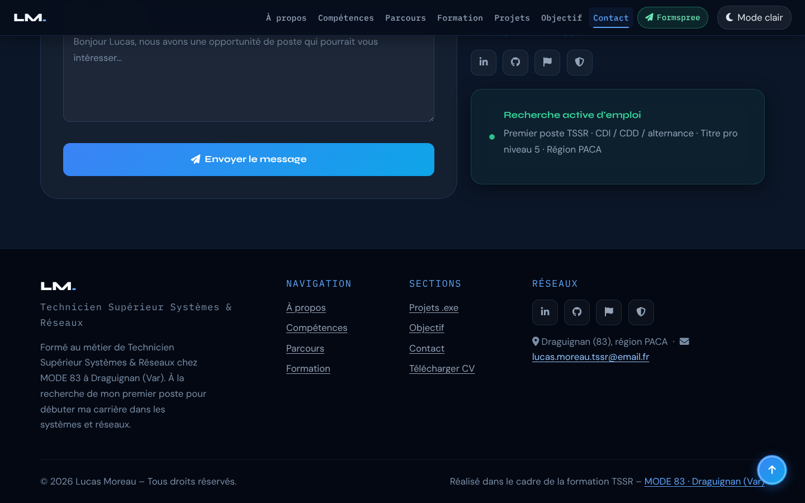
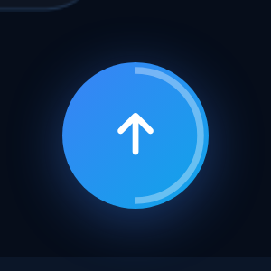
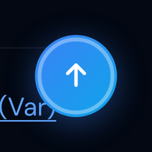
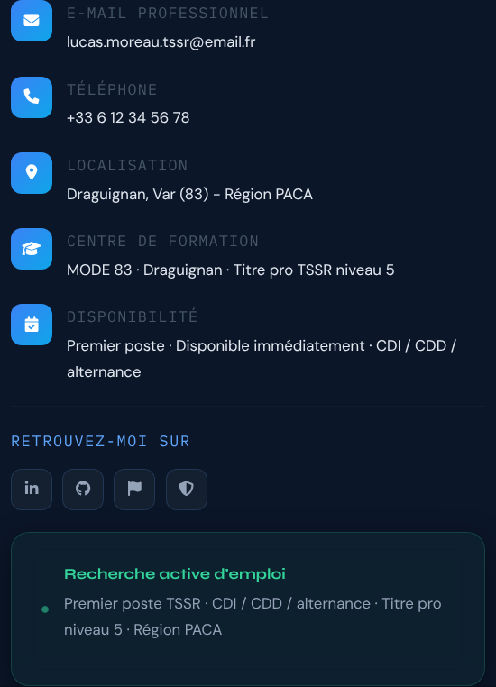
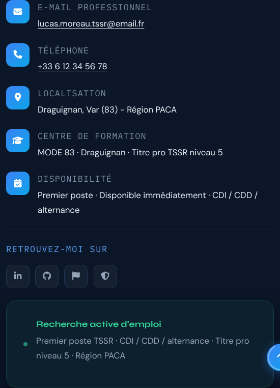
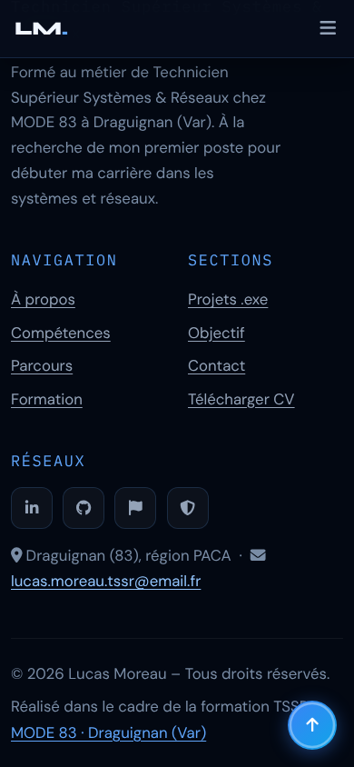
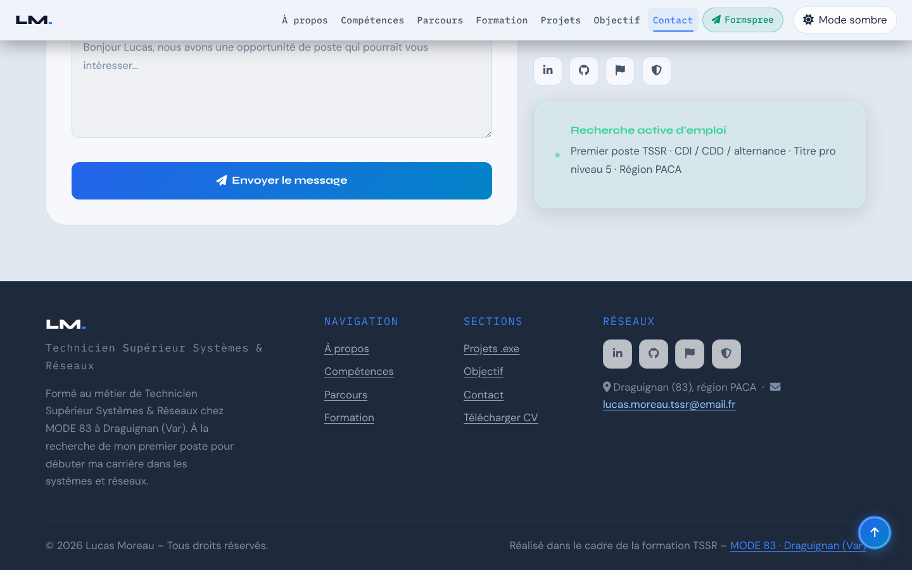

Le pied de page
- Documentation
- MDN — L'élément <footer> · MDN — Le rôle contentinfo · MDN — L'élément <ul> · MDN — Le rôle list · MDN — Glossaire : entité HTML
- Lignes concernées
- 2043 à 2093.
Série « Portfolio TSSR » · 20 épisodes

Objectif de l'épisode
On pose les dernières pierres de la structure.
Un pied de page complet, avec la navigation, les réseaux et un copyright dont l'année se met à jour toute seule.
Un bouton de retour en haut, entouré d'un anneau en SVG qui se remplit au fil de la lecture.
Et les corrections issues d'un audit Lighthouse : un gris plus lisible pour tous les textes discrets, et des liens qu'on reconnaît sans la couleur.
À la fin de l'épisode, toute la structure de la page est en place.

Partie 2
À la fin de cet épisode, vous serez capable de construire un pied de page accessible,
de dessiner et d'animer un petit SVG et de corriger des défauts de contraste signalés par un audit.
<footer>, une grille Bootstrap et des listes de liens.new Date().getFullYear().stroke-dasharray.scrollY, scrollHeight et innerHeight.opacity et visibility.Les mots des épisodes précédents sont dans les listes des épisodes 1 à 11.
<footer> : viewBoxstroke-dasharray`…` ${…} insère une valeur.#475569) au lieu d'une variable : elle ne suit pas les corrections de la variable. : un espace qui ne peut pas être coupé en fin de ligne.Partie 3
Cochez chaque case quand l'étape est faite.
Les cases cochées sont mémorisées sur votre ordinateur.
Tout le nouveau code est écrit dans index.html. config.js, images/ et ressources/
restent identiques.
Partie 4 · par rapport à l'épisode 11
L'épisode 12 ajoute cinq blocs et modifie une ligne.
Les numéros de ligne ci-dessous sont ceux de votre fichier de l'épisode 11 (2196 lignes).
.dispo-card-desc (ligne 912) et la ligne vide qui suit.footer { à #backToTop i, 37 lignes, suivies d'une ligne vide) : juste avant #toast { (ligne 914).@media (max-width: 575.98px) : ajoutez #backToTop { bottom: 1.2rem; right: 1.2rem; } à la fin, avant la dernière accolade.:focus-visible (ligne 930).:focus-visible et ::selection.::selection (ligne 931), juste avant </style> (ligne 932). Ce bloc doit rester le dernier de la feuille de style.</main> (ligne 1980) et la ligne vide qui suit.</main>, juste avant le <script> de Bootstrap (ligne 1982).function showToast (ligne 2063).</script>, </body>, </html>.Résultat : le fichier passe de 2196 à 2329 lignes. Les numéros cités dans le reste de cette page sont ceux du nouveau fichier.
@media (max-width: 575.98px) { #hero { padding: 6rem 0 3rem; } .hero-stat-sep { display: none; } .contact-form-wrap { padding: 1.5rem; } }
@media (max-width: 575.98px) { #hero { padding: 6rem 0 3rem; } .hero-stat-sep { display: none; } .contact-form-wrap { padding: 1.5rem; } #backToTop { bottom: 1.2rem; right: 1.2rem; } }Les lignes précédées de + sont à ajouter ; les autres existent déjà.
Zone 1 — avant le toast
.dispo-card-desc { … }
footer { … }
… (logo, colonnes, liens, copyright, bouton, anneau)
#backToTop i { position: relative; z-index: 1; }
#toast { … }Zone 2 — la fin du premier <style>
@media (max-width: 319.98px) { … }
.footer-location { color: #8da3b8 !important; }
.footer-location a { … }
:focus-visible { … }
::selection { … }
:root { --clr-text-faint: #7a8da6; }
… (copyright, localisation, liens soulignés)
</style>Zone 3 — après le <main>
</main>
<footer role="contentinfo"> … </footer>
<button id="backToTop" …> … </button>
<script src="…bootstrap.bundle.min.js"></script>Zone 4 — entre le module 6 et le module 8
})(); (fin du module 6)
(function () { … module 7 : retour en haut … })();
function showToast(msg, duration) { … }Trois règles de placement à retenir
<style> : :root { --clr-text-faint: … } </main>, pas dedans : il ne fait pas partie du contenu principal.#backToTop : btn vaudrait null et le module planterait.Partie 5
Les règles pour reconnaître une source officielle restent celles de l'épisode 1. Les liens marqués s'ouvrent dans un nouvel onglet.
document.write en dehors du chargement de la page (voir la fiche de la ligne 2089).:root gagne, et pourquoi la ligne 968 n'a plus d'effet.Partie 6
On construit le footer, puis le bouton, et on termine par l'audit et ses corrections :
on voit le problème avant de le corriger.
Vous voyez : sous la section Contact, le footer sans style : les listes ont des puces et des liens bleus soulignés ; les quatre carrés des réseaux sont déjà stylés (classe de l'épisode 11) ; le copyright affiche l'année en cours.
Vous voyez : le footer presque noir en quatre colonnes sur ordinateur, deux colonnes de liens côte à côte sur mobile. Les liens sont gris, sans soulignement ; le copyright et les petits textes sont très sombres.
Collez le bouton (lignes 2095 à 2100), son CSS (lignes 933 à 950), la ligne 965 et le module 7 (lignes 2183 à 2194).
Vous voyez : en haut de page, rien. Après 300 pixels de défilement, un rond bleu apparaît en bas à droite ; son anneau blanc se remplit à mesure que vous descendez, et il est complet tout en bas. Un clic remonte en douceur.
Outils de développement (F12) › onglet Lighthouse › catégorie « Accessibilité » › « Analyser le chargement de la page ».
Vous voyez : un score inférieur à 100, avec des remarques sur le contraste des couleurs et sur des liens qui ne se distinguent que par leur couleur. Le score exact dépend de votre page et de votre version de Chrome.
Vous voyez : les titres des informations de contact, les textes d'exemple du formulaire et le copyright sont nettement plus lisibles ; les liens du footer et les liens mail et téléphone du contact sont soulignés.
Vous voyez : en thème sombre, plus aucun défaut de contraste (vérifié avec l'outil axe, celui sur lequel s'appuie Lighthouse). En thème clair, des défauts restent : voir la partie 9.
Vous avez terminé quand votre fichier fait 2329 lignes, identiques au code de référence (bouton « Surligner les ajouts » de la partie 8), sans erreur rouge dans la Console.
Partie 7 · la plus importante
Chaque fiche répond aux quatre questions Quoi ?, Pourquoi ?, Comment ? et Où ?.
Les numéros sont ceux du nouveau fichier de 2329 lignes.
L'anneau qui se remplit, en trois idées
stroke-dasharray: L 151 trace un tiret de longueur L puis un vide de 151. Ces lignes existent déjà, seul leur numéro a changé.
Le lien ouvre la fiche de l'épisode où elles ont été expliquées dans un nouvel onglet.
| Ligne (épisode 12) | Code | Fiche |
|---|---|---|
| 1 | <!DOCTYPE html> | Épisode 1, ligne 1 |
| 2 | <html lang="fr" data-theme="dark" dir="ltr"> | Épisode 1, ligne 2 |
| 3 | <head> | Épisode 1, ligne 3 |
| 4 | <meta charset="UTF-8" /> | Épisode 1, ligne 4 |
| 5 | <meta name="viewport" content="width=device-width, initia… | Épisode 1, ligne 5 |
| 6 | <meta name="description" content="Portfolio professionnel… | Épisode 1, ligne 6 |
| 7 | <meta name="keywords" content="TSSR, technicien systèmes … | Épisode 1, ligne 7 |
| 8 | <meta name="robots" content="index, follow" /> | Épisode 1, ligne 8 |
| 9 | <meta name="theme-color" content="#060d1a" /> | Épisode 1, ligne 9 |
| 10 | <meta name="author" content="Lucas Moreau" /> | Épisode 1, ligne 10 |
| 12 | <link rel="preconnect" href="https://fonts.googleapis.com… | Épisode 1, ligne 12 |
| 13 | <link rel="preconnect" href="https://fonts.gstatic.com" c… | Épisode 1, ligne 13 |
| 14 | <link href="https://fonts.googleapis.com/css2?family=Syne… | Épisode 1, ligne 14 |
| 16 | <link rel="stylesheet" href="https://cdn.jsdelivr.net/npm… | Épisode 1, ligne 16 |
| 17 | <link rel="stylesheet" href="https://cdnjs.cloudflare.com… | Épisode 1, ligne 17 |
| 18 | <link rel="stylesheet" href="https://cdnjs.cloudflare.com… | Épisode 1, ligne 18 |
| 20 | <script src="config.js"></script> | Épisode 1, ligne 20 |
| 21 | <script src="https://cdnjs.cloudflare.com/ajax/libs/pdf.j… | Épisode 1, ligne 21 |
| 23 | <link rel="icon" type="image/png" sizes="32x32" href="ima… | Épisode 1, ligne 23 |
| 24 | <link rel="icon" type="image/png" sizes="192x192" href="i… | Épisode 1, ligne 24 |
| 25 | <link rel="icon" type="image/webp" href="images/favicon-4… | Épisode 1, ligne 25 |
| 26 | <link rel="apple-touch-icon" sizes="180x180" href="images… | Épisode 1, ligne 26 |
| 28 | <title>Portfolio TSSR | Recherche d'emploi – Technicien S… | Épisode 1, ligne 28 |
| 29 | <style> | Épisode 2, ligne 29 |
| 30 | :root { | Épisode 2, ligne 30 |
| 31 | --clr-bg: #060d1a; | Épisode 2, ligne 31 |
| 32 | --clr-bg2: #0b1628; | Épisode 2, ligne 32 |
| 33 | --clr-surface: rgba(255,255,255,.04); | Épisode 2, ligne 33 |
| 34 | --clr-surface2: rgba(255,255,255,.07); | Épisode 2, ligne 34 |
| 35 | --clr-border: rgba(96,165,250,.18); | Épisode 2, ligne 35 |
| 36 | --clr-accent: #3b82f6; | Épisode 2, ligne 36 |
| 37 | --clr-accent2: #60a5fa; | Épisode 2, ligne 37 |
| 38 | --clr-accent3: #93c5fd; | Épisode 2, ligne 38 |
| 39 | --clr-teal: #0ea5e9; | Épisode 2, ligne 39 |
| 40 | --clr-cyan: #22d3ee; | Épisode 2, ligne 40 |
| 41 | --clr-text: #e2e8f0; | Épisode 2, ligne 41 |
| 42 | --clr-text-soft: #94a3b8; | Épisode 2, ligne 42 |
| 43 | --clr-text-faint: #475569; | Épisode 2, ligne 43 |
| 44 | --clr-heading: #f0f6ff; | Épisode 2, ligne 44 |
| 45 | --clr-white: #ffffff; | Épisode 2, ligne 45 |
| 46 | --clr-danger: #f87171; | Épisode 2, ligne 46 |
| 47 | --clr-success: #34d399; | Épisode 2, ligne 47 |
| 48 | --clr-warn: #fbbf24; | Épisode 2, ligne 48 |
| 49 | --radius-sm: 6px; | Épisode 2, ligne 49 |
| 50 | --radius-md: 12px; | Épisode 2, ligne 50 |
| 51 | --radius-lg: 20px; | Épisode 2, ligne 51 |
| 52 | --radius-xl: 32px; | Épisode 2, ligne 52 |
| 53 | --shadow-glow: 0 0 40px rgba(59,130,246,.25); | Épisode 2, ligne 53 |
| 54 | --shadow-card: 0 8px 32px rgba(0,0,0,.45); | Épisode 2, ligne 54 |
| 55 | --trans: .3s cubic-bezier(.4,0,.2,1); | Épisode 2, ligne 55 |
| 56 | --font-display: 'Syne', sans-serif; | Épisode 2, ligne 56 |
| 57 | --font-mono: 'IBM Plex Mono', monospace; | Épisode 2, ligne 57 |
| 58 | --font-body: 'DM Sans', sans-serif; | Épisode 2, ligne 58 |
| 59 | --fz-min: 1.05rem; | Épisode 2, ligne 59 |
| 60 | } | Épisode 2, ligne 60 |
| 62 | [data-theme="light"] { | Épisode 2, ligne 62 |
| 63 | --clr-bg: #f0f4fa; | Épisode 2, ligne 63 |
| 64 | --clr-bg2: #e2e8f0; | Épisode 2, ligne 64 |
| 65 | --clr-surface: rgba(255,255,255,.7); | Épisode 2, ligne 65 |
| 66 | --clr-surface2: rgba(255,255,255,.9); | Épisode 2, ligne 66 |
| 67 | --clr-border: rgba(59,130,246,.2); | Épisode 2, ligne 67 |
| 68 | --clr-accent: #2563eb; | Épisode 2, ligne 68 |
| 69 | --clr-accent2: #3b82f6; | Épisode 2, ligne 69 |
| 70 | --clr-accent3: #60a5fa; | Épisode 2, ligne 70 |
| 71 | --clr-teal: #0284c7; | Épisode 2, ligne 71 |
| 72 | --clr-cyan: #0891b2; | Épisode 2, ligne 72 |
| 73 | --clr-text: #1e293b; | Épisode 2, ligne 73 |
| 74 | --clr-text-soft: #475569; | Épisode 2, ligne 74 |
| 75 | --clr-text-faint: #94a3b8; | Épisode 2, ligne 75 |
| 76 | --clr-heading: #0f172a; | Épisode 2, ligne 76 |
| 77 | --clr-white: #ffffff; | Épisode 2, ligne 77 |
| 78 | --shadow-glow: 0 0 40px rgba(37,99,235,.15); | Épisode 2, ligne 78 |
| 79 | --shadow-card: 0 8px 32px rgba(0,0,0,.12); | Épisode 2, ligne 79 |
| 80 | } | Épisode 2, ligne 80 |
| 82 | *, *::before, *::after { box-sizing: border-box; margin: … | Épisode 2, ligne 82 |
| 84 | html { scroll-behavior: smooth; font-size: 16px; } | Épisode 2, ligne 84 |
| 86 | body { | Épisode 2, ligne 86 |
| 87 | font-family: var(--font-body); | Épisode 2, ligne 87 |
| 88 | background-color: var(--clr-bg); | Épisode 2, ligne 88 |
| 89 | color: var(--clr-text); | Épisode 2, ligne 89 |
| 90 | font-size: var(--fz-min); | Épisode 2, ligne 90 |
| 91 | line-height: 1.7; | Épisode 2, ligne 91 |
| 92 | overflow-x: hidden; | Épisode 2, ligne 92 |
| 93 | transition: background-color var(--trans), color var(--tr… | Épisode 2, ligne 93 |
| 94 | } | Épisode 2, ligne 94 |
| 96 | ::-webkit-scrollbar { width: 7px; } | Épisode 2, ligne 96 |
| 97 | ::-webkit-scrollbar-track { background: var(--clr… | Épisode 2, ligne 97 |
| 98 | ::-webkit-scrollbar-thumb { | Épisode 2, ligne 98 |
| 99 | background: linear-gradient(180deg, var(--clr-accent), va… | Épisode 2, ligne 99 |
| 100 | border-radius: 10px; height: 120px; | Épisode 2, ligne 100 |
| 101 | } | Épisode 2, ligne 101 |
| 102 | ::-webkit-scrollbar-thumb:hover { | Épisode 2, ligne 102 |
| 103 | background: linear-gradient(180deg, var(--clr-accent2), v… | Épisode 2, ligne 103 |
| 104 | box-shadow: 0 0 8px var(--clr-accent); | Épisode 2, ligne 104 |
| 105 | } | Épisode 2, ligne 105 |
| 107 | .skip-link { | Épisode 2, ligne 107 |
| 108 | position: absolute; | Épisode 2, ligne 108 |
| 109 | top: -60px; left: 1rem; | Épisode 2, ligne 109 |
| 110 | background: var(--clr-accent); | Épisode 2, ligne 110 |
| 111 | color: var(--clr-white); | Épisode 2, ligne 111 |
| 112 | padding: .6rem 1.2rem; | Épisode 2, ligne 112 |
| 113 | border-radius: var(--radius-md); | Épisode 2, ligne 113 |
| 114 | font-weight: 600; | Épisode 2, ligne 114 |
| 115 | font-size: var(--fz-min); | Épisode 2, ligne 115 |
| 116 | z-index: 9999; | Épisode 2, ligne 116 |
| 117 | transition: top .2s; | Épisode 2, ligne 117 |
| 118 | text-decoration: none; | Épisode 2, ligne 118 |
| 119 | } | Épisode 2, ligne 119 |
| 120 | .skip-link:focus { top: 1rem; } | Épisode 2, ligne 120 |
| 122 | #read-progress { | Épisode 2, ligne 122 |
| 123 | position: fixed; top: 0; left: 0; | Épisode 2, ligne 123 |
| 124 | height: 3px; width: 0%; | Épisode 2, ligne 124 |
| 125 | background: linear-gradient(90deg, var(--clr-accent), var… | Épisode 2, ligne 125 |
| 126 | z-index: 9998; | Épisode 2, ligne 126 |
| 127 | transition: width .1s linear; | Épisode 2, ligne 127 |
| 128 | box-shadow: 0 0 10px var(--clr-accent); | Épisode 2, ligne 128 |
| 129 | } | Épisode 2, ligne 129 |
| 131 | #mainNav { | Épisode 3, ligne 131 |
| 132 | position: fixed; top: 0; left: 0; right: 0; | Épisode 3, ligne 132 |
| 133 | z-index: 1050; | Épisode 3, ligne 133 |
| 134 | padding: .9rem 0; | Épisode 3, ligne 134 |
| 135 | background: rgba(6,13,26,.82); | Épisode 3, ligne 135 |
| 136 | backdrop-filter: blur(18px) saturate(1.4); | Épisode 3, ligne 136 |
| 137 | -webkit-backdrop-filter: blur(18px) saturate(1.4); | Épisode 3, ligne 137 |
| 138 | border-bottom: 1px solid var(--clr-border); | Épisode 3, ligne 138 |
| 139 | transition: all var(--trans); | Épisode 3, ligne 139 |
| 140 | } | Épisode 3, ligne 140 |
| 141 | #mainNav.scrolled { | Épisode 3, ligne 141 |
| 142 | padding: .55rem 0; | Épisode 3, ligne 142 |
| 143 | background: rgba(6,13,26,.95); | Épisode 3, ligne 143 |
| 144 | box-shadow: 0 4px 30px rgba(0,0,0,.4); | Épisode 3, ligne 144 |
| 145 | } | Épisode 3, ligne 145 |
| 146 | [data-theme="light"] #mainNav { background: rgba(240,244,… | Épisode 3, ligne 146 |
| 147 | [data-theme="light"] #mainNav.scrolled { background: rgba… | Épisode 3, ligne 147 |
| 149 | .nav-brand { | Épisode 3, ligne 149 |
| 150 | font-family: var(--font-display); | Épisode 3, ligne 150 |
| 151 | font-weight: 800; font-size: 1.3rem; | Épisode 3, ligne 151 |
| 152 | color: var(--clr-heading) !important; | Épisode 3, ligne 152 |
| 153 | text-decoration: none; letter-spacing: -.02em; | Épisode 3, ligne 153 |
| 154 | } | Épisode 3, ligne 154 |
| 155 | .nav-brand span { color: var(--clr-accent2); } | Épisode 3, ligne 155 |
| 157 | .navbar-nav .nav-link { | Épisode 3, ligne 157 |
| 158 | font-family: var(--font-mono); | Épisode 3, ligne 158 |
| 159 | font-size: .92rem; | Épisode 3, ligne 159 |
| 160 | font-weight: 500; | Épisode 3, ligne 160 |
| 161 | color: var(--clr-text-soft) !important; | Épisode 3, ligne 161 |
| 162 | letter-spacing: .02em; | Épisode 3, ligne 162 |
| 163 | padding: .4rem .5rem !important; | Épisode 3, ligne 163 |
| 164 | border-radius: var(--radius-sm); | Épisode 3, ligne 164 |
| 165 | transition: all var(--trans); | Épisode 3, ligne 165 |
| 166 | position: relative; | Épisode 3, ligne 166 |
| 167 | } | Épisode 3, ligne 167 |
| 168 | .navbar-nav .nav-link::before { | Épisode 3, ligne 168 |
| 169 | content: ''; | Épisode 3, ligne 169 |
| 170 | position: absolute; bottom: 0; left: 50%; right: 50%; | Épisode 3, ligne 170 |
| 171 | height: 2px; background: var(--clr-accent2); | Épisode 3, ligne 171 |
| 172 | border-radius: 2px; transition: all var(--trans); | Épisode 3, ligne 172 |
| 173 | } | Épisode 3, ligne 173 |
| 174 | .navbar-nav .nav-link:hover, | Épisode 3, ligne 174 |
| 175 | .navbar-nav .nav-link:focus { | Épisode 3, ligne 175 |
| 176 | color: var(--clr-accent2) !important; | Épisode 3, ligne 176 |
| 177 | background: rgba(59,130,246,.08); | Épisode 3, ligne 177 |
| 178 | } | Épisode 3, ligne 178 |
| 179 | .navbar-nav .nav-link:hover::before, | Épisode 3, ligne 179 |
| 180 | .navbar-nav .nav-link:focus::before { left: 10%; right: 1… | Épisode 3, ligne 180 |
| 182 | .navbar-nav .nav-link.active { | Épisode 8, ligne 182 |
| 183 | color: var(--clr-accent2) !important; | Épisode 8, ligne 183 |
| 184 | background: rgba(59,130,246,.08); | Épisode 8, ligne 184 |
| 185 | } | Épisode 8, ligne 185 |
| 186 | .navbar-nav .nav-link.active::before { left: 10%; right: … | Épisode 8, ligne 186 |
| 188 | #themeToggle { | Épisode 3, ligne 182 |
| 189 | background: var(--clr-surface2); | Épisode 3, ligne 183 |
| 190 | border: 1px solid var(--clr-border); | Épisode 3, ligne 184 |
| 191 | color: var(--clr-text); | Épisode 3, ligne 185 |
| 192 | padding: .4rem .9rem; | Épisode 3, ligne 186 |
| 193 | border-radius: var(--radius-lg); | Épisode 3, ligne 187 |
| 194 | cursor: pointer; font-size: var(--fz-min); | Épisode 3, ligne 188 |
| 195 | transition: all var(--trans); | Épisode 3, ligne 189 |
| 196 | display: flex; align-items: center; gap: .5rem; | Épisode 3, ligne 190 |
| 197 | white-space: nowrap; | Épisode 3, ligne 191 |
| 198 | } | Épisode 3, ligne 192 |
| 199 | #themeToggle:hover { background: var(--clr-accent); color… | Épisode 3, ligne 193 |
| 200 | #themeToggle:focus-visible { outline: 2px solid var(--clr… | Épisode 3, ligne 194 |
| 202 | #hero { | Épisode 4, ligne 196 |
| 203 | min-height: 100vh; | Épisode 4, ligne 197 |
| 204 | display: flex; align-items: center; | Épisode 4, ligne 198 |
| 205 | position: relative; overflow: hidden; | Épisode 4, ligne 199 |
| 206 | padding: 7rem 0 4rem; | Épisode 4, ligne 200 |
| 207 | } | Épisode 4, ligne 201 |
| 208 | #hero::before { | Épisode 4, ligne 202 |
| 209 | content: ''; position: absolute; inset: 0; | Épisode 4, ligne 203 |
| 210 | background-image: | Épisode 4, ligne 204 |
| 211 | linear-gradient(rgba(59,130,246,.07) 1px, transparent 1px… | Épisode 4, ligne 205 |
| 212 | linear-gradient(90deg, rgba(59,130,246,.07) 1px, transpar… | Épisode 4, ligne 206 |
| 213 | background-size: 40px 40px; z-index: 0; | Épisode 4, ligne 207 |
| 214 | } | Épisode 4, ligne 208 |
| 215 | #hero::after { | Épisode 4, ligne 209 |
| 216 | content: ''; position: absolute; | Épisode 4, ligne 210 |
| 217 | top: -10%; left: -10%; width: 70%; height: 70%; | Épisode 4, ligne 211 |
| 218 | background: radial-gradient(ellipse at center, rgba(59,13… | Épisode 4, ligne 212 |
| 219 | z-index: 0; animation: floatGlow 6s ease-in-out infinite … | Épisode 4, ligne 213 |
| 220 | } | Épisode 4, ligne 214 |
| 221 | @keyframes floatGlow { | Épisode 4, ligne 215 |
| 222 | from { transform: translate(0,0) scale(1); } | Épisode 4, ligne 216 |
| 223 | to { transform: translate(4%,3%) scale(1.05); } | Épisode 4, ligne 217 |
| 224 | } | Épisode 4, ligne 218 |
| 225 | .hero-content { position: relative; z-index: 1; } | Épisode 4, ligne 219 |
| 227 | .status-badge { | Épisode 4, ligne 221 |
| 228 | display: inline-flex; align-items: center; gap: .5rem; | Épisode 4, ligne 222 |
| 229 | background: rgba(52,211,153,.1); | Épisode 4, ligne 223 |
| 230 | border: 1px solid rgba(52,211,153,.3); | Épisode 4, ligne 224 |
| 231 | color: var(--clr-success); | Épisode 4, ligne 225 |
| 232 | font-family: var(--font-mono); | Épisode 4, ligne 226 |
| 233 | font-size: var(--fz-min); font-weight: 500; | Épisode 4, ligne 227 |
| 234 | letter-spacing: .04em; | Épisode 4, ligne 228 |
| 235 | padding: .4rem 1rem; border-radius: 100px; | Épisode 4, ligne 229 |
| 236 | margin-bottom: 1.4rem; | Épisode 4, ligne 230 |
| 237 | } | Épisode 4, ligne 231 |
| 238 | .status-dot { | Épisode 4, ligne 232 |
| 239 | width: 7px; height: 7px; | Épisode 4, ligne 233 |
| 240 | background: var(--clr-success); border-radius: 50%; | Épisode 4, ligne 234 |
| 241 | animation: pulse-dot 1.6s ease infinite; flex-shrink: 0; | Épisode 4, ligne 235 |
| 242 | } | Épisode 4, ligne 236 |
| 243 | @keyframes pulse-dot { | Épisode 4, ligne 237 |
| 244 | 0%,100% { opacity: 1; transform: scale(1); } | Épisode 4, ligne 238 |
| 245 | 50% { opacity: .5; transform: scale(.75); } | Épisode 4, ligne 239 |
| 246 | } | Épisode 4, ligne 240 |
| 248 | .hero-title { | Épisode 4, ligne 242 |
| 249 | font-family: var(--font-display); font-weight: 800; | Épisode 4, ligne 243 |
| 250 | font-size: clamp(2.4rem, 6vw, 4.2rem); | Épisode 4, ligne 244 |
| 251 | line-height: 1.1; color: var(--clr-heading); | Épisode 4, ligne 245 |
| 252 | letter-spacing: -.03em; margin-bottom: 1rem; | Épisode 4, ligne 246 |
| 253 | } | Épisode 4, ligne 247 |
| 254 | .hero-title .accent { color: var(--clr-accent2); } | Épisode 4, ligne 248 |
| 255 | .hero-title .typing-cursor { | Épisode 4, ligne 249 |
| 256 | display: inline-block; width: 3px; height: 1em; | Épisode 4, ligne 250 |
| 257 | background: var(--clr-accent2); margin-left: 3px; | Épisode 4, ligne 251 |
| 258 | vertical-align: text-bottom; | Épisode 4, ligne 252 |
| 259 | animation: blink .75s step-end infinite; | Épisode 4, ligne 253 |
| 260 | } | Épisode 4, ligne 254 |
| 261 | @keyframes blink { 50% { opacity: 0; } } | Épisode 4, ligne 255 |
| 263 | .hero-subtitle { | Épisode 4, ligne 257 |
| 264 | font-family: var(--font-mono); | Épisode 4, ligne 258 |
| 265 | font-size: clamp(var(--fz-min), 1.8vw, 1.15rem); | Épisode 4, ligne 259 |
| 266 | color: var(--clr-accent3); letter-spacing: .04em; margin-… | Épisode 4, ligne 260 |
| 267 | } | Épisode 4, ligne 261 |
| 268 | .hero-desc { | Épisode 4, ligne 262 |
| 269 | font-size: clamp(var(--fz-min), 2vw, 1.15rem); | Épisode 4, ligne 263 |
| 270 | color: var(--clr-text-soft); | Épisode 4, ligne 264 |
| 271 | max-width: 520px; margin-bottom: 2.2rem; line-height: 1.8; | Épisode 4, ligne 265 |
| 272 | } | Épisode 4, ligne 266 |
| 274 | .hero-avatar-wrap { | Épisode 4, ligne 268 |
| 275 | position: relative; display: flex; | Épisode 4, ligne 269 |
| 276 | justify-content: center; align-items: center; | Épisode 4, ligne 270 |
| 277 | } | Épisode 4, ligne 271 |
| 278 | .hero-avatar-ring { | Épisode 4, ligne 272 |
| 279 | position: relative; | Épisode 4, ligne 273 |
| 280 | width: clamp(220px,30vw,300px); | Épisode 4, ligne 274 |
| 281 | height: clamp(220px,30vw,300px); | Épisode 4, ligne 275 |
| 282 | } | Épisode 4, ligne 276 |
| 283 | .hero-avatar-ring::before, | Épisode 4, ligne 277 |
| 284 | .hero-avatar-ring::after { | Épisode 4, ligne 278 |
| 285 | content: ''; | Épisode 4, ligne 279 |
| 286 | position: absolute; | Épisode 4, ligne 280 |
| 287 | inset: -12px; | Épisode 4, ligne 281 |
| 288 | border-radius: 50%; | Épisode 4, ligne 282 |
| 289 | border: 2px solid transparent; | Épisode 4, ligne 283 |
| 291 | background: conic-gradient( | Épisode 4, ligne 285 |
| 292 | from 0deg, | Épisode 4, ligne 286 |
| 293 | var(--clr-accent), | Épisode 4, ligne 287 |
| 294 | var(--clr-teal), | Épisode 4, ligne 288 |
| 295 | transparent 60% | Épisode 4, ligne 289 |
| 296 | ) border-box; | Épisode 4, ligne 290 |
| 298 | -webkit-mask: | Épisode 4, ligne 292 |
| 299 | linear-gradient(#fff 0 0) padding-box, | Épisode 4, ligne 293 |
| 300 | linear-gradient(#fff 0 0); | Épisode 4, ligne 294 |
| 302 | -webkit-mask-composite: destination-out; | Épisode 4, ligne 296 |
| 304 | mask: | Épisode 4, ligne 298 |
| 305 | linear-gradient(#fff 0 0) padding-box, | Épisode 4, ligne 299 |
| 306 | linear-gradient(#fff 0 0); | Épisode 4, ligne 300 |
| 308 | mask-composite: exclude; | Épisode 4, ligne 302 |
| 310 | animation: spinRing 8s linear infinite; | Épisode 4, ligne 304 |
| 311 | } | Épisode 4, ligne 305 |
| 312 | .hero-avatar-ring::after { | Épisode 4, ligne 306 |
| 313 | inset: -22px; border-width: 1px; opacity: .4; | Épisode 4, ligne 307 |
| 314 | animation-duration: 14s; animation-direction: reverse; | Épisode 4, ligne 308 |
| 315 | } | Épisode 4, ligne 309 |
| 316 | @keyframes spinRing { to { transform: rotate(360deg); } } | Épisode 4, ligne 310 |
| 318 | .hero-avatar { | Épisode 4, ligne 312 |
| 319 | width: 100%; height: 100%; border-radius: 50%; | Épisode 4, ligne 313 |
| 320 | background: linear-gradient(145deg, #1a3a5c 0%, #0b1e38 4… | Épisode 4, ligne 314 |
| 321 | border: 3px solid var(--clr-border); | Épisode 4, ligne 315 |
| 322 | display: flex; flex-direction: column; | Épisode 4, ligne 316 |
| 323 | align-items: center; justify-content: center; gap: .4rem; | Épisode 4, ligne 317 |
| 324 | overflow: hidden; position: relative; | Épisode 4, ligne 318 |
| 325 | } | Épisode 4, ligne 319 |
| 326 | .hero-avatar i { font-size: clamp(4rem,10vw,5.5rem); colo… | Épisode 4, ligne 320 |
| 327 | .hero-avatar .avatar-label { | Épisode 4, ligne 321 |
| 328 | font-family: var(--font-mono); font-size: var(--fz-min); | Épisode 4, ligne 322 |
| 329 | color: var(--clr-accent2); letter-spacing: .1em; opacity:… | Épisode 4, ligne 323 |
| 330 | } | Épisode 4, ligne 324 |
| 332 | .floating-chip { | Épisode 4, ligne 326 |
| 333 | position: absolute; | Épisode 4, ligne 327 |
| 334 | background: var(--clr-surface); backdrop-filter: blur(10p… | Épisode 4, ligne 328 |
| 335 | border: 1px solid var(--clr-border); border-radius: var(-… | Épisode 4, ligne 329 |
| 336 | padding: .5rem 1rem; font-family: var(--font-mono); | Épisode 4, ligne 330 |
| 337 | font-size: var(--fz-min); color: var(--clr-accent3); whit… | Épisode 4, ligne 331 |
| 338 | animation: chipFloat 4s ease-in-out infinite alternate; | Épisode 4, ligne 332 |
| 339 | } | Épisode 4, ligne 333 |
| 340 | .floating-chip:nth-child(2) { top: 5%; left: -8%; anima… | Épisode 4, ligne 334 |
| 341 | .floating-chip:nth-child(3) { bottom: 8%; right: -8%; ani… | Épisode 4, ligne 335 |
| 342 | .floating-chip:nth-child(4) { top: 40%; right: -12%; ani… | Épisode 4, ligne 336 |
| 343 | @keyframes chipFloat { | Épisode 4, ligne 337 |
| 344 | from { transform: translateY(0); } | Épisode 4, ligne 338 |
| 345 | to { transform: translateY(-8px); } | Épisode 4, ligne 339 |
| 346 | } | Épisode 4, ligne 340 |
| 348 | .btn-hero-primary { | Épisode 4, ligne 342 |
| 349 | display: inline-flex; align-items: center; gap: .55rem; | Épisode 4, ligne 343 |
| 350 | background: linear-gradient(135deg, var(--clr-accent), va… | Épisode 4, ligne 344 |
| 351 | color: #fff; font-family: var(--font-display); font-weigh… | Épisode 4, ligne 345 |
| 352 | font-size: var(--fz-min); padding: .85rem 1.9rem; | Épisode 4, ligne 346 |
| 353 | border-radius: var(--radius-lg); text-decoration: none; b… | Épisode 4, ligne 347 |
| 354 | cursor: pointer; transition: all var(--trans); | Épisode 4, ligne 348 |
| 355 | box-shadow: 0 4px 24px rgba(59,130,246,.35); | Épisode 4, ligne 349 |
| 356 | } | Épisode 4, ligne 350 |
| 357 | .btn-hero-primary:hover { transform: translateY(-3px); bo… | Épisode 4, ligne 351 |
| 358 | .btn-hero-primary:focus-visible { outline: 3px solid var(… | Épisode 4, ligne 352 |
| 360 | .btn-hero-secondary { | Épisode 4, ligne 354 |
| 361 | display: inline-flex; align-items: center; gap: .55rem; | Épisode 4, ligne 355 |
| 362 | background: transparent; color: var(--clr-text); | Épisode 4, ligne 356 |
| 363 | font-family: var(--font-display); font-weight: 600; | Épisode 4, ligne 357 |
| 364 | font-size: var(--fz-min); padding: .85rem 1.9rem; | Épisode 4, ligne 358 |
| 365 | border-radius: var(--radius-lg); text-decoration: none; | Épisode 4, ligne 359 |
| 366 | border: 1px solid var(--clr-border); cursor: pointer; | Épisode 4, ligne 360 |
| 367 | transition: all var(--trans); | Épisode 4, ligne 361 |
| 368 | } | Épisode 4, ligne 362 |
| 369 | .btn-hero-secondary:hover { | Épisode 4, ligne 363 |
| 370 | background: var(--clr-surface2); border-color: var(--clr-… | Épisode 4, ligne 364 |
| 371 | color: var(--clr-accent2); transform: translateY(-3px); | Épisode 4, ligne 365 |
| 372 | } | Épisode 4, ligne 366 |
| 373 | .btn-hero-secondary:focus-visible { outline: 3px solid va… | Épisode 4, ligne 367 |
| 375 | .hero-stats { display: flex; gap: 2rem; margin-top: 2.8re… | Épisode 4, ligne 369 |
| 376 | .hero-stat { text-align: left; } | Épisode 4, ligne 370 |
| 377 | .hero-stat .stat-val { | Épisode 4, ligne 371 |
| 378 | font-family: var(--font-display); font-weight: 800; font-… | Épisode 4, ligne 372 |
| 379 | color: var(--clr-heading); line-height: 1; | Épisode 4, ligne 373 |
| 380 | } | Épisode 4, ligne 374 |
| 381 | .hero-stat .stat-val span { color: var(--clr-accent2); } | Épisode 4, ligne 375 |
| 382 | .hero-stat .stat-lbl { | Épisode 4, ligne 376 |
| 383 | font-family: var(--font-mono); font-size: var(--fz-min); | Épisode 4, ligne 377 |
| 384 | color: var(--clr-text-faint); letter-spacing: .04em; | Épisode 4, ligne 378 |
| 385 | margin-top: .3rem; line-height: 1.4; | Épisode 4, ligne 379 |
| 386 | } | Épisode 4, ligne 380 |
| 387 | .hero-stat-sep { width: 1px; background: var(--clr-border… | Épisode 4, ligne 381 |
| 389 | .scroll-indicator { | Épisode 4, ligne 383 |
| 390 | position: absolute; bottom: 2.5rem; left: 50%; | Épisode 4, ligne 384 |
| 391 | transform: translateX(-50%); | Épisode 4, ligne 385 |
| 392 | display: flex; flex-direction: column; align-items: cente… | Épisode 4, ligne 386 |
| 393 | cursor: pointer; animation: bounceDown 2s ease infinite; … | Épisode 4, ligne 387 |
| 394 | text-decoration: none; | Épisode 4, ligne 388 |
| 395 | } | Épisode 4, ligne 389 |
| 396 | .scroll-indicator span { | Épisode 4, ligne 390 |
| 397 | font-family: var(--font-mono); font-size: var(--fz-min); | Épisode 4, ligne 391 |
| 398 | letter-spacing: .08em; color: var(--clr-text-faint); | Épisode 4, ligne 392 |
| 399 | } | Épisode 4, ligne 393 |
| 400 | .scroll-indicator i { color: var(--clr-accent2); font-siz… | Épisode 4, ligne 394 |
| 401 | @keyframes bounceDown { | Épisode 4, ligne 395 |
| 402 | 0%,20%,50%,80%,100% { transform: translateX(-50%) transla… | Épisode 4, ligne 396 |
| 403 | 40% { transform: translateX(-50%) translateY(6px); } | Épisode 4, ligne 397 |
| 404 | 60% { transform: translateX(-50%) translateY(3px); } | Épisode 4, ligne 398 |
| 405 | } | Épisode 4, ligne 399 |
| 407 | section { padding: 5.5rem 0; } | Épisode 5, ligne 401 |
| 409 | .section-label { | Épisode 5, ligne 403 |
| 410 | font-family: var(--font-mono); font-size: var(--fz-min); | Épisode 5, ligne 404 |
| 411 | letter-spacing: .12em; color: var(--clr-accent2); | Épisode 5, ligne 405 |
| 412 | text-transform: uppercase; display: flex; align-items: ce… | Épisode 5, ligne 406 |
| 413 | margin-bottom: .8rem; | Épisode 5, ligne 407 |
| 414 | } | Épisode 5, ligne 408 |
| 415 | .section-label::before { content: '//'; opacity: .5; } | Épisode 5, ligne 409 |
| 417 | .section-title { | Épisode 5, ligne 411 |
| 418 | font-family: var(--font-display); font-weight: 800; | Épisode 5, ligne 412 |
| 419 | font-size: clamp(1.8rem, 4vw, 2.8rem); | Épisode 5, ligne 413 |
| 420 | color: var(--clr-heading); letter-spacing: -.02em; | Épisode 5, ligne 414 |
| 421 | line-height: 1.15; margin-bottom: 1rem; | Épisode 5, ligne 415 |
| 422 | } | Épisode 5, ligne 416 |
| 423 | .section-title .accent { color: var(--clr-accent2); } | Épisode 5, ligne 417 |
| 425 | .section-desc { | Épisode 5, ligne 419 |
| 426 | color: var(--clr-text-soft); font-size: var(--fz-min); | Épisode 5, ligne 420 |
| 427 | max-width: 600px; line-height: 1.75; | Épisode 5, ligne 421 |
| 428 | } | Épisode 5, ligne 422 |
| 430 | .section-divider { | Épisode 5, ligne 424 |
| 431 | display: flex; align-items: center; gap: .8rem; margin: .… | Épisode 5, ligne 425 |
| 432 | } | Épisode 5, ligne 426 |
| 433 | .section-divider .line { | Épisode 5, ligne 427 |
| 434 | height: 2px; width: 48px; | Épisode 5, ligne 428 |
| 435 | background: linear-gradient(90deg, var(--clr-accent), tra… | Épisode 5, ligne 429 |
| 436 | border-radius: 2px; | Épisode 5, ligne 430 |
| 437 | } | Épisode 5, ligne 431 |
| 438 | .section-divider .dot { | Épisode 5, ligne 432 |
| 439 | width: 6px; height: 6px; border-radius: 50%; background: … | Épisode 5, ligne 433 |
| 440 | } | Épisode 5, ligne 434 |
| 442 | .reveal { | Épisode 5, ligne 436 |
| 443 | opacity: 0; transform: translateY(30px); | Épisode 5, ligne 437 |
| 444 | transition: opacity .65s cubic-bezier(.4,0,.2,1), transfo… | Épisode 5, ligne 438 |
| 445 | } | Épisode 5, ligne 439 |
| 446 | .reveal.visible { opacity: 1; transform: translateY(0); } | Épisode 5, ligne 440 |
| 447 | .reveal-left { transform: translateX(-30px); } | Épisode 5, ligne 441 |
| 448 | .reveal-right { transform: translateX(30px); } | Épisode 5, ligne 442 |
| 449 | .reveal-left.visible, .reveal-right.visible { transform: … | Épisode 5, ligne 443 |
| 451 | .glass-card { | Épisode 5, ligne 445 |
| 452 | background: var(--clr-surface); backdrop-filter: blur(14p… | Épisode 5, ligne 446 |
| 453 | -webkit-backdrop-filter: blur(14px); | Épisode 5, ligne 447 |
| 454 | border: 1px solid var(--clr-border); border-radius: var(-… | Épisode 5, ligne 448 |
| 455 | padding: 2rem; transition: all var(--trans); box-shadow: … | Épisode 5, ligne 449 |
| 456 | } | Épisode 5, ligne 450 |
| 457 | .glass-card:hover { | Épisode 5, ligne 451 |
| 458 | border-color: rgba(59,130,246,.4); | Épisode 5, ligne 452 |
| 459 | box-shadow: var(--shadow-glow), var(--shadow-card); trans… | Épisode 5, ligne 453 |
| 460 | } | Épisode 5, ligne 454 |
| 462 | #about { background: var(--clr-bg2); } | Épisode 5, ligne 456 |
| 464 | .about-text p { | Épisode 5, ligne 458 |
| 465 | color: var(--clr-text); font-size: var(--fz-min); | Épisode 5, ligne 459 |
| 466 | line-height: 1.85; margin-bottom: 1.1rem; | Épisode 5, ligne 460 |
| 467 | } | Épisode 5, ligne 461 |
| 468 | .about-text strong { color: var(--clr-accent2); font-weig… | Épisode 5, ligne 462 |
| 470 | .about-info-grid { | Épisode 5, ligne 464 |
| 471 | display: grid; grid-template-columns: 1fr 1fr; gap: .85re… | Épisode 5, ligne 465 |
| 472 | } | Épisode 5, ligne 466 |
| 473 | .about-info-item { | Épisode 5, ligne 467 |
| 474 | display: flex; align-items: center; gap: .65rem; | Épisode 5, ligne 468 |
| 475 | font-size: var(--fz-min); color: var(--clr-text-soft); | Épisode 5, ligne 469 |
| 476 | } | Épisode 5, ligne 470 |
| 477 | .about-info-item i { width: 20px; color: var(--clr-accent… | Épisode 5, ligne 471 |
| 479 | .motive-list { list-style: none; padding: 0; display: fle… | Épisode 5, ligne 473 |
| 480 | .motive-list li { | Épisode 5, ligne 474 |
| 481 | display: flex; align-items: flex-start; gap: .85rem; | Épisode 5, ligne 475 |
| 482 | font-size: var(--fz-min); color: var(--clr-text-soft); | Épisode 5, ligne 476 |
| 483 | padding: .8rem 1rem; background: var(--clr-surface); | Épisode 5, ligne 477 |
| 484 | border: 1px solid var(--clr-border); border-radius: var(-… | Épisode 5, ligne 478 |
| 485 | transition: all var(--trans); | Épisode 5, ligne 479 |
| 486 | } | Épisode 5, ligne 480 |
| 487 | .motive-list li:hover { border-color: var(--clr-accent2);… | Épisode 5, ligne 481 |
| 488 | .motive-list li .ico { | Épisode 5, ligne 482 |
| 489 | width: 34px; height: 34px; | Épisode 5, ligne 483 |
| 490 | background: linear-gradient(135deg, var(--clr-accent), va… | Épisode 5, ligne 484 |
| 491 | border-radius: var(--radius-sm); display: flex; align-ite… | Épisode 5, ligne 485 |
| 492 | justify-content: center; flex-shrink: 0; font-size: var(-… | Épisode 5, ligne 486 |
| 493 | } | Épisode 5, ligne 487 |
| 494 | .motive-list li strong { | Épisode 5, ligne 488 |
| 495 | color: var(--clr-heading); display: block; | Épisode 5, ligne 489 |
| 496 | margin-bottom: .2rem; font-size: var(--fz-min); | Épisode 5, ligne 490 |
| 497 | } | Épisode 5, ligne 491 |
| 499 | #skills { background: var(--clr-bg); } | Épisode 6, ligne 493 |
| 501 | .skill-cat-title { | Épisode 5, ligne 493 |
| 502 | font-family: var(--font-mono); font-size: var(--fz-min); | Épisode 5, ligne 494 |
| 503 | letter-spacing: .1em; color: var(--clr-accent2); | Épisode 5, ligne 495 |
| 504 | text-transform: uppercase; margin-bottom: 1.2rem; | Épisode 5, ligne 496 |
| 505 | } | Épisode 5, ligne 497 |
| 507 | .skill-card { | Épisode 6, ligne 501 |
| 508 | background: var(--clr-surface); border: 1px solid var(--c… | Épisode 6, ligne 502 |
| 509 | border-radius: var(--radius-md); padding: 1.2rem 1.4rem; | Épisode 6, ligne 503 |
| 510 | transition: all var(--trans); cursor: default; | Épisode 6, ligne 504 |
| 511 | } | Épisode 6, ligne 505 |
| 512 | .skill-card:hover { | Épisode 6, ligne 506 |
| 513 | border-color: rgba(59,130,246,.45); background: var(--clr… | Épisode 6, ligne 507 |
| 514 | transform: translateY(-3px); box-shadow: 0 6px 24px rgba(… | Épisode 6, ligne 508 |
| 515 | } | Épisode 6, ligne 509 |
| 516 | .skill-header { display: flex; justify-content: space-bet… | Épisode 6, ligne 510 |
| 517 | .skill-name { | Épisode 6, ligne 511 |
| 518 | display: flex; align-items: center; gap: .6rem; | Épisode 6, ligne 512 |
| 519 | font-family: var(--font-display); font-weight: 600; | Épisode 6, ligne 513 |
| 520 | font-size: var(--fz-min); color: var(--clr-text); | Épisode 6, ligne 514 |
| 521 | } | Épisode 6, ligne 515 |
| 522 | .skill-name i { color: var(--clr-accent2); font-size: var… | Épisode 6, ligne 516 |
| 523 | .skill-pct { font-family: var(--font-mono); font-size: va… | Épisode 6, ligne 517 |
| 525 | .skill-bar-bg { height: 5px; background: rgba(255,255,255… | Épisode 6, ligne 519 |
| 526 | .skill-bar { | Épisode 6, ligne 520 |
| 527 | height: 100%; border-radius: 10px; | Épisode 6, ligne 521 |
| 528 | background: linear-gradient(90deg, var(--clr-accent), var… | Épisode 6, ligne 522 |
| 529 | width: 0%; transition: width 1.2s cubic-bezier(.4,0,.2,1)… | Épisode 6, ligne 523 |
| 530 | } | Épisode 6, ligne 524 |
| 531 | .skill-bar::after { | Épisode 6, ligne 525 |
| 532 | content: ''; position: absolute; right: 0; top: 50%; tran… | Épisode 6, ligne 526 |
| 533 | width: 8px; height: 8px; background: var(--clr-cyan); | Épisode 6, ligne 527 |
| 534 | border-radius: 50%; box-shadow: 0 0 6px var(--clr-cyan); | Épisode 6, ligne 528 |
| 535 | } | Épisode 6, ligne 529 |
| 537 | .tech-badge { | Épisode 6, ligne 531 |
| 538 | display: inline-flex; align-items: center; gap: .4rem; | Épisode 6, ligne 532 |
| 539 | background: var(--clr-surface); border: 1px solid var(--c… | Épisode 6, ligne 533 |
| 540 | padding: .4rem .85rem; border-radius: 100px; | Épisode 6, ligne 534 |
| 541 | font-family: var(--font-mono); font-size: var(--fz-min); | Épisode 6, ligne 535 |
| 542 | color: var(--clr-text-soft); transition: all var(--trans); | Épisode 6, ligne 536 |
| 543 | } | Épisode 6, ligne 537 |
| 544 | .tech-badge:hover { border-color: var(--clr-accent2); col… | Épisode 6, ligne 538 |
| 546 | #parcours { background: var(--clr-bg2); } | Épisode 7, ligne 540 |
| 548 | .timeline { position: relative; padding-left: 2.5rem; } | Épisode 7, ligne 542 |
| 549 | .timeline::before { | Épisode 7, ligne 543 |
| 550 | content: ''; position: absolute; left: .6rem; top: 0; bot… | Épisode 7, ligne 544 |
| 551 | width: 2px; | Épisode 7, ligne 545 |
| 552 | background: linear-gradient(180deg, var(--clr-accent), va… | Épisode 7, ligne 546 |
| 553 | border-radius: 2px; | Épisode 7, ligne 547 |
| 554 | } | Épisode 7, ligne 548 |
| 555 | .timeline-item { position: relative; padding-bottom: 2.5r… | Épisode 7, ligne 549 |
| 556 | .timeline-item:last-child { padding-bottom: 0; } | Épisode 7, ligne 550 |
| 557 | .timeline-dot { | Épisode 7, ligne 551 |
| 558 | position: absolute; left: -2.5rem; top: .25rem; | Épisode 7, ligne 552 |
| 559 | width: 14px; height: 14px; | Épisode 7, ligne 553 |
| 560 | background: var(--clr-accent); border: 3px solid var(--cl… | Épisode 7, ligne 554 |
| 561 | border-radius: 50%; box-shadow: 0 0 12px var(--clr-accent… | Épisode 7, ligne 555 |
| 562 | } | Épisode 7, ligne 556 |
| 563 | .timeline-item:hover .timeline-dot { transform: scale(1.4… | Épisode 7, ligne 557 |
| 565 | .timeline-date { | Épisode 7, ligne 559 |
| 566 | font-family: var(--font-mono); font-size: var(--fz-min); | Épisode 7, ligne 560 |
| 567 | color: var(--clr-accent2); letter-spacing: .06em; margin-… | Épisode 7, ligne 561 |
| 568 | } | Épisode 7, ligne 562 |
| 569 | .timeline-title { | Épisode 7, ligne 563 |
| 570 | font-family: var(--font-display); font-weight: 700; | Épisode 7, ligne 564 |
| 571 | font-size: 1.1rem; color: var(--clr-heading); margin-bott… | Épisode 7, ligne 565 |
| 572 | } | Épisode 7, ligne 566 |
| 573 | .timeline-company { font-size: var(--fz-min); color: var(… | Épisode 7, ligne 567 |
| 574 | .timeline-desc { font-size: var(--fz-min); color: var(--c… | Épisode 7, ligne 568 |
| 575 | .timeline-tags { display: flex; flex-wrap: wrap; gap: .45… | Épisode 7, ligne 569 |
| 576 | .timeline-tag { | Épisode 7, ligne 570 |
| 577 | font-family: var(--font-mono); font-size: var(--fz-min); | Épisode 7, ligne 571 |
| 578 | color: var(--clr-teal); background: rgba(14,165,233,.08); | Épisode 7, ligne 572 |
| 579 | border: 1px solid rgba(14,165,233,.2); padding: .28rem .7… | Épisode 7, ligne 573 |
| 580 | } | Épisode 7, ligne 574 |
| 582 | .premier-stage-banner { | Épisode 7, ligne 576 |
| 583 | background: linear-gradient(135deg, rgba(59,130,246,.08),… | Épisode 7, ligne 577 |
| 584 | border: 1px solid rgba(59,130,246,.25); | Épisode 7, ligne 578 |
| 585 | border-radius: var(--radius-lg); | Épisode 7, ligne 579 |
| 586 | padding: 1.5rem 1.8rem; | Épisode 7, ligne 580 |
| 587 | margin-bottom: 2.5rem; | Épisode 7, ligne 581 |
| 588 | display: flex; align-items: flex-start; gap: 1rem; | Épisode 7, ligne 582 |
| 589 | } | Épisode 7, ligne 583 |
| 590 | .premier-stage-banner .ico-wrap { | Épisode 7, ligne 584 |
| 591 | width: 46px; height: 46px; flex-shrink: 0; | Épisode 7, ligne 585 |
| 592 | background: linear-gradient(135deg, var(--clr-accent), va… | Épisode 7, ligne 586 |
| 593 | border-radius: var(--radius-md); | Épisode 7, ligne 587 |
| 594 | display: flex; align-items: center; justify-content: cent… | Épisode 7, ligne 588 |
| 595 | font-size: 1.2rem; color: #fff; | Épisode 7, ligne 589 |
| 596 | } | Épisode 7, ligne 590 |
| 597 | .premier-stage-banner p { font-size: var(--fz-min); color… | Épisode 7, ligne 591 |
| 598 | .premier-stage-banner strong { color: var(--clr-accent2);… | Épisode 7, ligne 592 |
| 600 | #formation { background: var(--clr-bg); } | Épisode 8, ligne 600 |
| 602 | .formation-card { | Épisode 8, ligne 602 |
| 603 | background: var(--clr-surface); border: 1px solid var(--c… | Épisode 8, ligne 603 |
| 604 | border-radius: var(--radius-lg); padding: 2rem 2.2rem; tr… | Épisode 8, ligne 604 |
| 605 | } | Épisode 8, ligne 605 |
| 606 | .formation-card:hover { border-color: rgba(59,130,246,.4)… | Épisode 8, ligne 606 |
| 608 | .formation-logo { | Épisode 8, ligne 608 |
| 609 | width: 52px; height: 52px; | Épisode 8, ligne 609 |
| 610 | background: linear-gradient(135deg, var(--clr-accent), va… | Épisode 8, ligne 610 |
| 611 | border-radius: var(--radius-md); | Épisode 8, ligne 611 |
| 612 | display: flex; align-items: center; justify-content: cent… | Épisode 8, ligne 612 |
| 613 | font-size: 1.4rem; color: #fff; margin-bottom: 1.2rem; fl… | Épisode 8, ligne 613 |
| 614 | } | Épisode 8, ligne 614 |
| 615 | .formation-badge { | Épisode 8, ligne 615 |
| 616 | display: inline-block; font-family: var(--font-mono); | Épisode 8, ligne 616 |
| 617 | font-size: var(--fz-min); letter-spacing: .06em; | Épisode 8, ligne 617 |
| 618 | padding: .35rem .85rem; border-radius: 100px; margin-bott… | Épisode 8, ligne 618 |
| 619 | } | Épisode 8, ligne 619 |
| 620 | .badge-niveau5 { background: rgba(251,191,36,.1); border… | Épisode 8, ligne 620 |
| 621 | .badge-encours { background: rgba(59,130,246,.1); borde… | Épisode 8, ligne 621 |
| 622 | .badge-success { background: rgba(52,211,153,.1); borde… | Épisode 8, ligne 622 |
| 624 | .competence-chip { | Épisode 8, ligne 624 |
| 625 | display: inline-flex; align-items: center; gap: .35rem; | Épisode 8, ligne 625 |
| 626 | font-size: var(--fz-min); padding: .35rem .8rem; border-r… | Épisode 8, ligne 626 |
| 627 | background: rgba(59,130,246,.08); border: 1px solid rgba(… | Épisode 8, ligne 627 |
| 628 | color: var(--clr-accent3); margin: .2rem; | Épisode 8, ligne 628 |
| 629 | } | Épisode 8, ligne 629 |
| 630 | .bloc-comp { | Épisode 8, ligne 630 |
| 631 | background: var(--clr-surface2); border: 1px solid var(--… | Épisode 8, ligne 631 |
| 632 | border-radius: var(--radius-md); padding: 1rem 1.1rem; | Épisode 8, ligne 632 |
| 633 | } | Épisode 8, ligne 633 |
| 634 | .bloc-comp-title { | Épisode 8, ligne 634 |
| 635 | font-family: var(--font-display); font-weight: 700; | Épisode 8, ligne 635 |
| 636 | font-size: var(--fz-min); color: var(--clr-heading); marg… | Épisode 8, ligne 636 |
| 637 | } | Épisode 8, ligne 637 |
| 638 | .bloc-comp-desc { font-size: var(--fz-min); color: var(--… | Épisode 8, ligne 638 |
| 640 | .cert-item { | Épisode 8, ligne 640 |
| 641 | display: flex; align-items: center; gap: .7rem; | Épisode 8, ligne 641 |
| 642 | font-size: var(--fz-min); color: var(--clr-text-soft); ma… | Épisode 8, ligne 642 |
| 643 | } | Épisode 8, ligne 643 |
| 645 | #projects { background: var(--clr-bg2); } | Épisode 9, ligne 645 |
| 647 | .project-card { | Épisode 9, ligne 647 |
| 648 | background: var(--clr-surface); border: 1px solid var(--c… | Épisode 9, ligne 648 |
| 649 | border-radius: var(--radius-lg); overflow: hidden; transi… | Épisode 9, ligne 649 |
| 650 | height: 100%; display: flex; flex-direction: column; | Épisode 9, ligne 650 |
| 651 | } | Épisode 9, ligne 651 |
| 652 | .project-card:hover { | Épisode 9, ligne 652 |
| 653 | border-color: rgba(59,130,246,.45); | Épisode 9, ligne 653 |
| 654 | transform: translateY(-5px); box-shadow: var(--shadow-glo… | Épisode 9, ligne 654 |
| 655 | } | Épisode 9, ligne 655 |
| 656 | .project-img { | Épisode 9, ligne 656 |
| 657 | height: 160px; position: relative; overflow: hidden; | Épisode 9, ligne 657 |
| 658 | display: flex; align-items: center; justify-content: cent… | Épisode 9, ligne 658 |
| 659 | } | Épisode 9, ligne 659 |
| 660 | .project-img i { font-size: 3.5rem; opacity: .7; color: v… | Épisode 9, ligne 660 |
| 661 | .project-img::before { content: ''; position: absolute; i… | Épisode 9, ligne 661 |
| 662 | .pi-blue::before { background: linear-gradient(135deg, … | Épisode 9, ligne 662 |
| 663 | .pi-teal::before { background: linear-gradient(135deg, … | Épisode 9, ligne 663 |
| 664 | .pi-purple::before { background: linear-gradient(135deg, … | Épisode 9, ligne 664 |
| 665 | .pi-orange::before { background: linear-gradient(135deg, … | Épisode 9, ligne 665 |
| 666 | .pi-green::before { background: linear-gradient(135deg, … | Épisode 9, ligne 666 |
| 667 | .pi-red::before { background: linear-gradient(135deg, … | Épisode 9, ligne 667 |
| 668 | .project-img::after { | Épisode 9, ligne 668 |
| 669 | content: ''; position: absolute; inset: 0; | Épisode 9, ligne 669 |
| 670 | background-image: | Épisode 9, ligne 670 |
| 671 | linear-gradient(rgba(59,130,246,.04) 1px, transparent 1px… | Épisode 9, ligne 671 |
| 672 | linear-gradient(90deg, rgba(59,130,246,.04) 1px, transpar… | Épisode 9, ligne 672 |
| 673 | background-size: 20px 20px; | Épisode 9, ligne 673 |
| 674 | } | Épisode 9, ligne 674 |
| 675 | .project-body { padding: 1.5rem; flex: 1; display: flex; … | Épisode 9, ligne 675 |
| 676 | .project-category { | Épisode 9, ligne 676 |
| 677 | font-family: var(--font-mono); font-size: var(--fz-min); | Épisode 9, ligne 677 |
| 678 | letter-spacing: .08em; color: var(--clr-teal); text-trans… | Épisode 9, ligne 678 |
| 679 | } | Épisode 9, ligne 679 |
| 680 | .project-title { | Épisode 9, ligne 680 |
| 681 | font-family: var(--font-display); font-weight: 700; | Épisode 9, ligne 681 |
| 682 | font-size: var(--fz-min); color: var(--clr-heading); marg… | Épisode 9, ligne 682 |
| 683 | } | Épisode 9, ligne 683 |
| 684 | .project-desc { font-size: var(--fz-min); color: var(--cl… | Épisode 9, ligne 684 |
| 685 | .project-footer { | Épisode 9, ligne 685 |
| 686 | display: flex; justify-content: space-between; align-item… | Épisode 9, ligne 686 |
| 687 | border-top: 1px solid var(--clr-border); padding-top: 1re… | Épisode 9, ligne 687 |
| 688 | } | Épisode 9, ligne 688 |
| 690 | .project-img img { | Épisode 9, ligne 690 |
| 691 | position: absolute; inset: 0; | Épisode 9, ligne 691 |
| 692 | width: 100%; height: 100%; | Épisode 9, ligne 692 |
| 693 | object-fit: cover; z-index: 1; | Épisode 9, ligne 693 |
| 694 | transition: transform var(--trans); | Épisode 9, ligne 694 |
| 695 | } | Épisode 9, ligne 695 |
| 696 | .project-card:hover .project-img img { transform: scale(1… | Épisode 9, ligne 696 |
| 697 | .project-img .img-overlay { | Épisode 9, ligne 697 |
| 698 | position: absolute; inset: 0; z-index: 2; pointer-events:… | Épisode 9, ligne 698 |
| 699 | background: linear-gradient(180deg, transparent 45%, rgba… | Épisode 9, ligne 699 |
| 700 | } | Épisode 9, ligne 700 |
| 701 | .project-img .exe-badge { | Épisode 9, ligne 701 |
| 702 | position: absolute; top: .7rem; right: .7rem; z-index: 3; | Épisode 9, ligne 702 |
| 703 | display: inline-flex; align-items: center; gap: .35rem; | Épisode 9, ligne 703 |
| 704 | font-family: var(--font-mono); font-size: .74rem; font-we… | Épisode 9, ligne 704 |
| 705 | letter-spacing: .05em; text-transform: uppercase; | Épisode 9, ligne 705 |
| 706 | color: var(--clr-white); background: rgba(6,13,26,.82); | Épisode 9, ligne 706 |
| 707 | border: 1px solid var(--clr-border); | Épisode 9, ligne 707 |
| 708 | padding: .3rem .6rem; border-radius: 100px; | Épisode 9, ligne 708 |
| 709 | backdrop-filter: blur(6px); -webkit-backdrop-filter: blur… | Épisode 9, ligne 709 |
| 710 | } | Épisode 9, ligne 710 |
| 711 | .project-img .exe-badge i { color: var(--clr-cyan); } | Épisode 9, ligne 711 |
| 712 | [data-theme="light"] .project-img .exe-badge { color: #e2… | Épisode 9, ligne 712 |
| 713 | .project-img .exe-badge i { font-size: inherit; } | Épisode 10, ligne 713 |
| 714 | .project-img { height: auto; aspect-ratio: 900 / 540; } | Épisode 10, ligne 714 |
| 716 | .project-dl { margin-top: 1rem; border-top: 1px solid var… | Épisode 9, ligne 714 |
| 717 | .dl-btn { | Épisode 9, ligne 715 |
| 718 | display: inline-flex; align-items: center; justify-conten… | Épisode 9, ligne 716 |
| 719 | width: 100%; | Épisode 9, ligne 717 |
| 720 | font-family: var(--font-mono); font-size: .95rem; font-we… | Épisode 9, ligne 718 |
| 721 | color: var(--clr-white); text-decoration: none; | Épisode 9, ligne 719 |
| 722 | background: linear-gradient(135deg, var(--clr-accent), va… | Épisode 9, ligne 720 |
| 723 | border: 1px solid rgba(59,130,246,.5); border-radius: 100… | Épisode 9, ligne 721 |
| 724 | padding: .7rem 1.1rem; | Épisode 9, ligne 722 |
| 725 | transition: transform var(--trans), box-shadow var(--tran… | Épisode 9, ligne 723 |
| 726 | } | Épisode 9, ligne 724 |
| 727 | .dl-btn:hover { | Épisode 9, ligne 725 |
| 728 | transform: translateY(-2px); color: var(--clr-white); | Épisode 9, ligne 726 |
| 729 | box-shadow: 0 8px 22px rgba(59,130,246,.35); filter: brig… | Épisode 9, ligne 727 |
| 730 | } | Épisode 9, ligne 728 |
| 731 | .dl-btn:focus-visible { outline: 2px solid var(--clr-acce… | Épisode 9, ligne 729 |
| 732 | .dl-hint { | Épisode 9, ligne 730 |
| 733 | display: block; margin-top: .55rem; text-align: center; | Épisode 9, ligne 731 |
| 734 | font-family: var(--font-mono); font-size: .74rem; color: … | Épisode 9, ligne 732 |
| 735 | } | Épisode 9, ligne 733 |
| 736 | .dl-hint i { color: var(--clr-teal); } | Épisode 9, ligne 734 |
| 738 | .dl-meta { display: flex; flex-wrap: wrap; gap: .4rem; ma… | Épisode 9, ligne 736 |
| 739 | .dl-chip { | Épisode 9, ligne 737 |
| 740 | display: inline-flex; align-items: center; gap: .35rem; | Épisode 9, ligne 738 |
| 741 | font-family: var(--font-mono); font-size: .72rem; font-we… | Épisode 9, ligne 739 |
| 742 | color: var(--clr-text-soft); | Épisode 9, ligne 740 |
| 743 | background: var(--clr-surface2); | Épisode 9, ligne 741 |
| 744 | border: 1px solid var(--clr-border); | Épisode 9, ligne 742 |
| 745 | padding: .28rem .6rem; border-radius: 100px; | Épisode 9, ligne 743 |
| 746 | } | Épisode 9, ligne 744 |
| 747 | .dl-chip i { font-size: .85em; } | Épisode 9, ligne 745 |
| 748 | .dl-chip.dl-size i { color: var(--clr-accent2); } | Épisode 9, ligne 746 |
| 749 | .dl-chip.dl-safe { | Épisode 9, ligne 747 |
| 750 | color: var(--clr-success); | Épisode 9, ligne 748 |
| 751 | border-color: rgba(52,211,153,.35); | Épisode 9, ligne 749 |
| 752 | background: rgba(52,211,153,.08); | Épisode 9, ligne 750 |
| 753 | } | Épisode 9, ligne 751 |
| 754 | .dl-chip.dl-safe i { color: var(--clr-success); } | Épisode 9, ligne 752 |
| 756 | #stage { background: var(--clr-bg); } | Épisode 10, ligne 756 |
| 758 | .stage-highlight { | Épisode 10, ligne 758 |
| 759 | position: relative; | Épisode 10, ligne 759 |
| 760 | background: linear-gradient(135deg, rgba(59,130,246,.1), … | Épisode 10, ligne 760 |
| 761 | border: 1px solid rgba(59,130,246,.25); border-radius: va… | Épisode 10, ligne 761 |
| 762 | padding: 3rem; overflow: hidden; | Épisode 10, ligne 762 |
| 763 | } | Épisode 10, ligne 763 |
| 764 | .stage-highlight::before { | Épisode 10, ligne 764 |
| 765 | content: ''; position: absolute; top: -50%; left: -50%; | Épisode 10, ligne 765 |
| 766 | width: 200%; height: 200%; | Épisode 10, ligne 766 |
| 767 | background: radial-gradient(circle, rgba(59,130,246,.06) … | Épisode 10, ligne 767 |
| 768 | animation: rotateBg 20s linear infinite; | Épisode 10, ligne 768 |
| 769 | } | Épisode 10, ligne 769 |
| 770 | @keyframes rotateBg { to { transform: rotate(360deg); } } | Épisode 10, ligne 770 |
| 771 | .stage-highlight > * { position: relative; z-index: 1; } | Épisode 10, ligne 771 |
| 773 | .stage-big-text { | Épisode 10, ligne 773 |
| 774 | font-family: var(--font-display); font-weight: 800; | Épisode 10, ligne 774 |
| 775 | font-size: clamp(1.5rem, 3.5vw, 2.2rem); color: var(--clr… | Épisode 10, ligne 775 |
| 776 | line-height: 1.25; letter-spacing: -.02em; margin-bottom:… | Épisode 10, ligne 776 |
| 777 | } | Épisode 10, ligne 777 |
| 778 | .stage-big-text .hl { color: var(--clr-accent2); } | Épisode 10, ligne 778 |
| 779 | .stage-desc { color: var(--clr-text-soft); font-size: var… | Épisode 10, ligne 779 |
| 780 | .stage-desc strong { color: var(--clr-text); } | Épisode 10, ligne 780 |
| 782 | .value-card { | Épisode 10, ligne 782 |
| 783 | background: var(--clr-surface); border: 1px solid var(--c… | Épisode 10, ligne 783 |
| 784 | border-radius: var(--radius-md); padding: 1.2rem; text-al… | Épisode 10, ligne 784 |
| 785 | } | Épisode 10, ligne 785 |
| 786 | .value-card:hover { border-color: rgba(59,130,246,.4); tr… | Épisode 10, ligne 786 |
| 787 | .value-icon { | Épisode 10, ligne 787 |
| 788 | width: 44px; height: 44px; | Épisode 10, ligne 788 |
| 789 | background: linear-gradient(135deg, var(--clr-accent), va… | Épisode 10, ligne 789 |
| 790 | border-radius: var(--radius-md); display: flex; align-ite… | Épisode 10, ligne 790 |
| 791 | justify-content: center; margin: 0 auto .75rem; font-size… | Épisode 10, ligne 791 |
| 792 | } | Épisode 10, ligne 792 |
| 793 | .value-title { font-family: var(--font-display); font-wei… | Épisode 10, ligne 793 |
| 794 | .value-desc { font-size: var(--fz-min); color: var(--clr-… | Épisode 10, ligne 794 |
| 796 | .dispo-badge { | Épisode 10, ligne 796 |
| 797 | display: inline-flex; align-items: center; gap: .65rem; | Épisode 10, ligne 797 |
| 798 | background: rgba(52,211,153,.08); border: 1px solid rgba(… | Épisode 10, ligne 798 |
| 799 | border-radius: var(--radius-lg); padding: .75rem 1.5rem; | Épisode 10, ligne 799 |
| 800 | font-family: var(--font-mono); font-size: var(--fz-min); | Épisode 10, ligne 800 |
| 801 | color: var(--clr-success); font-weight: 600; | Épisode 10, ligne 801 |
| 802 | } | Épisode 10, ligne 802 |
| 803 | .dispo-dot { | Épisode 10, ligne 803 |
| 804 | width: 8px; height: 8px; border-radius: 50%; | Épisode 10, ligne 804 |
| 805 | background: var(--clr-success); animation: pulse-dot 1.4s… | Épisode 10, ligne 805 |
| 806 | } | Épisode 10, ligne 806 |
| 807 | .mission-card { | Épisode 10, ligne 807 |
| 808 | background: var(--clr-surface); border: 1px solid var(--c… | Épisode 10, ligne 808 |
| 809 | border-radius: var(--radius-lg); padding: 1.5rem; text-al… | Épisode 10, ligne 809 |
| 810 | } | Épisode 10, ligne 810 |
| 811 | .mission-card:hover { border-color: rgba(59,130,246,.4); … | Épisode 10, ligne 811 |
| 812 | .mission-title { font-family: var(--font-display); font-w… | Épisode 10, ligne 812 |
| 813 | .mission-desc { font-size: var(--fz-min); color: var(--cl… | Épisode 10, ligne 813 |
| 815 | #contact { background: var(--clr-bg2); } | Épisode 11, ligne 815 |
| 817 | .contact-form-wrap { | Épisode 11, ligne 817 |
| 818 | background: var(--clr-surface); border: 1px solid var(--c… | Épisode 11, ligne 818 |
| 819 | border-radius: var(--radius-xl); padding: 2.5rem; | Épisode 11, ligne 819 |
| 820 | } | Épisode 11, ligne 820 |
| 822 | .form-group { margin-bottom: 1.3rem; } | Épisode 11, ligne 822 |
| 824 | .form-label { | Épisode 11, ligne 824 |
| 825 | font-family: var(--font-mono); font-size: var(--fz-min); | Épisode 11, ligne 825 |
| 826 | letter-spacing: .07em; color: var(--clr-accent3); | Épisode 11, ligne 826 |
| 827 | text-transform: uppercase; display: block; margin-bottom:… | Épisode 11, ligne 827 |
| 828 | } | Épisode 11, ligne 828 |
| 830 | .form-control-custom { | Épisode 11, ligne 830 |
| 831 | width: 100%; background: rgba(255,255,255,.04); | Épisode 11, ligne 831 |
| 832 | border: 1px solid var(--clr-border); border-radius: var(-… | Épisode 11, ligne 832 |
| 833 | padding: .9rem 1.1rem; font-family: var(--font-body); | Épisode 11, ligne 833 |
| 834 | font-size: var(--fz-min); color: var(--clr-text); | Épisode 11, ligne 834 |
| 835 | transition: all var(--trans); outline: none; | Épisode 11, ligne 835 |
| 836 | } | Épisode 11, ligne 836 |
| 837 | .form-control-custom::placeholder { color: var(--clr-text… | Épisode 11, ligne 837 |
| 838 | .form-control-custom:focus { | Épisode 11, ligne 838 |
| 839 | border-color: var(--clr-accent2); | Épisode 11, ligne 839 |
| 840 | box-shadow: 0 0 0 3px rgba(59,130,246,.15); | Épisode 11, ligne 840 |
| 841 | background: rgba(255,255,255,.06); | Épisode 11, ligne 841 |
| 842 | } | Épisode 11, ligne 842 |
| 843 | [data-theme="light"] .form-control-custom { background: r… | Épisode 11, ligne 843 |
| 844 | [data-theme="light"] .form-control-custom:focus { backgro… | Épisode 11, ligne 844 |
| 846 | .form-error { | Épisode 11, ligne 846 |
| 847 | font-size: var(--fz-min); color: var(--clr-danger); | Épisode 11, ligne 847 |
| 848 | margin-top: .35rem; display: none; | Épisode 11, ligne 848 |
| 849 | } | Épisode 11, ligne 849 |
| 850 | .form-control-custom.is-invalid { border-color: var(--clr… | Épisode 11, ligne 850 |
| 851 | .form-control-custom.is-invalid + .form-error { display: … | Épisode 11, ligne 851 |
| 853 | .btn-submit { | Épisode 11, ligne 853 |
| 854 | width: 100%; | Épisode 11, ligne 854 |
| 855 | background: linear-gradient(135deg, var(--clr-accent), va… | Épisode 11, ligne 855 |
| 856 | color: #fff; font-family: var(--font-display); font-weigh… | Épisode 11, ligne 856 |
| 857 | font-size: var(--fz-min); padding: .95rem; border: none; | Épisode 11, ligne 857 |
| 858 | border-radius: var(--radius-md); cursor: pointer; | Épisode 11, ligne 858 |
| 859 | transition: all var(--trans); | Épisode 11, ligne 859 |
| 860 | display: flex; align-items: center; justify-content: cent… | Épisode 11, ligne 860 |
| 861 | } | Épisode 11, ligne 861 |
| 862 | .btn-submit:hover { transform: translateY(-2px); box-shad… | Épisode 11, ligne 862 |
| 863 | .btn-submit:disabled { opacity: .7; cursor: not-allowed; … | Épisode 11, ligne 863 |
| 864 | .btn-submit:focus-visible { outline: 3px solid var(--clr-… | Épisode 11, ligne 864 |
| 866 | .form-msg { | Épisode 11, ligne 866 |
| 867 | display: none; border-radius: var(--radius-md); | Épisode 11, ligne 867 |
| 868 | padding: 1rem 1.4rem; font-size: var(--fz-min); | Épisode 11, ligne 868 |
| 869 | margin-top: 1rem; text-align: center; | Épisode 11, ligne 869 |
| 870 | } | Épisode 11, ligne 870 |
| 871 | #successMsg { | Épisode 11, ligne 871 |
| 872 | background: rgba(52,211,153,.1); border: 1px solid rgba(5… | Épisode 11, ligne 872 |
| 873 | } | Épisode 11, ligne 873 |
| 874 | #errorMsg { | Épisode 11, ligne 874 |
| 875 | background: rgba(248,113,113,.1); border: 1px solid rgba(… | Épisode 11, ligne 875 |
| 876 | } | Épisode 11, ligne 876 |
| 878 | .contact-info-item { display: flex; align-items: flex-sta… | Épisode 11, ligne 878 |
| 879 | .contact-ico { | Épisode 11, ligne 879 |
| 880 | width: 46px; height: 46px; | Épisode 11, ligne 880 |
| 881 | background: linear-gradient(135deg, var(--clr-accent), va… | Épisode 11, ligne 881 |
| 882 | border-radius: var(--radius-md); | Épisode 11, ligne 882 |
| 883 | display: flex; align-items: center; justify-content: cent… | Épisode 11, ligne 883 |
| 884 | flex-shrink: 0; font-size: var(--fz-min); color: #fff; | Épisode 11, ligne 884 |
| 885 | } | Épisode 11, ligne 885 |
| 886 | .contact-info-title { | Épisode 11, ligne 886 |
| 887 | font-family: var(--font-mono); font-size: var(--fz-min); | Épisode 11, ligne 887 |
| 888 | letter-spacing: .07em; color: var(--clr-text-faint); | Épisode 11, ligne 888 |
| 889 | text-transform: uppercase; margin-bottom: .2rem; | Épisode 11, ligne 889 |
| 890 | } | Épisode 11, ligne 890 |
| 891 | .contact-info-val { | Épisode 11, ligne 891 |
| 892 | font-size: var(--fz-min); color: var(--clr-text); | Épisode 11, ligne 892 |
| 893 | text-decoration: none; transition: color var(--trans); | Épisode 11, ligne 893 |
| 894 | } | Épisode 11, ligne 894 |
| 895 | .contact-info-val:hover { color: var(--clr-accent2); } | Épisode 11, ligne 895 |
| 897 | .social-links { display: flex; gap: .7rem; flex-wrap: wra… | Épisode 11, ligne 897 |
| 898 | .social-link { | Épisode 11, ligne 898 |
| 899 | width: 46px; height: 46px; background: var(--clr-surface); | Épisode 11, ligne 899 |
| 900 | border: 1px solid var(--clr-border); border-radius: var(-… | Épisode 11, ligne 900 |
| 901 | display: flex; align-items: center; justify-content: cent… | Épisode 11, ligne 901 |
| 902 | color: var(--clr-text-soft); font-size: var(--fz-min); | Épisode 11, ligne 902 |
| 903 | text-decoration: none; transition: all var(--trans); | Épisode 11, ligne 903 |
| 904 | } | Épisode 11, ligne 904 |
| 905 | .social-link:hover { | Épisode 11, ligne 905 |
| 906 | background: var(--clr-accent); border-color: var(--clr-ac… | Épisode 11, ligne 906 |
| 907 | color: #fff; transform: translateY(-3px); box-shadow: 0 4… | Épisode 11, ligne 907 |
| 908 | } | Épisode 11, ligne 908 |
| 909 | .social-link:focus-visible { outline: 2px solid var(--clr… | Épisode 11, ligne 909 |
| 911 | .dispo-card-title { font-family: var(--font-display); fon… | Épisode 11, ligne 911 |
| 912 | .dispo-card-desc { font-size: var(--fz-min); color: var(… | Épisode 11, ligne 912 |
| 952 | #toast { | Épisode 3, ligne 196 |
| 953 | position: fixed; bottom: 5.5rem; right: 2rem; | Épisode 3, ligne 197 |
| 954 | background: var(--clr-bg2); border: 1px solid var(--clr-b… | Épisode 3, ligne 198 |
| 955 | border-radius: var(--radius-md); padding: .9rem 1.4rem; | Épisode 3, ligne 199 |
| 956 | font-size: var(--fz-min); color: var(--clr-text); z-index… | Épisode 3, ligne 200 |
| 957 | opacity: 0; transform: translateX(30px); | Épisode 3, ligne 201 |
| 958 | transition: all .35s cubic-bezier(.4,0,.2,1); | Épisode 3, ligne 202 |
| 959 | max-width: 300px; box-shadow: var(--shadow-card); pointer… | Épisode 3, ligne 203 |
| 960 | } | Épisode 3, ligne 204 |
| 961 | #toast.show { opacity: 1; transform: translateX(0); } | Épisode 3, ligne 205 |
| 963 | @media (max-width: 991.98px) { .hero-avatar-wrap { margin… | Épisode 4, ligne 412 |
| 964 | @media (max-width: 767.98px) { section { padding: 4rem 0;… | Épisode 10, ligne 827 |
| 966 | @media (max-width: 319.98px) { .hero-title { font-size: 1… | Épisode 5, ligne 513 |
| 975 | :focus-visible { outline: 2px solid var(--clr-accent2); o… | Épisode 2, ligne 131 |
| 976 | ::selection { background: rgba(59,130,246,.3); color: var… | Épisode 2, ligne 132 |
| 993 | </style> | Épisode 2, ligne 133 |
| 995 | <style> | Épisode 3, ligne 211 |
| 996 | .navbar-nav { flex-wrap: nowrap; } | Épisode 3, ligne 212 |
| 997 | .navbar-nav .nav-link { white-space: nowrap; } | Épisode 3, ligne 213 |
| 998 | </style> | Épisode 3, ligne 214 |
| 999 | </head> | Épisode 1, ligne 29 |
| 1001 | <body> | Épisode 1, ligne 31 |
| 1002 | <a href="#main-content" class="skip-link">Passer au conte… | Épisode 2, ligne 137 |
| 1003 | <div id="toast" role="status" aria-live="polite"></div> | Épisode 3, ligne 219 |
| 1005 | <header> | Épisode 3, ligne 221 |
| 1006 | <nav id="mainNav" class="navbar navbar-expand-lg" role="n… | Épisode 3, ligne 222 |
| 1007 | <div class="container-fluid px-3 px-xl-4"> | Épisode 3, ligne 223 |
| 1008 | <a class="nav-brand navbar-brand" href="#hero" aria-label… | Épisode 3, ligne 224 |
| 1010 | <button class="navbar-toggler border-0 p-1" type="button" | Épisode 3, ligne 226 |
| 1011 | data-bs-toggle="collapse" data-bs-target="#navContent" | Épisode 3, ligne 227 |
| 1012 | aria-controls="navContent" aria-expanded="false" | Épisode 3, ligne 228 |
| 1013 | aria-label="Ouvrir le menu de navigation" | Épisode 3, ligne 229 |
| 1014 | style="color: var(--clr-text-soft);"> | Épisode 3, ligne 230 |
| 1015 | <i class="fas fa-bars" aria-hidden="true"></i> | Épisode 3, ligne 231 |
| 1016 | </button> | Épisode 3, ligne 232 |
| 1018 | <div class="collapse navbar-collapse" id="navContent"> | Épisode 3, ligne 234 |
| 1019 | <ul class="navbar-nav ms-auto align-items-lg-center gap-1… | Épisode 3, ligne 235 |
| 1020 | <li class="nav-item"><a class="nav-link" href="#about">À … | Épisode 3, ligne 236 |
| 1021 | <li class="nav-item"><a class="nav-link" href="#skills">C… | Épisode 3, ligne 237 |
| 1022 | <li class="nav-item"><a class="nav-link" href="#parcours"… | Épisode 3, ligne 238 |
| 1023 | <li class="nav-item"><a class="nav-link" href="#formation… | Épisode 3, ligne 239 |
| 1024 | <li class="nav-item"><a class="nav-link" href="#projects"… | Épisode 3, ligne 240 |
| 1025 | <li class="nav-item"><a class="nav-link" href="#stage">Ob… | Épisode 3, ligne 241 |
| 1026 | <li class="nav-item"><a class="nav-link" href="#contact">… | Épisode 3, ligne 242 |
| 1027 | </ul> | Épisode 3, ligne 243 |
| 1028 | <div class="ms-lg-3 mt-2 mt-lg-0"> | Épisode 3, ligne 244 |
| 1029 | <button id="themeToggle" aria-label="Basculer le thème cl… | Épisode 3, ligne 245 |
| 1030 | <i class="fas fa-moon" id="themeIcon" aria-hidden="true">… | Épisode 3, ligne 246 |
| 1031 | <span id="themeLabel">Mode clair</span> | Épisode 3, ligne 247 |
| 1032 | </button> | Épisode 3, ligne 248 |
| 1033 | </div> | Épisode 3, ligne 249 |
| 1034 | </div> | Épisode 3, ligne 250 |
| 1035 | </div> | Épisode 3, ligne 251 |
| 1036 | </nav> | Épisode 3, ligne 252 |
| 1037 | </header> | Épisode 3, ligne 253 |
| 1039 | <main id="main-content"> | Épisode 1, ligne 32 |
| 1040 | <section id="hero" aria-labelledby="hero-title"> | Épisode 4, ligne 466 |
| 1041 | <div class="container"> | Épisode 4, ligne 467 |
| 1042 | <div class="row align-items-center gy-4"> | Épisode 4, ligne 468 |
| 1044 | <div class="col-lg-7 hero-content"> | Épisode 4, ligne 470 |
| 1045 | <div class="status-badge" role="status"> | Épisode 4, ligne 471 |
| 1046 | <span class="status-dot" aria-hidden="true"></span> | Épisode 4, ligne 472 |
| 1047 | Recherche d'un premier poste · Disponible immédiatement | Épisode 4, ligne 473 |
| 1048 | </div> | Épisode 4, ligne 474 |
| 1050 | <h1 id="hero-title" class="hero-title"> | Épisode 4, ligne 476 |
| 1051 | <span id="typing-name">Lucas Moreau</span><span class="ty… | Épisode 4, ligne 477 |
| 1052 | </h1> | Épisode 4, ligne 478 |
| 1054 | <p class="hero-subtitle"> | Épisode 4, ligne 480 |
| 1055 | <i class="fas fa-network-wired me-2" aria-hidden="true"><… | Épisode 4, ligne 481 |
| 1056 | Technicien Supérieur Systèmes & Réseaux <br> Titre P… | Épisode 4, ligne 482 |
| 1057 | </p> | Épisode 4, ligne 483 |
| 1059 | <p class="hero-desc"> | Épisode 4, ligne 485 |
| 1060 | Au terme de ma formation TSSR chez <strong style="color:v… | Épisode 4, ligne 486 |
| 1061 | je recherche mon premier poste en entreprise pour | Épisode 4, ligne 487 |
| 1062 | mettre en pratique mes compétences en administration syst… | Épisode 4, ligne 488 |
| 1063 | virtualisation et sécurité informatique. | Épisode 4, ligne 489 |
| 1064 | </p> | Épisode 4, ligne 490 |
| 1066 | <div class="d-flex flex-wrap gap-3"> | Épisode 4, ligne 492 |
| 1067 | <a href="#contact" class="btn-hero-primary" aria-label="M… | Épisode 4, ligne 493 |
| 1068 | <i class="fas fa-paper-plane" aria-hidden="true"></i> | Épisode 4, ligne 494 |
| 1069 | Me contacter | Épisode 4, ligne 495 |
| 1070 | </a> | Épisode 4, ligne 496 |
| 1071 | <a href="#" class="btn-hero-secondary" aria-label="Téléch… | Épisode 4, ligne 497 |
| 1072 | <i class="fas fa-download" aria-hidden="true"></i> | Épisode 4, ligne 498 |
| 1073 | Télécharger mon CV version web | Épisode 4, ligne 499 |
| 1074 | </a> | Épisode 4, ligne 500 |
| 1075 | </div> | Épisode 4, ligne 501 |
| 1077 | <div class="hero-stats" role="list" aria-label="Indicateu… | Épisode 4, ligne 503 |
| 1078 | <div class="hero-stat" role="listitem"> | Épisode 4, ligne 504 |
| 1079 | <div class="stat-val"><span class="counter-anim" data-tar… | Épisode 4, ligne 505 |
| 1080 | <div class="stat-lbl">Compétences<br>techniques</div> | Épisode 4, ligne 506 |
| 1081 | </div> | Épisode 4, ligne 507 |
| 1082 | <div class="hero-stat-sep" aria-hidden="true"></div> | Épisode 4, ligne 508 |
| 1083 | <div class="hero-stat" role="listitem"> | Épisode 4, ligne 509 |
| 1084 | <div class="stat-val"><span class="counter-anim" data-tar… | Épisode 4, ligne 510 |
| 1085 | <div class="stat-lbl">Projets pratiques<br>réalisés</div> | Épisode 4, ligne 511 |
| 1086 | </div> | Épisode 4, ligne 512 |
| 1087 | <div class="hero-stat-sep" aria-hidden="true"></div> | Épisode 4, ligne 513 |
| 1088 | <div class="hero-stat" role="listitem"> | Épisode 4, ligne 514 |
| 1089 | <div class="stat-val"><span>MODE </span><span class="coun… | Épisode 4, ligne 515 |
| 1090 | <div class="stat-lbl">Centre de<br>formation</div> | Épisode 4, ligne 516 |
| 1091 | </div> | Épisode 4, ligne 517 |
| 1092 | </div> | Épisode 4, ligne 518 |
| 1093 | </div> | Épisode 4, ligne 519 |
| 1095 | <div class="col-lg-5 hero-avatar-wrap reveal reveal-right… | Épisode 4, ligne 521 |
| 1096 | <div class="hero-avatar-ring" role="img" aria-label="Illu… | Épisode 4, ligne 522 |
| 1097 | <div class="hero-avatar"> | Épisode 4, ligne 523 |
| 1098 | <i class="fas fa-user-shield" aria-hidden="true"></i> | Épisode 4, ligne 524 |
| 1099 | <span class="avatar-label">TSSR · NIV.5</span> | Épisode 4, ligne 525 |
| 1100 | </div> | Épisode 4, ligne 526 |
| 1101 | <div class="floating-chip" aria-hidden="true"><i class="f… | Épisode 4, ligne 527 |
| 1102 | <div class="floating-chip" aria-hidden="true"><i class="f… | Épisode 4, ligne 528 |
| 1103 | <div class="floating-chip" aria-hidden="true"><i class="f… | Épisode 4, ligne 529 |
| 1104 | </div> | Épisode 4, ligne 530 |
| 1105 | </div> | Épisode 4, ligne 531 |
| 1106 | </div> | Épisode 4, ligne 532 |
| 1107 | </div> | Épisode 4, ligne 533 |
| 1109 | <a href="#about" class="scroll-indicator" aria-label="Déf… | Épisode 4, ligne 535 |
| 1110 | <span>Défiler</span> | Épisode 4, ligne 536 |
| 1111 | <i class="fas fa-chevron-down" aria-hidden="true"></i> | Épisode 4, ligne 537 |
| 1112 | </a> | Épisode 4, ligne 538 |
| 1113 | </section> | Épisode 4, ligne 539 |
| 1115 | <section id="about" aria-labelledby="about-title"> | Épisode 5, ligne 639 |
| 1116 | <div class="container"> | Épisode 5, ligne 640 |
| 1117 | <div class="row gy-5 align-items-start"> | Épisode 5, ligne 641 |
| 1119 | <div class="col-lg-7 reveal"> | Épisode 5, ligne 643 |
| 1120 | <p class="section-label">01 — À propos de moi</p> | Épisode 5, ligne 644 |
| 1121 | <h2 id="about-title" class="section-title">Profil & <… | Épisode 5, ligne 645 |
| 1122 | <div class="section-divider" aria-hidden="true"><div clas… | Épisode 5, ligne 646 |
| 1124 | <div class="about-text"> | Épisode 5, ligne 648 |
| 1125 | <p> | Épisode 5, ligne 649 |
| 1126 | Je m'appelle <strong>Lucas Moreau</strong>, j'ai 23 ans e… | Épisode 5, ligne 650 |
| 1127 | formation <strong>Technicien Supérieur Systèmes et Réseau… | Épisode 5, ligne 651 |
| 1128 | Professionnel de niveau 5 reconnu par l'État — au centre … | Épisode 5, ligne 652 |
| 1129 | <strong>MODE 83</strong> à Draguignan, dans le Var. Je su… | Épisode 5, ligne 653 |
| 1130 | </p> | Épisode 5, ligne 654 |
| 1131 | <p> | Épisode 5, ligne 655 |
| 1132 | Ma formation m'a permis d'acquérir des bases solides en a… | Épisode 5, ligne 656 |
| 1133 | <strong>Windows Server</strong> et <strong>Linux</strong>… | Épisode 5, ligne 657 |
| 1134 | (VLAN, routage, VPN, firewall), en virtualisation avec <s… | Épisode 5, ligne 658 |
| 1135 | et en sécurité informatique. <br> L'ensemble de mes compé… | Épisode 5, ligne 659 |
| 1136 | de mes travaux pratiques et projets réalisés chez MODE 83. | Épisode 5, ligne 660 |
| 1137 | </p> | Épisode 5, ligne 661 |
| 1138 | <p> | Épisode 5, ligne 662 |
| 1139 | Sérieux, curieux et passionné par l'infrastructure IT, je… | Épisode 5, ligne 663 |
| 1140 | <strong>premier poste en entreprise</strong> pour mettre … | Épisode 5, ligne 664 |
| 1141 | mes compétences, contribuer à vos projets réels et débute… | Épisode 5, ligne 665 |
| 1142 | dans les systèmes et réseaux. | Épisode 5, ligne 666 |
| 1143 | </p> | Épisode 5, ligne 667 |
| 1144 | </div> | Épisode 5, ligne 668 |
| 1146 | <div class="about-info-grid" role="list" aria-label="Info… | Épisode 5, ligne 670 |
| 1147 | <div class="about-info-item" role="listitem"><i class="fa… | Épisode 5, ligne 671 |
| 1148 | <div class="about-info-item" role="listitem"><i class="fa… | Épisode 5, ligne 672 |
| 1149 | <div class="about-info-item" role="listitem"><i class="fa… | Épisode 5, ligne 673 |
| 1150 | <div class="about-info-item" role="listitem"><i class="fa… | Épisode 5, ligne 674 |
| 1151 | <div class="about-info-item" role="listitem"><i class="fa… | Épisode 5, ligne 675 |
| 1152 | <div class="about-info-item" role="listitem"><i class="fa… | Épisode 5, ligne 676 |
| 1153 | </div> | Épisode 5, ligne 677 |
| 1155 | <div class="about-map-wrap mt-4" aria-label="Localisation… | Épisode 5, ligne 679 |
| 1156 | <p class="skill-cat-title mb-3"><i class="fas fa-map-mark… | Épisode 5, ligne 680 |
| 1157 | <div class="about-map-frame"> | Épisode 5, ligne 681 |
| 1158 | <iframe | Épisode 5, ligne 682 |
| 1159 | src="https://www.google.com/maps?q=Draguignan,+83300,+Var… | Épisode 5, ligne 683 |
| 1160 | title="Carte Google Maps - Draguignan, Var (83)" | Épisode 5, ligne 684 |
| 1161 | width="100%" | Épisode 5, ligne 685 |
| 1162 | height="320" | Épisode 5, ligne 686 |
| 1163 | style="border:0;" | Épisode 5, ligne 687 |
| 1164 | allowfullscreen | Épisode 5, ligne 688 |
| 1165 | loading="lazy" | Épisode 5, ligne 689 |
| 1166 | referrerpolicy="no-referrer-when-downgrade"></iframe> | Épisode 5, ligne 690 |
| 1167 | </div> | Épisode 5, ligne 691 |
| 1168 | </div> | Épisode 5, ligne 692 |
| 1170 | <style> | Épisode 5, ligne 694 |
| 1171 | .about-map-wrap .about-map-frame{ | Épisode 5, ligne 695 |
| 1172 | position: relative; | Épisode 5, ligne 696 |
| 1173 | border-radius: 16px; | Épisode 5, ligne 697 |
| 1174 | overflow: hidden; | Épisode 5, ligne 698 |
| 1175 | border: 1px solid rgba(255,255,255,.10); | Épisode 5, ligne 699 |
| 1176 | box-shadow: 0 18px 40px rgba(0,0,0,.35); | Épisode 5, ligne 700 |
| 1177 | background: rgba(255,255,255,.03); | Épisode 5, ligne 701 |
| 1178 | line-height: 0; | Épisode 5, ligne 702 |
| 1179 | } | Épisode 5, ligne 703 |
| 1180 | .about-map-wrap .about-map-frame iframe{ | Épisode 5, ligne 704 |
| 1181 | display: block; | Épisode 5, ligne 705 |
| 1182 | width: 100%; | Épisode 5, ligne 706 |
| 1183 | filter: grayscale(.25) contrast(1.05); | Épisode 5, ligne 707 |
| 1184 | transition: filter .35s ease; | Épisode 5, ligne 708 |
| 1185 | } | Épisode 5, ligne 709 |
| 1186 | .about-map-wrap .about-map-frame:hover iframe{ filter: no… | Épisode 5, ligne 710 |
| 1187 | @media (max-width: 575.98px){ | Épisode 5, ligne 711 |
| 1188 | .about-map-wrap .about-map-frame iframe{ height: 240px; } | Épisode 5, ligne 712 |
| 1189 | } | Épisode 5, ligne 713 |
| 1190 | </style> | Épisode 5, ligne 714 |
| 1191 | </div> | Épisode 5, ligne 715 |
| 1193 | <div class="col-lg-5 reveal reveal-right"> | Épisode 5, ligne 717 |
| 1194 | <div class="glass-card h-100"> | Épisode 5, ligne 718 |
| 1195 | <p class="skill-cat-title mb-3">Pourquoi me choisir ?</p> | Épisode 5, ligne 719 |
| 1196 | <ul class="motive-list" role="list"> | Épisode 5, ligne 720 |
| 1197 | <li role="listitem"> | Épisode 5, ligne 721 |
| 1198 | <div class="ico" aria-hidden="true"><i class="fas fa-rock… | Épisode 5, ligne 722 |
| 1199 | <div><strong>Motivation sans faille</strong>Ce premier po… | Épisode 5, ligne 723 |
| 1200 | </li> | Épisode 5, ligne 724 |
| 1201 | <li role="listitem"> | Épisode 5, ligne 725 |
| 1202 | <div class="ico" aria-hidden="true"><i class="fas fa-book… | Épisode 5, ligne 726 |
| 1203 | <div><strong>Bases techniques solides</strong>Connaissanc… | Épisode 5, ligne 727 |
| 1204 | </li> | Épisode 5, ligne 728 |
| 1205 | <li role="listitem"> | Épisode 5, ligne 729 |
| 1206 | <div class="ico" aria-hidden="true"><i class="fas fa-sync… | Épisode 5, ligne 730 |
| 1207 | <div><strong>Apprentissage rapide</strong>Capacité à me f… | Épisode 5, ligne 731 |
| 1208 | </li> | Épisode 5, ligne 732 |
| 1209 | <li role="listitem"> | Épisode 5, ligne 733 |
| 1210 | <div class="ico" aria-hidden="true"><i class="fas fa-user… | Épisode 5, ligne 734 |
| 1211 | <div><strong>Esprit d'équipe</strong>À l'aise pour collab… | Épisode 5, ligne 735 |
| 1212 | </li> | Épisode 5, ligne 736 |
| 1213 | <li role="listitem"> | Épisode 5, ligne 737 |
| 1214 | <div class="ico" aria-hidden="true"><i class="fas fa-shie… | Épisode 5, ligne 738 |
| 1215 | <div><strong>Culture sécurité</strong>Sensibilisé aux bon… | Épisode 5, ligne 739 |
| 1216 | </li> | Épisode 5, ligne 740 |
| 1217 | </ul> | Épisode 5, ligne 741 |
| 1218 | </div> | Épisode 5, ligne 742 |
| 1219 | </div> | Épisode 5, ligne 743 |
| 1220 | </div> | Épisode 5, ligne 744 |
| 1221 | </div> | Épisode 5, ligne 745 |
| 1222 | </section> | Épisode 5, ligne 746 |
| 1224 | <section id="skills" aria-labelledby="skills-title"> | Épisode 6, ligne 789 |
| 1225 | <div class="container"> | Épisode 6, ligne 790 |
| 1226 | <div class="text-center mb-5 reveal"> | Épisode 6, ligne 791 |
| 1227 | <p class="section-label justify-content-center">02 — Comp… | Épisode 6, ligne 792 |
| 1228 | <h2 id="skills-title" class="section-title">Stack <span c… | Épisode 6, ligne 793 |
| 1229 | <div class="section-divider justify-content-center" aria-… | Épisode 6, ligne 794 |
| 1230 | <div class="line" style="background:linear-gradient(90deg… | Épisode 6, ligne 795 |
| 1231 | <div class="dot"></div><div class="line"></div> | Épisode 6, ligne 796 |
| 1232 | </div> | Épisode 6, ligne 797 |
| 1233 | <p class="section-desc mx-auto text-center">Niveaux de co… | Épisode 6, ligne 798 |
| 1234 | </div> | Épisode 6, ligne 799 |
| 1236 | <div class="row gy-5"> | Épisode 6, ligne 801 |
| 1237 | <div class="col-lg-4 reveal"> | Épisode 6, ligne 802 |
| 1238 | <p class="skill-cat-title"><i class="fas fa-server me-2" … | Épisode 6, ligne 803 |
| 1239 | <div class="d-flex flex-column gap-3"> | Épisode 6, ligne 804 |
| 1240 | <div class="skill-card" role="region" aria-label="Windows… | Épisode 6, ligne 805 |
| 1241 | <div class="skill-header"><span class="skill-name"><i cla… | Épisode 6, ligne 806 |
| 1242 | <div class="skill-bar-bg" role="progressbar" aria-valueno… | Épisode 6, ligne 807 |
| 1243 | </div> | Épisode 6, ligne 808 |
| 1244 | <div class="skill-card" role="region" aria-label="Linux D… | Épisode 6, ligne 809 |
| 1245 | <div class="skill-header"><span class="skill-name"><i cla… | Épisode 6, ligne 810 |
| 1246 | <div class="skill-bar-bg" role="progressbar" aria-valueno… | Épisode 6, ligne 811 |
| 1247 | </div> | Épisode 6, ligne 812 |
| 1248 | <div class="skill-card" role="region" aria-label="Active … | Épisode 6, ligne 813 |
| 1249 | <div class="skill-header"><span class="skill-name"><i cla… | Épisode 6, ligne 814 |
| 1250 | <div class="skill-bar-bg" role="progressbar" aria-valueno… | Épisode 6, ligne 815 |
| 1251 | </div> | Épisode 6, ligne 816 |
| 1252 | <div class="skill-card" role="region" aria-label="PowerSh… | Épisode 6, ligne 817 |
| 1253 | <div class="skill-header"><span class="skill-name"><i cla… | Épisode 6, ligne 818 |
| 1254 | <div class="skill-bar-bg" role="progressbar" aria-valueno… | Épisode 6, ligne 819 |
| 1255 | </div> | Épisode 6, ligne 820 |
| 1256 | <div class="skill-card" role="region" aria-label="Support… | Épisode 6, ligne 821 |
| 1257 | <div class="skill-header"><span class="skill-name"><i cla… | Épisode 6, ligne 822 |
| 1258 | <div class="skill-bar-bg" role="progressbar" aria-valueno… | Épisode 6, ligne 823 |
| 1259 | </div> | Épisode 6, ligne 824 |
| 1260 | </div> | Épisode 6, ligne 825 |
| 1261 | </div> | Épisode 6, ligne 826 |
| 1263 | <div class="col-lg-4 reveal" style="transition-delay:.12s… | Épisode 6, ligne 828 |
| 1264 | <p class="skill-cat-title"><i class="fas fa-network-wired… | Épisode 6, ligne 829 |
| 1265 | <div class="d-flex flex-column gap-3"> | Épisode 6, ligne 830 |
| 1266 | <div class="skill-card" role="region" aria-label="Réseaux… | Épisode 6, ligne 831 |
| 1267 | <div class="skill-header"><span class="skill-name"><i cla… | Épisode 6, ligne 832 |
| 1268 | <div class="skill-bar-bg" role="progressbar" aria-valueno… | Épisode 6, ligne 833 |
| 1269 | </div> | Épisode 6, ligne 834 |
| 1270 | <div class="skill-card" role="region" aria-label="VLAN / … | Épisode 6, ligne 835 |
| 1271 | <div class="skill-header"><span class="skill-name"><i cla… | Épisode 6, ligne 836 |
| 1272 | <div class="skill-bar-bg" role="progressbar" aria-valueno… | Épisode 6, ligne 837 |
| 1273 | </div> | Épisode 6, ligne 838 |
| 1274 | <div class="skill-card" role="region" aria-label="Firewal… | Épisode 6, ligne 839 |
| 1275 | <div class="skill-header"><span class="skill-name"><i cla… | Épisode 6, ligne 840 |
| 1276 | <div class="skill-bar-bg" role="progressbar" aria-valueno… | Épisode 6, ligne 841 |
| 1277 | </div> | Épisode 6, ligne 842 |
| 1278 | <div class="skill-card" role="region" aria-label="Supervi… | Épisode 6, ligne 843 |
| 1279 | <div class="skill-header"><span class="skill-name"><i cla… | Épisode 6, ligne 844 |
| 1280 | <div class="skill-bar-bg" role="progressbar" aria-valueno… | Épisode 6, ligne 845 |
| 1281 | </div> | Épisode 6, ligne 846 |
| 1282 | <div class="skill-card" role="region" aria-label="Mainten… | Épisode 6, ligne 847 |
| 1283 | <div class="skill-header"><span class="skill-name"><i cla… | Épisode 6, ligne 848 |
| 1284 | <div class="skill-bar-bg" role="progressbar" aria-valueno… | Épisode 6, ligne 849 |
| 1285 | </div> | Épisode 6, ligne 850 |
| 1286 | </div> | Épisode 6, ligne 851 |
| 1287 | </div> | Épisode 6, ligne 852 |
| 1289 | <div class="col-lg-4 reveal" style="transition-delay:.24s… | Épisode 6, ligne 854 |
| 1290 | <p class="skill-cat-title"><i class="fas fa-cubes me-2" a… | Épisode 6, ligne 855 |
| 1291 | <div class="d-flex flex-column gap-3"> | Épisode 6, ligne 856 |
| 1292 | <div class="skill-card" role="region" aria-label="VMware … | Épisode 6, ligne 857 |
| 1293 | <div class="skill-header"><span class="skill-name"><i cla… | Épisode 6, ligne 858 |
| 1294 | <div class="skill-bar-bg" role="progressbar" aria-valueno… | Épisode 6, ligne 859 |
| 1295 | </div> | Épisode 6, ligne 860 |
| 1296 | <div class="skill-card" role="region" aria-label="Hyper-V… | Épisode 6, ligne 861 |
| 1297 | <div class="skill-header"><span class="skill-name"><i cla… | Épisode 6, ligne 862 |
| 1298 | <div class="skill-bar-bg" role="progressbar" aria-valueno… | Épisode 6, ligne 863 |
| 1299 | </div> | Épisode 6, ligne 864 |
| 1300 | <div class="skill-card" role="region" aria-label="Sécurit… | Épisode 6, ligne 865 |
| 1301 | <div class="skill-header"><span class="skill-name"><i cla… | Épisode 6, ligne 866 |
| 1302 | <div class="skill-bar-bg" role="progressbar" aria-valueno… | Épisode 6, ligne 867 |
| 1303 | </div> | Épisode 6, ligne 868 |
| 1304 | <div class="skill-card" role="region" aria-label="Sauvega… | Épisode 6, ligne 869 |
| 1305 | <div class="skill-header"><span class="skill-name"><i cla… | Épisode 6, ligne 870 |
| 1306 | <div class="skill-bar-bg" role="progressbar" aria-valueno… | Épisode 6, ligne 871 |
| 1307 | </div> | Épisode 6, ligne 872 |
| 1308 | <div class="skill-card" role="region" aria-label="Docker … | Épisode 6, ligne 873 |
| 1309 | <div class="skill-header"><span class="skill-name"><i cla… | Épisode 6, ligne 874 |
| 1310 | <div class="skill-bar-bg" role="progressbar" aria-valueno… | Épisode 6, ligne 875 |
| 1311 | </div> | Épisode 6, ligne 876 |
| 1312 | </div> | Épisode 6, ligne 877 |
| 1313 | </div> | Épisode 6, ligne 878 |
| 1314 | </div> | Épisode 6, ligne 879 |
| 1316 | <div class="mt-5 text-center reveal"> | Épisode 6, ligne 881 |
| 1317 | <p class="skill-cat-title mb-3">Outils & technologies… | Épisode 6, ligne 882 |
| 1318 | <div class="d-flex flex-wrap justify-content-center gap-2… | Épisode 6, ligne 883 |
| 1319 | <span class="tech-badge" role="listitem"><i class="fas fa… | Épisode 6, ligne 884 |
| 1320 | <span class="tech-badge" role="listitem"><i class="fas fa… | Épisode 6, ligne 885 |
| 1321 | <span class="tech-badge" role="listitem"><i class="fas fa… | Épisode 6, ligne 886 |
| 1322 | <span class="tech-badge" role="listitem"><i class="fas fa… | Épisode 6, ligne 887 |
| 1323 | <span class="tech-badge" role="listitem"><i class="fas fa… | Épisode 6, ligne 888 |
| 1324 | <span class="tech-badge" role="listitem"><i class="fab fa… | Épisode 6, ligne 889 |
| 1325 | <span class="tech-badge" role="listitem"><i class="fas fa… | Épisode 6, ligne 890 |
| 1326 | <span class="tech-badge" role="listitem"><i class="fas fa… | Épisode 6, ligne 891 |
| 1327 | <span class="tech-badge" role="listitem"><i class="fas fa… | Épisode 6, ligne 892 |
| 1328 | <span class="tech-badge" role="listitem"><i class="fas fa… | Épisode 6, ligne 893 |
| 1329 | <span class="tech-badge" role="listitem"><i class="fas fa… | Épisode 6, ligne 894 |
| 1330 | <span class="tech-badge" role="listitem"><i class="fas fa… | Épisode 6, ligne 895 |
| 1331 | </div> | Épisode 6, ligne 896 |
| 1332 | </div> | Épisode 6, ligne 897 |
| 1333 | </div> | Épisode 6, ligne 898 |
| 1334 | </section> | Épisode 6, ligne 899 |
| 1336 | <section id="parcours" aria-labelledby="parcours-title"> | Épisode 7, ligne 955 |
| 1337 | <div class="container"> | Épisode 7, ligne 956 |
| 1338 | <div class="row gy-4"> | Épisode 7, ligne 957 |
| 1340 | <div class="col-lg-4 reveal"> | Épisode 7, ligne 959 |
| 1341 | <p class="section-label">03 — Parcours</p> | Épisode 7, ligne 960 |
| 1342 | <h2 id="parcours-title" class="section-title">Formation &… | Épisode 7, ligne 961 |
| 1343 | <div class="section-divider" aria-hidden="true"><div clas… | Épisode 7, ligne 962 |
| 1344 | <p class="section-desc"> | Épisode 7, ligne 963 |
| 1345 | Mon parcours est entièrement axé sur la formation : c'est… | Épisode 7, ligne 964 |
| 1346 | MODE 83 qui constitue ma référence technique principale. … | Épisode 7, ligne 965 |
| 1347 | <strong style="color:var(--clr-accent2);">toute première … | Épisode 7, ligne 966 |
| 1348 | </p> | Épisode 7, ligne 967 |
| 1350 | <div class="glass-card mt-4"> | Épisode 7, ligne 969 |
| 1351 | <p class="skill-cat-title mb-3">Langues</p> | Épisode 7, ligne 970 |
| 1352 | <div class="d-flex flex-column gap-3"> | Épisode 7, ligne 971 |
| 1353 | <div> | Épisode 7, ligne 972 |
| 1354 | <div class="skill-header mb-1"><span class="skill-name"><… | Épisode 7, ligne 973 |
| 1355 | <div class="skill-bar-bg" role="progressbar" aria-label="… | Épisode 7, ligne 974 |
| 1356 | </div> | Épisode 7, ligne 975 |
| 1357 | <div> | Épisode 7, ligne 976 |
| 1358 | <div class="skill-header mb-1"><span class="skill-name"><… | Épisode 7, ligne 977 |
| 1359 | <div class="skill-bar-bg" role="progressbar" aria-label="… | Épisode 7, ligne 978 |
| 1360 | </div> | Épisode 7, ligne 979 |
| 1361 | </div> | Épisode 7, ligne 980 |
| 1362 | </div> | Épisode 7, ligne 981 |
| 1363 | </div> | Épisode 7, ligne 982 |
| 1365 | <div class="col-lg-8 reveal reveal-right"> | Épisode 7, ligne 984 |
| 1367 | <div class="premier-stage-banner" role="note" aria-label=… | Épisode 7, ligne 986 |
| 1368 | <div class="ico-wrap" aria-hidden="true"><i class="fas fa… | Épisode 7, ligne 987 |
| 1369 | <p> | Épisode 7, ligne 988 |
| 1370 | Ce premier poste sera ma <strong>première expérience prof… | Épisode 7, ligne 989 |
| 1371 | dans le domaine des systèmes et réseaux. <br> Toutes mes … | Épisode 7, ligne 990 |
| 1372 | de ma formation chez <strong>MODE 83 à Draguignan</strong… | Épisode 7, ligne 991 |
| 1373 | J'apporte enthousiasme, bases solides et une réelle motiv… | Épisode 7, ligne 992 |
| 1374 | </p> | Épisode 7, ligne 993 |
| 1375 | </div> | Épisode 7, ligne 994 |
| 1377 | <div class="timeline" role="list" aria-label="Parcours ch… | Épisode 7, ligne 996 |
| 1379 | <article class="timeline-item" role="listitem"> | Épisode 7, ligne 998 |
| 1380 | <div class="timeline-dot" aria-hidden="true"></div> | Épisode 7, ligne 999 |
| 1381 | <div class="glass-card"> | Épisode 7, ligne 1000 |
| 1382 | <p class="timeline-date"><i class="fas fa-calendar-alt me… | Épisode 7, ligne 1001 |
| 1383 | <h3 class="timeline-title">Formation TSSR - Technicien Su… | Épisode 7, ligne 1002 |
| 1384 | <p class="timeline-company"><i class="fas fa-building me-… | Épisode 7, ligne 1003 |
| 1385 | <p class="timeline-desc"> | Épisode 7, ligne 1004 |
| 1386 | Formation intensive en cours couvrant l'intégralité du ré… | Épisode 7, ligne 1005 |
| 1387 | administration Windows Server (AD DS, GPO, WSUS, DNS, DHC… | Épisode 7, ligne 1006 |
| 1388 | configuration réseau <br> (routage, VLAN, VPN site-à-site… | Épisode 7, ligne 1007 |
| 1389 | Hyper-V, sécurité des systèmes, supervision avec Zabbix/N… | Épisode 7, ligne 1008 |
| 1390 | Tous les apprentissages s'appuient sur des travaux pratiq… | Épisode 7, ligne 1009 |
| 1391 | </p> | Épisode 7, ligne 1010 |
| 1392 | <div class="timeline-tags" role="list" aria-label="Techno… | Épisode 7, ligne 1011 |
| 1393 | <span class="timeline-tag" role="listitem">Windows Server… | Épisode 7, ligne 1012 |
| 1394 | <span class="timeline-tag" role="listitem">Linux Debian</… | Épisode 7, ligne 1013 |
| 1395 | <span class="timeline-tag" role="listitem">Active Directo… | Épisode 7, ligne 1014 |
| 1396 | <span class="timeline-tag" role="listitem">VMware ESXi</s… | Épisode 7, ligne 1015 |
| 1397 | <span class="timeline-tag" role="listitem">Cisco Packet T… | Épisode 7, ligne 1016 |
| 1398 | <span class="timeline-tag" role="listitem">Zabbix</span> | Épisode 7, ligne 1017 |
| 1399 | <span class="timeline-tag" role="listitem">PowerShell</sp… | Épisode 7, ligne 1018 |
| 1400 | </div> | Épisode 7, ligne 1019 |
| 1401 | </div> | Épisode 7, ligne 1020 |
| 1402 | </article> | Épisode 7, ligne 1021 |
| 1404 | <article class="timeline-item" role="listitem"> | Épisode 7, ligne 1023 |
| 1405 | <div class="timeline-dot" aria-hidden="true"></div> | Épisode 7, ligne 1024 |
| 1406 | <div class="glass-card"> | Épisode 7, ligne 1025 |
| 1407 | <p class="timeline-date"><i class="fas fa-calendar-alt me… | Épisode 7, ligne 1026 |
| 1408 | <h3 class="timeline-title">Auto-formation & veille te… | Épisode 7, ligne 1027 |
| 1409 | <p class="timeline-company"><i class="fas fa-laptop-code … | Épisode 7, ligne 1028 |
| 1410 | <p class="timeline-desc"> | Épisode 7, ligne 1029 |
| 1411 | Après l'obtention du bac et l'entrée en formation TSSR ch… | Épisode 7, ligne 1030 |
| 1412 | auto-formé aux fondamentaux IT via des plateformes en lig… | Épisode 7, ligne 1031 |
| 1413 | Google IT Support sur Coursera, TryHackMe pour les bases … | Épisode 7, ligne 1032 |
| 1414 | Montage et configuration de mon propre homelab sur machin… | Épisode 7, ligne 1033 |
| 1415 | expérimenter Linux et la virtualisation. | Épisode 7, ligne 1034 |
| 1416 | </p> | Épisode 7, ligne 1035 |
| 1417 | <div class="timeline-tags" role="list" aria-label="Techno… | Épisode 7, ligne 1036 |
| 1418 | <span class="timeline-tag" role="listitem">Cisco NetAcad<… | Épisode 7, ligne 1037 |
| 1419 | <span class="timeline-tag" role="listitem">TryHackMe</spa… | Épisode 7, ligne 1038 |
| 1420 | <span class="timeline-tag" role="listitem">Coursera IT Su… | Épisode 7, ligne 1039 |
| 1421 | <span class="timeline-tag" role="listitem">Homelab perso<… | Épisode 7, ligne 1040 |
| 1422 | </div> | Épisode 7, ligne 1041 |
| 1423 | </div> | Épisode 7, ligne 1042 |
| 1424 | </article> | Épisode 7, ligne 1043 |
| 1426 | <article class="timeline-item" role="listitem"> | Épisode 7, ligne 1045 |
| 1427 | <div class="timeline-dot" aria-hidden="true"></div> | Épisode 7, ligne 1046 |
| 1428 | <div class="glass-card"> | Épisode 7, ligne 1047 |
| 1429 | <p class="timeline-date"><i class="fas fa-calendar-alt me… | Épisode 7, ligne 1048 |
| 1430 | <h3 class="timeline-title">Baccalauréat STI2D - Systèmes … | Épisode 7, ligne 1049 |
| 1431 | <p class="timeline-company"><i class="fas fa-school me-2"… | Épisode 7, ligne 1050 |
| 1432 | <p class="timeline-desc"> | Épisode 7, ligne 1051 |
| 1433 | Obtention du baccalauréat STI2D option SIN (Systèmes d'In… | Épisode 7, ligne 1052 |
| 1434 | mention Bien. Spécialité orientée vers les systèmes embar… | Épisode 7, ligne 1053 |
| 1435 | et les réseaux. <br> Projet de terminale : conception d'u… | Épisode 7, ligne 1054 |
| 1436 | utilisant un Raspberry Pi, le protocole MQTT et une inter… | Épisode 7, ligne 1055 |
| 1437 | qui a éveillé ma passion pour les systèmes et les réseaux. | Épisode 7, ligne 1056 |
| 1438 | </p> | Épisode 7, ligne 1057 |
| 1439 | <div class="timeline-tags" role="list" aria-label="Techno… | Épisode 7, ligne 1058 |
| 1440 | <span class="timeline-tag" role="listitem">Raspberry Pi</… | Épisode 7, ligne 1059 |
| 1441 | <span class="timeline-tag" role="listitem">Python</span> | Épisode 7, ligne 1060 |
| 1442 | <span class="timeline-tag" role="listitem">MQTT</span> | Épisode 7, ligne 1061 |
| 1443 | <span class="timeline-tag" role="listitem">HTML/CSS</span> | Épisode 7, ligne 1062 |
| 1444 | <span class="timeline-tag" role="listitem">Mention Bien</… | Épisode 7, ligne 1063 |
| 1445 | </div> | Épisode 7, ligne 1064 |
| 1446 | </div> | Épisode 7, ligne 1065 |
| 1447 | </article> | Épisode 7, ligne 1066 |
| 1449 | </div> | Épisode 7, ligne 1068 |
| 1450 | </div> | Épisode 7, ligne 1069 |
| 1451 | </div> | Épisode 7, ligne 1070 |
| 1452 | </div> | Épisode 7, ligne 1071 |
| 1453 | </section> | Épisode 7, ligne 1072 |
| 1455 | <section id="formation" aria-labelledby="form-title"> | Épisode 8, ligne 1125 |
| 1456 | <div class="container"> | Épisode 8, ligne 1126 |
| 1457 | <div class="text-center mb-5 reveal"> | Épisode 8, ligne 1127 |
| 1458 | <p class="section-label justify-content-center">04 — Form… | Épisode 8, ligne 1128 |
| 1459 | <h2 id="form-title" class="section-title">Certification &… | Épisode 8, ligne 1129 |
| 1460 | <div class="section-divider justify-content-center" aria-… | Épisode 8, ligne 1130 |
| 1461 | <div class="line" style="background:linear-gradient(90deg… | Épisode 8, ligne 1131 |
| 1462 | <div class="dot"></div><div class="line"></div> | Épisode 8, ligne 1132 |
| 1463 | </div> | Épisode 8, ligne 1133 |
| 1464 | </div> | Épisode 8, ligne 1134 |
| 1466 | <div class="row gy-4"> | Épisode 8, ligne 1136 |
| 1467 | <div class="col-lg-6 reveal"> | Épisode 8, ligne 1137 |
| 1468 | <div class="formation-card h-100"> | Épisode 8, ligne 1138 |
| 1469 | <div class="d-flex align-items-start gap-3 mb-2"> | Épisode 8, ligne 1139 |
| 1470 | <div class="formation-logo" aria-hidden="true"><i class="… | Épisode 8, ligne 1140 |
| 1471 | <div> | Épisode 8, ligne 1141 |
| 1472 | <span class="formation-badge badge-niveau5">Titre Profess… | Épisode 8, ligne 1142 |
| 1473 | <h3 class="section-title" style="font-size:1.3rem;margin-… | Épisode 8, ligne 1143 |
| 1474 | <p style="font-family:var(--font-mono);font-size:var(--fz… | Épisode 8, ligne 1144 |
| 1475 | <i class="fas fa-building me-2" aria-hidden="true"></i>MO… | Épisode 8, ligne 1145 |
| 1476 | </p> | Épisode 8, ligne 1146 |
| 1477 | <p style="font-family:var(--font-mono);font-size:var(--fz… | Épisode 8, ligne 1147 |
| 1478 | <i class="fas fa-calendar-alt me-2" aria-hidden="true"></… | Épisode 8, ligne 1148 |
| 1479 | </p> | Épisode 8, ligne 1149 |
| 1480 | </div> | Épisode 8, ligne 1150 |
| 1481 | </div> | Épisode 8, ligne 1151 |
| 1482 | <hr style="border-color:var(--clr-border);margin:1.4rem 0… | Épisode 8, ligne 1152 |
| 1483 | <p class="skill-cat-title">Blocs de compétences du référe… | Épisode 8, ligne 1153 |
| 1484 | <div class="row g-2"> | Épisode 8, ligne 1154 |
| 1485 | <div class="col-12"> | Épisode 8, ligne 1155 |
| 1486 | <div class="bloc-comp"> | Épisode 8, ligne 1156 |
| 1487 | <p class="bloc-comp-title"><i class="fas fa-check-circle … | Épisode 8, ligne 1157 |
| 1488 | <p class="bloc-comp-desc">Configuration de routeurs/commu… | Épisode 8, ligne 1158 |
| 1489 | </div> | Épisode 8, ligne 1159 |
| 1490 | </div> | Épisode 8, ligne 1160 |
| 1491 | <div class="col-12"> | Épisode 8, ligne 1161 |
| 1492 | <div class="bloc-comp"> | Épisode 8, ligne 1162 |
| 1493 | <p class="bloc-comp-title"><i class="fas fa-check-circle … | Épisode 8, ligne 1163 |
| 1494 | <p class="bloc-comp-desc">Installation et configuration d… | Épisode 8, ligne 1164 |
| 1495 | </div> | Épisode 8, ligne 1165 |
| 1496 | </div> | Épisode 8, ligne 1166 |
| 1497 | <div class="col-12"> | Épisode 8, ligne 1167 |
| 1498 | <div class="bloc-comp"> | Épisode 8, ligne 1168 |
| 1499 | <p class="bloc-comp-title"><i class="fas fa-check-circle … | Épisode 8, ligne 1169 |
| 1500 | <p class="bloc-comp-desc">Mise en place de sondes et aler… | Épisode 8, ligne 1170 |
| 1501 | </div> | Épisode 8, ligne 1171 |
| 1502 | </div> | Épisode 8, ligne 1172 |
| 1503 | </div> | Épisode 8, ligne 1173 |
| 1504 | </div> | Épisode 8, ligne 1174 |
| 1505 | </div> | Épisode 8, ligne 1175 |
| 1507 | <div class="col-lg-6"> | Épisode 8, ligne 1177 |
| 1508 | <div class="row gy-4"> | Épisode 8, ligne 1178 |
| 1509 | <div class="col-12 reveal reveal-right"> | Épisode 8, ligne 1179 |
| 1510 | <div class="formation-card"> | Épisode 8, ligne 1180 |
| 1511 | <p class="skill-cat-title mb-3">Diplômes & certificat… | Épisode 8, ligne 1181 |
| 1512 | <div class="d-flex flex-column gap-2"> | Épisode 8, ligne 1182 |
| 1513 | <div class="cert-item"> | Épisode 8, ligne 1183 |
| 1514 | <span class="formation-badge badge-encours" style="white-… | Épisode 8, ligne 1184 |
| 1515 | <span>TP TSSR Niv. 5 - MODE 83, Draguignan (2026)</span> | Épisode 8, ligne 1185 |
| 1516 | </div> | Épisode 8, ligne 1186 |
| 1517 | <div class="cert-item"> | Épisode 8, ligne 1187 |
| 1518 | <i class="fas fa-award" style="color:var(--clr-warn);font… | Épisode 8, ligne 1188 |
| 1519 | <span>Baccalauréat STI2D - Mention Bien (2023)</span> | Épisode 8, ligne 1189 |
| 1520 | </div> | Épisode 8, ligne 1190 |
| 1521 | <div class="cert-item"> | Épisode 8, ligne 1191 |
| 1522 | <i class="fas fa-award" style="color:var(--clr-accent2);f… | Épisode 8, ligne 1192 |
| 1523 | <span>Cisco NetAcad - IT Essentials (2024)</span> | Épisode 8, ligne 1193 |
| 1524 | </div> | Épisode 8, ligne 1194 |
| 1525 | <div class="cert-item"> | Épisode 8, ligne 1195 |
| 1526 | <i class="fas fa-award" style="color:var(--clr-teal);font… | Épisode 8, ligne 1196 |
| 1527 | <span>Google IT Support - Coursera (2025)</span> | Épisode 8, ligne 1197 |
| 1528 | </div> | Épisode 8, ligne 1198 |
| 1529 | <div class="cert-item"> | Épisode 8, ligne 1199 |
| 1530 | <i class="fas fa-clock" style="color:var(--clr-text-faint… | Épisode 8, ligne 1200 |
| 1531 | <span style="color:var(--clr-text-faint);">CompTIA A+ - P… | Épisode 8, ligne 1201 |
| 1532 | </div> | Épisode 8, ligne 1202 |
| 1533 | </div> | Épisode 8, ligne 1203 |
| 1534 | </div> | Épisode 8, ligne 1204 |
| 1535 | </div> | Épisode 8, ligne 1205 |
| 1536 | <div class="col-12 reveal reveal-right" style="transition… | Épisode 8, ligne 1206 |
| 1537 | <div class="formation-card"> | Épisode 8, ligne 1207 |
| 1538 | <p class="skill-cat-title mb-3">Compétences transversales… | Épisode 8, ligne 1208 |
| 1539 | <div class="d-flex flex-wrap"> | Épisode 8, ligne 1209 |
| 1540 | <span class="competence-chip"><i class="fas fa-brain" ari… | Épisode 8, ligne 1210 |
| 1541 | <span class="competence-chip"><i class="fas fa-users" ari… | Épisode 8, ligne 1211 |
| 1542 | <span class="competence-chip"><i class="fas fa-comments" … | Épisode 8, ligne 1212 |
| 1543 | <span class="competence-chip"><i class="fas fa-book-open"… | Épisode 8, ligne 1213 |
| 1544 | <span class="competence-chip"><i class="fas fa-clock" ari… | Épisode 8, ligne 1214 |
| 1545 | <span class="competence-chip"><i class="fas fa-lightbulb"… | Épisode 8, ligne 1215 |
| 1546 | <span class="competence-chip"><i class="fas fa-file-alt" … | Épisode 8, ligne 1216 |
| 1547 | <span class="competence-chip"><i class="fas fa-sync" aria… | Épisode 8, ligne 1217 |
| 1548 | <span class="competence-chip"><i class="fas fa-question-c… | Épisode 8, ligne 1218 |
| 1549 | </div> | Épisode 8, ligne 1219 |
| 1550 | </div> | Épisode 8, ligne 1220 |
| 1551 | </div> | Épisode 8, ligne 1221 |
| 1552 | </div> | Épisode 8, ligne 1222 |
| 1553 | </div> | Épisode 8, ligne 1223 |
| 1554 | </div> | Épisode 8, ligne 1224 |
| 1555 | </div> | Épisode 8, ligne 1225 |
| 1556 | </section> | Épisode 8, ligne 1226 |
| 1558 | <section id="projects" aria-labelledby="proj-title"> | Épisode 9, ligne 1337 |
| 1559 | <div class="container"> | Épisode 9, ligne 1338 |
| 1560 | <div class="text-center mb-5 reveal"> | Épisode 9, ligne 1339 |
| 1561 | <p class="section-label justify-content-center">05 — Proj… | Épisode 9, ligne 1340 |
| 1562 | <h2 id="proj-title" class="section-title">Applications <s… | Épisode 9, ligne 1341 |
| 1563 | <div class="section-divider justify-content-center" aria-… | Épisode 9, ligne 1342 |
| 1564 | <div class="line" style="background:linear-gradient(90deg… | Épisode 9, ligne 1343 |
| 1565 | <div class="dot"></div><div class="line"></div> | Épisode 9, ligne 1344 |
| 1566 | </div> | Épisode 9, ligne 1345 |
| 1567 | <p class="section-desc mx-auto text-center"> | Épisode 9, ligne 1346 |
| 1568 | Outils et applications <strong>.exe</strong> que j'ai dév… | Épisode 9, ligne 1347 |
| 1569 | Chaque application est <strong>téléchargeable via un lien… | Épisode 9, ligne 1348 |
| 1570 | et l'exécuter directement pour la tester (Windows 10/11, … | Épisode 9, ligne 1349 |
| 1571 | </p> | Épisode 9, ligne 1350 |
| 1572 | </div> | Épisode 9, ligne 1351 |
| 1574 | <div class="row gy-4"> | Épisode 9, ligne 1353 |
| 1576 | <div class="col-md-6 col-xl-4 reveal"> | Épisode 9, ligne 1355 |
| 1577 | <article class="project-card" aria-labelledby="proj1-titl… | Épisode 9, ligne 1356 |
| 1578 | <div class="project-img pi-blue"> | Épisode 9, ligne 1357 |
| 1579 | <i class="fas fa-toolbox" aria-hidden="true"></i> | Épisode 9, ligne 1358 |
| 1580 | <img src="images/exe-1.png" alt="Capture de l'application… | Épisode 9, ligne 1359 |
| 1581 | <span class="img-overlay"></span> | Épisode 9, ligne 1360 |
| 1582 | <span class="exe-badge"><i class="fas fa-microchip" aria-… | Épisode 9, ligne 1361 |
| 1583 | </div> | Épisode 9, ligne 1362 |
| 1584 | <div class="project-body"> | Épisode 9, ligne 1363 |
| 1585 | <p class="project-category">Outil PowerShell → .exe</p> | Épisode 9, ligne 1364 |
| 1586 | <h3 id="proj1-title" class="project-title">Maintenance-TS… | Épisode 9, ligne 1365 |
| 1587 | <p class="project-desc">Application de diagnostic et de m… | Épisode 9, ligne 1366 |
| 1588 | <div class="project-footer"> | Épisode 9, ligne 1367 |
| 1589 | <div class="d-flex gap-1 flex-wrap"> | Épisode 9, ligne 1368 |
| 1590 | <span class="timeline-tag">PowerShell</span> | Épisode 9, ligne 1369 |
| 1591 | <span class="timeline-tag">ps2exe</span> | Épisode 9, ligne 1370 |
| 1592 | <span class="timeline-tag">Windows 10/11</span> | Épisode 9, ligne 1371 |
| 1593 | <span class="timeline-tag">Diagnostic</span> | Épisode 9, ligne 1372 |
| 1594 | </div> | Épisode 9, ligne 1373 |
| 1595 | </div> | Épisode 9, ligne 1374 |
| 1596 | <div class="project-dl"> | Épisode 9, ligne 1375 |
| 1597 | <div class="dl-meta"> | Épisode 9, ligne 1376 |
| 1598 | <span class="dl-chip dl-size"><i class="fas fa-file-arrow… | Épisode 9, ligne 1377 |
| 1599 | <span class="dl-chip dl-safe"><i class="fas fa-shield-vir… | Épisode 9, ligne 1378 |
| 1600 | </div> | Épisode 9, ligne 1379 |
| 1601 | <a class="dl-btn" href="https://mega.nz/file/REMPLACER-PA… | Épisode 9, ligne 1380 |
| 1602 | <i class="fas fa-download" aria-hidden="true"></i> Téléch… | Épisode 9, ligne 1381 |
| 1603 | </a> | Épisode 9, ligne 1382 |
| 1604 | <span class="dl-hint"><i class="fas fa-shield-halved" ari… | Épisode 9, ligne 1383 |
| 1605 | </div> | Épisode 9, ligne 1384 |
| 1606 | </div> | Épisode 9, ligne 1385 |
| 1607 | </article> | Épisode 9, ligne 1386 |
| 1608 | </div> | Épisode 9, ligne 1387 |
| 1610 | <div class="col-md-6 col-xl-4 reveal" style="transition-d… | Épisode 9, ligne 1389 |
| 1611 | <article class="project-card" aria-labelledby="proj2-titl… | Épisode 9, ligne 1390 |
| 1612 | <div class="project-img pi-teal"> | Épisode 9, ligne 1391 |
| 1613 | <i class="fas fa-users-gear" aria-hidden="true"></i> | Épisode 9, ligne 1392 |
| 1614 | <img src="images/exe-2.png" alt="Capture de l'application… | Épisode 9, ligne 1393 |
| 1615 | <span class="img-overlay"></span> | Épisode 9, ligne 1394 |
| 1616 | <span class="exe-badge"><i class="fas fa-microchip" aria-… | Épisode 9, ligne 1395 |
| 1617 | </div> | Épisode 9, ligne 1396 |
| 1618 | <div class="project-body"> | Épisode 9, ligne 1397 |
| 1619 | <p class="project-category">Outil Active Directory → .exe… | Épisode 9, ligne 1398 |
| 1620 | <h3 id="proj2-title" class="project-title">GestionAD.exe … | Épisode 9, ligne 1399 |
| 1621 | <p class="project-desc">Utilitaire <strong>.exe</strong> … | Épisode 9, ligne 1400 |
| 1622 | <div class="project-footer"> | Épisode 9, ligne 1401 |
| 1623 | <div class="d-flex gap-1 flex-wrap"> | Épisode 9, ligne 1402 |
| 1624 | <span class="timeline-tag">PowerShell</span> | Épisode 9, ligne 1403 |
| 1625 | <span class="timeline-tag">Active Directory</span> | Épisode 9, ligne 1404 |
| 1626 | <span class="timeline-tag">CSV</span> | Épisode 9, ligne 1405 |
| 1627 | <span class="timeline-tag">Automatisation</span> | Épisode 9, ligne 1406 |
| 1628 | </div> | Épisode 9, ligne 1407 |
| 1629 | </div> | Épisode 9, ligne 1408 |
| 1630 | <div class="project-dl"> | Épisode 9, ligne 1409 |
| 1631 | <div class="dl-meta"> | Épisode 9, ligne 1410 |
| 1632 | <span class="dl-chip dl-size"><i class="fas fa-file-arrow… | Épisode 9, ligne 1411 |
| 1633 | <span class="dl-chip dl-safe"><i class="fas fa-shield-vir… | Épisode 9, ligne 1412 |
| 1634 | </div> | Épisode 9, ligne 1413 |
| 1635 | <a class="dl-btn" href="https://mega.nz/file/REMPLACER-PA… | Épisode 9, ligne 1414 |
| 1636 | <i class="fas fa-download" aria-hidden="true"></i> Téléch… | Épisode 9, ligne 1415 |
| 1637 | </a> | Épisode 9, ligne 1416 |
| 1638 | <span class="dl-hint"><i class="fas fa-shield-halved" ari… | Épisode 9, ligne 1417 |
| 1639 | </div> | Épisode 9, ligne 1418 |
| 1640 | </div> | Épisode 9, ligne 1419 |
| 1641 | </article> | Épisode 9, ligne 1420 |
| 1642 | </div> | Épisode 9, ligne 1421 |
| 1644 | <div class="col-md-6 col-xl-4 reveal" style="transition-d… | Épisode 9, ligne 1423 |
| 1645 | <article class="project-card" aria-labelledby="proj3-titl… | Épisode 9, ligne 1424 |
| 1646 | <div class="project-img pi-purple"> | Épisode 9, ligne 1425 |
| 1647 | <i class="fas fa-wifi" aria-hidden="true"></i> | Épisode 9, ligne 1426 |
| 1648 | <img src="images/exe-3.png" alt="Capture de l'application… | Épisode 9, ligne 1427 |
| 1649 | <span class="img-overlay"></span> | Épisode 9, ligne 1428 |
| 1650 | <span class="exe-badge"><i class="fas fa-microchip" aria-… | Épisode 9, ligne 1429 |
| 1651 | </div> | Épisode 9, ligne 1430 |
| 1652 | <div class="project-body"> | Épisode 9, ligne 1431 |
| 1653 | <p class="project-category">Outil Réseau → .exe</p> | Épisode 9, ligne 1432 |
| 1654 | <h3 id="proj3-title" class="project-title">NetScan.exe — … | Épisode 9, ligne 1433 |
| 1655 | <p class="project-desc">Application <strong>.exe</strong>… | Épisode 9, ligne 1434 |
| 1656 | <div class="project-footer"> | Épisode 9, ligne 1435 |
| 1657 | <div class="d-flex gap-1 flex-wrap"> | Épisode 9, ligne 1436 |
| 1658 | <span class="timeline-tag">PowerShell</span> | Épisode 9, ligne 1437 |
| 1659 | <span class="timeline-tag">TCP/IP</span> | Épisode 9, ligne 1438 |
| 1660 | <span class="timeline-tag">Ping/ARP</span> | Épisode 9, ligne 1439 |
| 1661 | <span class="timeline-tag">Supervision</span> | Épisode 9, ligne 1440 |
| 1662 | </div> | Épisode 9, ligne 1441 |
| 1663 | </div> | Épisode 9, ligne 1442 |
| 1664 | <div class="project-dl"> | Épisode 9, ligne 1443 |
| 1665 | <div class="dl-meta"> | Épisode 9, ligne 1444 |
| 1666 | <span class="dl-chip dl-size"><i class="fas fa-file-arrow… | Épisode 9, ligne 1445 |
| 1667 | <span class="dl-chip dl-safe"><i class="fas fa-shield-vir… | Épisode 9, ligne 1446 |
| 1668 | </div> | Épisode 9, ligne 1447 |
| 1669 | <a class="dl-btn" href="https://mega.nz/file/REMPLACER-PA… | Épisode 9, ligne 1448 |
| 1670 | <i class="fas fa-download" aria-hidden="true"></i> Téléch… | Épisode 9, ligne 1449 |
| 1671 | </a> | Épisode 9, ligne 1450 |
| 1672 | <span class="dl-hint"><i class="fas fa-shield-halved" ari… | Épisode 9, ligne 1451 |
| 1673 | </div> | Épisode 9, ligne 1452 |
| 1674 | </div> | Épisode 9, ligne 1453 |
| 1675 | </article> | Épisode 9, ligne 1454 |
| 1676 | </div> | Épisode 9, ligne 1455 |
| 1678 | <div class="col-md-6 col-xl-4 reveal" style="transition-d… | Épisode 9, ligne 1457 |
| 1679 | <article class="project-card" aria-labelledby="proj4-titl… | Épisode 9, ligne 1458 |
| 1680 | <div class="project-img pi-orange"> | Épisode 9, ligne 1459 |
| 1681 | <i class="fas fa-hard-drive" aria-hidden="true"></i> | Épisode 9, ligne 1460 |
| 1682 | <img src="images/exe-4.png" alt="Capture de l'application… | Épisode 9, ligne 1461 |
| 1683 | <span class="img-overlay"></span> | Épisode 9, ligne 1462 |
| 1684 | <span class="exe-badge"><i class="fas fa-microchip" aria-… | Épisode 9, ligne 1463 |
| 1685 | </div> | Épisode 9, ligne 1464 |
| 1686 | <div class="project-body"> | Épisode 9, ligne 1465 |
| 1687 | <p class="project-category">Outil Sauvegarde → .exe</p> | Épisode 9, ligne 1466 |
| 1688 | <h3 id="proj4-title" class="project-title">BackupTool.exe… | Épisode 9, ligne 1467 |
| 1689 | <p class="project-desc">Utilitaire <strong>.exe</strong> … | Épisode 9, ligne 1468 |
| 1690 | <div class="project-footer"> | Épisode 9, ligne 1469 |
| 1691 | <div class="d-flex gap-1 flex-wrap"> | Épisode 9, ligne 1470 |
| 1692 | <span class="timeline-tag">PowerShell</span> | Épisode 9, ligne 1471 |
| 1693 | <span class="timeline-tag">SHA-256</span> | Épisode 9, ligne 1472 |
| 1694 | <span class="timeline-tag">Task Scheduler</span> | Épisode 9, ligne 1473 |
| 1695 | </div> | Épisode 9, ligne 1474 |
| 1696 | </div> | Épisode 9, ligne 1475 |
| 1697 | <div class="project-dl"> | Épisode 9, ligne 1476 |
| 1698 | <div class="dl-meta"> | Épisode 9, ligne 1477 |
| 1699 | <span class="dl-chip dl-size"><i class="fas fa-file-arrow… | Épisode 9, ligne 1478 |
| 1700 | <span class="dl-chip dl-safe"><i class="fas fa-shield-vir… | Épisode 9, ligne 1479 |
| 1701 | </div> | Épisode 9, ligne 1480 |
| 1702 | <a class="dl-btn" href="https://mega.nz/file/REMPLACER-PA… | Épisode 9, ligne 1481 |
| 1703 | <i class="fas fa-download" aria-hidden="true"></i> Téléch… | Épisode 9, ligne 1482 |
| 1704 | </a> | Épisode 9, ligne 1483 |
| 1705 | <span class="dl-hint"><i class="fas fa-shield-halved" ari… | Épisode 9, ligne 1484 |
| 1706 | </div> | Épisode 9, ligne 1485 |
| 1707 | </div> | Épisode 9, ligne 1486 |
| 1708 | </article> | Épisode 9, ligne 1487 |
| 1709 | </div> | Épisode 9, ligne 1488 |
| 1711 | <div class="col-md-6 col-xl-4 reveal" style="transition-d… | Épisode 9, ligne 1490 |
| 1712 | <article class="project-card" aria-labelledby="proj5-titl… | Épisode 9, ligne 1491 |
| 1713 | <div class="project-img pi-green"> | Épisode 9, ligne 1492 |
| 1714 | <i class="fas fa-clipboard-list" aria-hidden="true"></i> | Épisode 9, ligne 1493 |
| 1715 | <img src="images/exe-5.png" alt="Capture de l'application… | Épisode 9, ligne 1494 |
| 1716 | <span class="img-overlay"></span> | Épisode 9, ligne 1495 |
| 1717 | <span class="exe-badge"><i class="fas fa-microchip" aria-… | Épisode 9, ligne 1496 |
| 1718 | </div> | Épisode 9, ligne 1497 |
| 1719 | <div class="project-body"> | Épisode 9, ligne 1498 |
| 1720 | <p class="project-category">Outil Inventaire → .exe</p> | Épisode 9, ligne 1499 |
| 1721 | <h3 id="proj5-title" class="project-title">Inventaire-Inf… | Épisode 9, ligne 1500 |
| 1722 | <p class="project-desc">Application <strong>.exe</strong>… | Épisode 9, ligne 1501 |
| 1723 | <div class="project-footer"> | Épisode 9, ligne 1502 |
| 1724 | <div class="d-flex gap-1 flex-wrap"> | Épisode 9, ligne 1503 |
| 1725 | <span class="timeline-tag">PowerShell</span> | Épisode 9, ligne 1504 |
| 1726 | <span class="timeline-tag">WMI/CIM</span> | Épisode 9, ligne 1505 |
| 1727 | <span class="timeline-tag">Export PDF</span> | Épisode 9, ligne 1506 |
| 1728 | </div> | Épisode 9, ligne 1507 |
| 1729 | </div> | Épisode 9, ligne 1508 |
| 1730 | <div class="project-dl"> | Épisode 9, ligne 1509 |
| 1731 | <div class="dl-meta"> | Épisode 9, ligne 1510 |
| 1732 | <span class="dl-chip dl-size"><i class="fas fa-file-arrow… | Épisode 9, ligne 1511 |
| 1733 | <span class="dl-chip dl-safe"><i class="fas fa-shield-vir… | Épisode 9, ligne 1512 |
| 1734 | </div> | Épisode 9, ligne 1513 |
| 1735 | <a class="dl-btn" href="https://mega.nz/file/REMPLACER-PA… | Épisode 9, ligne 1514 |
| 1736 | <i class="fas fa-download" aria-hidden="true"></i> Téléch… | Épisode 9, ligne 1515 |
| 1737 | </a> | Épisode 9, ligne 1516 |
| 1738 | <span class="dl-hint"><i class="fas fa-shield-halved" ari… | Épisode 9, ligne 1517 |
| 1739 | </div> | Épisode 9, ligne 1518 |
| 1740 | </div> | Épisode 9, ligne 1519 |
| 1741 | </article> | Épisode 9, ligne 1520 |
| 1742 | </div> | Épisode 9, ligne 1521 |
| 1744 | <div class="col-md-6 col-xl-4 reveal" style="transition-d… | Épisode 9, ligne 1523 |
| 1745 | <article class="project-card" aria-labelledby="proj6-titl… | Épisode 9, ligne 1524 |
| 1746 | <div class="project-img pi-red"> | Épisode 9, ligne 1525 |
| 1747 | <i class="fas fa-shield-halved" aria-hidden="true"></i> | Épisode 9, ligne 1526 |
| 1748 | <img src="images/exe-6.png" alt="Capture de l'application… | Épisode 9, ligne 1527 |
| 1749 | <span class="img-overlay"></span> | Épisode 9, ligne 1528 |
| 1750 | <span class="exe-badge"><i class="fas fa-microchip" aria-… | Épisode 9, ligne 1529 |
| 1751 | </div> | Épisode 9, ligne 1530 |
| 1752 | <div class="project-body"> | Épisode 9, ligne 1531 |
| 1753 | <p class="project-category">Outil Sécurité → .exe</p> | Épisode 9, ligne 1532 |
| 1754 | <h3 id="proj6-title" class="project-title">SecuHardening.… | Épisode 9, ligne 1533 |
| 1755 | <p class="project-desc">Utilitaire <strong>.exe</strong> … | Épisode 9, ligne 1534 |
| 1756 | <div class="project-footer"> | Épisode 9, ligne 1535 |
| 1757 | <div class="d-flex gap-1 flex-wrap"> | Épisode 9, ligne 1536 |
| 1758 | <span class="timeline-tag">PowerShell</span> | Épisode 9, ligne 1537 |
| 1759 | <span class="timeline-tag">CIS Benchmark</span> | Épisode 9, ligne 1538 |
| 1760 | <span class="timeline-tag">Sécurité</span> | Épisode 9, ligne 1539 |
| 1761 | </div> | Épisode 9, ligne 1540 |
| 1762 | </div> | Épisode 9, ligne 1541 |
| 1763 | <div class="project-dl"> | Épisode 9, ligne 1542 |
| 1764 | <div class="dl-meta"> | Épisode 9, ligne 1543 |
| 1765 | <span class="dl-chip dl-size"><i class="fas fa-file-arrow… | Épisode 9, ligne 1544 |
| 1766 | <span class="dl-chip dl-safe"><i class="fas fa-shield-vir… | Épisode 9, ligne 1545 |
| 1767 | </div> | Épisode 9, ligne 1546 |
| 1768 | <a class="dl-btn" href="https://mega.nz/file/REMPLACER-PA… | Épisode 9, ligne 1547 |
| 1769 | <i class="fas fa-download" aria-hidden="true"></i> Téléch… | Épisode 9, ligne 1548 |
| 1770 | </a> | Épisode 9, ligne 1549 |
| 1771 | <span class="dl-hint"><i class="fas fa-shield-halved" ari… | Épisode 9, ligne 1550 |
| 1772 | </div> | Épisode 9, ligne 1551 |
| 1773 | </div> | Épisode 9, ligne 1552 |
| 1774 | </article> | Épisode 9, ligne 1553 |
| 1775 | </div> | Épisode 9, ligne 1554 |
| 1776 | </div> | Épisode 9, ligne 1555 |
| 1777 | </div> | Épisode 9, ligne 1556 |
| 1778 | </section> | Épisode 9, ligne 1557 |
| 1780 | <section id="stage" aria-labelledby="stage-title"> | Épisode 10, ligne 1620 |
| 1781 | <div class="container"> | Épisode 10, ligne 1621 |
| 1782 | <div class="text-center mb-5 reveal"> | Épisode 10, ligne 1622 |
| 1783 | <p class="section-label justify-content-center">06 — Obje… | Épisode 10, ligne 1623 |
| 1784 | <h2 id="stage-title" class="section-title">Mon premier <s… | Épisode 10, ligne 1624 |
| 1785 | <div class="section-divider justify-content-center" aria-… | Épisode 10, ligne 1625 |
| 1786 | <div class="line" style="background:linear-gradient(90deg… | Épisode 10, ligne 1626 |
| 1787 | <div class="dot"></div><div class="line"></div> | Épisode 10, ligne 1627 |
| 1788 | </div> | Épisode 10, ligne 1628 |
| 1789 | </div> | Épisode 10, ligne 1629 |
| 1791 | <div class="stage-highlight reveal"> | Épisode 10, ligne 1631 |
| 1792 | <div class="row align-items-center gy-4"> | Épisode 10, ligne 1632 |
| 1793 | <div class="col-lg-7"> | Épisode 10, ligne 1633 |
| 1794 | <p class="stage-big-text"> | Épisode 10, ligne 1634 |
| 1795 | Prêt à <span class="hl">apprendre sur le terrain</span> e… | Épisode 10, ligne 1635 |
| 1796 | mon <span class="hl">énergie & mes bases</span> à vot… | Épisode 10, ligne 1636 |
| 1797 | </p> | Épisode 10, ligne 1637 |
| 1798 | <p class="stage-desc"> | Épisode 10, ligne 1638 |
| 1799 | Formé chez <strong>MODE 83 à Draguignan</strong>, | Épisode 10, ligne 1639 |
| 1800 | je recherche mon <strong>premier poste en entreprise</str… | Épisode 10, ligne 1640 |
| 1801 | un <strong>CDI, CDD ou une alternance</strong> dans une D… | Épisode 10, ligne 1641 |
| 1802 | technologique ou collectivité de la région PACA (Var, Alp… | Épisode 10, ligne 1642 |
| 1803 | Bouches-du-Rhône). <br> Priorité à une entreprise qui m'a… | Épisode 10, ligne 1643 |
| 1804 | confiance et qui cherche quelqu'un de motivé et rigoureux. | Épisode 10, ligne 1644 |
| 1805 | </p> | Épisode 10, ligne 1645 |
| 1806 | <div class="dispo-badge mb-3"> | Épisode 10, ligne 1646 |
| 1807 | <span class="dispo-dot" aria-hidden="true"></span> | Épisode 10, ligne 1647 |
| 1808 | Disponible immédiatement · Titre professionnel TSSR (nive… | Épisode 10, ligne 1648 |
| 1809 | </div> | Épisode 10, ligne 1649 |
| 1810 | <a href="#contact" class="btn-hero-primary" style="displa… | Épisode 10, ligne 1650 |
| 1811 | <i class="fas fa-paper-plane" aria-hidden="true"></i> | Épisode 10, ligne 1651 |
| 1812 | Postuler maintenant | Épisode 10, ligne 1652 |
| 1813 | </a> | Épisode 10, ligne 1653 |
| 1814 | </div> | Épisode 10, ligne 1654 |
| 1815 | <div class="col-lg-5"> | Épisode 10, ligne 1655 |
| 1816 | <div class="row g-3"> | Épisode 10, ligne 1656 |
| 1817 | <div class="col-6 reveal" style="transition-delay:.05s"> | Épisode 10, ligne 1657 |
| 1818 | <div class="value-card"> | Épisode 10, ligne 1658 |
| 1819 | <div class="value-icon" aria-hidden="true"><i class="fas … | Épisode 10, ligne 1659 |
| 1820 | <p class="value-title">Bases opérationnelles</p> | Épisode 10, ligne 1660 |
| 1821 | <p class="value-desc">Acquises chez MODE 83, prêtes à êtr… | Épisode 10, ligne 1661 |
| 1822 | </div> | Épisode 10, ligne 1662 |
| 1823 | </div> | Épisode 10, ligne 1663 |
| 1824 | <div class="col-6 reveal" style="transition-delay:.1s"> | Épisode 10, ligne 1664 |
| 1825 | <div class="value-card"> | Épisode 10, ligne 1665 |
| 1826 | <div class="value-icon" aria-hidden="true"><i class="fas … | Épisode 10, ligne 1666 |
| 1827 | <p class="value-title">Apprendre vite</p> | Épisode 10, ligne 1667 |
| 1828 | <p class="value-desc">Habitude de l'auto-formation et de … | Épisode 10, ligne 1668 |
| 1829 | </div> | Épisode 10, ligne 1669 |
| 1830 | </div> | Épisode 10, ligne 1670 |
| 1831 | <div class="col-6 reveal" style="transition-delay:.15s"> | Épisode 10, ligne 1671 |
| 1832 | <div class="value-card"> | Épisode 10, ligne 1672 |
| 1833 | <div class="value-icon" aria-hidden="true"><i class="fas … | Épisode 10, ligne 1673 |
| 1834 | <p class="value-title">Documentation</p> | Épisode 10, ligne 1674 |
| 1835 | <p class="value-desc">Rédaction de procédures, schémas ré… | Épisode 10, ligne 1675 |
| 1836 | </div> | Épisode 10, ligne 1676 |
| 1837 | </div> | Épisode 10, ligne 1677 |
| 1838 | <div class="col-6 reveal" style="transition-delay:.2s"> | Épisode 10, ligne 1678 |
| 1839 | <div class="value-card"> | Épisode 10, ligne 1679 |
| 1840 | <div class="value-icon" aria-hidden="true"><i class="fas … | Épisode 10, ligne 1680 |
| 1841 | <p class="value-title">Professionnalisme</p> | Épisode 10, ligne 1681 |
| 1842 | <p class="value-desc">Ponctualité, respect des consignes,… | Épisode 10, ligne 1682 |
| 1843 | </div> | Épisode 10, ligne 1683 |
| 1844 | </div> | Épisode 10, ligne 1684 |
| 1845 | </div> | Épisode 10, ligne 1685 |
| 1846 | </div> | Épisode 10, ligne 1686 |
| 1847 | </div> | Épisode 10, ligne 1687 |
| 1848 | </div> | Épisode 10, ligne 1688 |
| 1850 | <div class="row g-3 mt-4"> | Épisode 10, ligne 1690 |
| 1851 | <div class="col-12 reveal"><p class="skill-cat-title mb-3… | Épisode 10, ligne 1691 |
| 1852 | <div class="col-sm-6 col-lg-3 reveal"> | Épisode 10, ligne 1692 |
| 1853 | <div class="mission-card"> | Épisode 10, ligne 1693 |
| 1854 | <i class="fas fa-server fa-2x" style="color:var(--clr-acc… | Épisode 10, ligne 1694 |
| 1855 | <p class="mission-title">Administration systèmes</p> | Épisode 10, ligne 1695 |
| 1856 | <p class="mission-desc">Windows Server, Linux, AD, GPO, W… | Épisode 10, ligne 1696 |
| 1857 | </div> | Épisode 10, ligne 1697 |
| 1858 | </div> | Épisode 10, ligne 1698 |
| 1859 | <div class="col-sm-6 col-lg-3 reveal" style="transition-d… | Épisode 10, ligne 1699 |
| 1860 | <div class="mission-card"> | Épisode 10, ligne 1700 |
| 1861 | <i class="fas fa-network-wired fa-2x" style="color:var(--… | Épisode 10, ligne 1701 |
| 1862 | <p class="mission-title">Administration réseaux</p> | Épisode 10, ligne 1702 |
| 1863 | <p class="mission-desc">VLAN, routage, firewall, VPN, Wi-… | Épisode 10, ligne 1703 |
| 1864 | </div> | Épisode 10, ligne 1704 |
| 1865 | </div> | Épisode 10, ligne 1705 |
| 1866 | <div class="col-sm-6 col-lg-3 reveal" style="transition-d… | Épisode 10, ligne 1706 |
| 1867 | <div class="mission-card"> | Épisode 10, ligne 1707 |
| 1868 | <i class="fas fa-headset fa-2x" style="color:var(--clr-cy… | Épisode 10, ligne 1708 |
| 1869 | <p class="mission-title">Support utilisateurs</p> | Épisode 10, ligne 1709 |
| 1870 | <p class="mission-desc">Helpdesk N1/N2, ticketing, déploi… | Épisode 10, ligne 1710 |
| 1871 | </div> | Épisode 10, ligne 1711 |
| 1872 | </div> | Épisode 10, ligne 1712 |
| 1873 | <div class="col-sm-6 col-lg-3 reveal" style="transition-d… | Épisode 10, ligne 1713 |
| 1874 | <div class="mission-card"> | Épisode 10, ligne 1714 |
| 1875 | <i class="fas fa-shield-alt fa-2x" style="color:var(--clr… | Épisode 10, ligne 1715 |
| 1876 | <p class="mission-title">Sécurité & supervision</p> | Épisode 10, ligne 1716 |
| 1877 | <p class="mission-desc">Monitoring, sauvegardes, durcisse… | Épisode 10, ligne 1717 |
| 1878 | </div> | Épisode 10, ligne 1718 |
| 1879 | </div> | Épisode 10, ligne 1719 |
| 1880 | </div> | Épisode 10, ligne 1720 |
| 1881 | </div> | Épisode 10, ligne 1721 |
| 1882 | </section> | Épisode 10, ligne 1722 |
| 1884 | <section id="contact" aria-labelledby="contact-title"> | Épisode 11, ligne 1823 |
| 1885 | <div class="container"> | Épisode 11, ligne 1824 |
| 1886 | <div class="text-center mb-5 reveal"> | Épisode 11, ligne 1825 |
| 1887 | <p class="section-label justify-content-center">07 — Cont… | Épisode 11, ligne 1826 |
| 1888 | <h2 id="contact-title" class="section-title">Travaillons … | Épisode 11, ligne 1827 |
| 1889 | <div class="section-divider justify-content-center" aria-… | Épisode 11, ligne 1828 |
| 1890 | <div class="line" style="background:linear-gradient(90deg… | Épisode 11, ligne 1829 |
| 1891 | <div class="dot"></div><div class="line"></div> | Épisode 11, ligne 1830 |
| 1892 | </div> | Épisode 11, ligne 1831 |
| 1893 | <p class="section-desc mx-auto text-center"> | Épisode 11, ligne 1832 |
| 1894 | Vous cherchez un technicien systèmes & réseaux junior… | Épisode 11, ligne 1833 |
| 1895 | Contactez-moi directement, je réponds sous 24h. | Épisode 11, ligne 1834 |
| 1896 | </p> | Épisode 11, ligne 1835 |
| 1897 | </div> | Épisode 11, ligne 1836 |
| 1899 | <div class="row gy-5 align-items-start"> | Épisode 11, ligne 1838 |
| 1901 | <div class="col-lg-7 reveal"> | Épisode 11, ligne 1840 |
| 1902 | <div class="contact-form-wrap"> | Épisode 11, ligne 1841 |
| 1903 | <form id="contactForm" novalidate aria-label="Formulaire … | Épisode 11, ligne 1842 |
| 1905 | <div class="row g-3"> | Épisode 11, ligne 1844 |
| 1906 | <div class="col-md-6"> | Épisode 11, ligne 1845 |
| 1907 | <div class="form-group"> | Épisode 11, ligne 1846 |
| 1908 | <label class="form-label" for="nom">Votre nom</label> | Épisode 11, ligne 1847 |
| 1909 | <input type="text" id="nom" name="name" | Épisode 11, ligne 1848 |
| 1910 | class="form-control-custom" placeholder="Jean Reno" | Épisode 11, ligne 1849 |
| 1911 | autocomplete="name" required aria-required="true" aria-de… | Épisode 11, ligne 1850 |
| 1912 | <span id="nom-error" class="form-error" role="alert">Veui… | Épisode 11, ligne 1851 |
| 1913 | </div> | Épisode 11, ligne 1852 |
| 1914 | </div> | Épisode 11, ligne 1853 |
| 1916 | <div class="col-md-6"> | Épisode 11, ligne 1855 |
| 1917 | <div class="form-group"> | Épisode 11, ligne 1856 |
| 1918 | <label class="form-label" for="entreprise">Entreprise</la… | Épisode 11, ligne 1857 |
| 1919 | <input type="text" id="entreprise" name="company" | Épisode 11, ligne 1858 |
| 1920 | class="form-control-custom" placeholder="Nom de votre soc… | Épisode 11, ligne 1859 |
| 1921 | autocomplete="organization" /> | Épisode 11, ligne 1860 |
| 1922 | </div> | Épisode 11, ligne 1861 |
| 1923 | </div> | Épisode 11, ligne 1862 |
| 1925 | <div class="col-12"> | Épisode 11, ligne 1864 |
| 1926 | <div class="form-group"> | Épisode 11, ligne 1865 |
| 1927 | <label class="form-label" for="email">Adresse mail</label> | Épisode 11, ligne 1866 |
| 1928 | <input type="email" id="email" name="email" | Épisode 11, ligne 1867 |
| 1929 | class="form-control-custom" placeholder="recrutement@entr… | Épisode 11, ligne 1868 |
| 1930 | autocomplete="email" required aria-required="true" aria-d… | Épisode 11, ligne 1869 |
| 1931 | <span id="email-error" class="form-error" role="alert">Ve… | Épisode 11, ligne 1870 |
| 1932 | </div> | Épisode 11, ligne 1871 |
| 1933 | </div> | Épisode 11, ligne 1872 |
| 1935 | <div class="col-12"> | Épisode 11, ligne 1874 |
| 1936 | <div class="form-group"> | Épisode 11, ligne 1875 |
| 1937 | <label class="form-label" for="sujet">Sujet</label> | Épisode 11, ligne 1876 |
| 1938 | <input type="text" id="sujet" name="subject" | Épisode 11, ligne 1877 |
| 1939 | class="form-control-custom" placeholder="Proposition de p… | Épisode 11, ligne 1878 |
| 1940 | </div> | Épisode 11, ligne 1879 |
| 1941 | </div> | Épisode 11, ligne 1880 |
| 1943 | <div class="col-12"> | Épisode 11, ligne 1882 |
| 1944 | <div class="form-group"> | Épisode 11, ligne 1883 |
| 1945 | <label class="form-label" for="message">Votre message</la… | Épisode 11, ligne 1884 |
| 1946 | <textarea id="message" name="message" | Épisode 11, ligne 1885 |
| 1947 | class="form-control-custom" rows="5" | Épisode 11, ligne 1886 |
| 1948 | placeholder="Bonjour Lucas, nous avons une opportunité de… | Épisode 11, ligne 1887 |
| 1949 | required aria-required="true" aria-describedby="msg-error" | Épisode 11, ligne 1888 |
| 1950 | style="resize:vertical;"></textarea> | Épisode 11, ligne 1889 |
| 1951 | <span id="msg-error" class="form-error" role="alert">Veui… | Épisode 11, ligne 1890 |
| 1952 | </div> | Épisode 11, ligne 1891 |
| 1953 | </div> | Épisode 11, ligne 1892 |
| 1954 | </div> | Épisode 11, ligne 1893 |
| 1956 | <button type="submit" id="submitBtn" class="btn-submit mt… | Épisode 11, ligne 1895 |
| 1957 | <i class="fas fa-paper-plane" aria-hidden="true"></i> | Épisode 11, ligne 1896 |
| 1958 | Envoyer le message | Épisode 11, ligne 1897 |
| 1959 | </button> | Épisode 11, ligne 1898 |
| 1961 | <div id="successMsg" class="form-msg" role="alert" aria-l… | Épisode 11, ligne 1900 |
| 1962 | <i class="fas fa-check-circle me-2" aria-hidden="true"></… | Épisode 11, ligne 1901 |
| 1963 | Message envoyé ! Je vous répondrai dans les 24h. Merci ! | Épisode 11, ligne 1902 |
| 1964 | </div> | Épisode 11, ligne 1903 |
| 1966 | <div id="errorMsg" class="form-msg" role="alert" aria-liv… | Épisode 11, ligne 1905 |
| 1967 | <i class="fas fa-exclamation-triangle me-2" aria-hidden="… | Épisode 11, ligne 1906 |
| 1968 | Une erreur est survenue lors de l'envoi. Veuillez réessay… | Épisode 11, ligne 1907 |
| 1969 | </div> | Épisode 11, ligne 1908 |
| 1970 | </form> | Épisode 11, ligne 1909 |
| 1971 | </div> | Épisode 11, ligne 1910 |
| 1972 | </div> | Épisode 11, ligne 1911 |
| 1974 | <div class="col-lg-5 reveal reveal-right"> | Épisode 11, ligne 1913 |
| 1976 | <div class="contact-info-item"> | Épisode 11, ligne 1915 |
| 1977 | <div class="contact-ico" aria-hidden="true"><i class="fas… | Épisode 11, ligne 1916 |
| 1978 | <div> | Épisode 11, ligne 1917 |
| 1979 | <p class="contact-info-title">E-mail professionnel</p> | Épisode 11, ligne 1918 |
| 1980 | <a href="mailto:lucas.moreau.tssr@email.fr" class="contac… | Épisode 11, ligne 1919 |
| 1981 | </div> | Épisode 11, ligne 1920 |
| 1982 | </div> | Épisode 11, ligne 1921 |
| 1984 | <div class="contact-info-item"> | Épisode 11, ligne 1923 |
| 1985 | <div class="contact-ico" aria-hidden="true"><i class="fas… | Épisode 11, ligne 1924 |
| 1986 | <div> | Épisode 11, ligne 1925 |
| 1987 | <p class="contact-info-title">Téléphone</p> | Épisode 11, ligne 1926 |
| 1988 | <a href="tel:+33612345678" class="contact-info-val">+33 6… | Épisode 11, ligne 1927 |
| 1989 | </div> | Épisode 11, ligne 1928 |
| 1990 | </div> | Épisode 11, ligne 1929 |
| 1992 | <div class="contact-info-item"> | Épisode 11, ligne 1931 |
| 1993 | <div class="contact-ico" aria-hidden="true"><i class="fas… | Épisode 11, ligne 1932 |
| 1994 | <div> | Épisode 11, ligne 1933 |
| 1995 | <p class="contact-info-title">Localisation</p> | Épisode 11, ligne 1934 |
| 1996 | <span class="contact-info-val">Draguignan, Var (83) - Rég… | Épisode 11, ligne 1935 |
| 1997 | </div> | Épisode 11, ligne 1936 |
| 1998 | </div> | Épisode 11, ligne 1937 |
| 2000 | <div class="contact-info-item"> | Épisode 11, ligne 1939 |
| 2001 | <div class="contact-ico" aria-hidden="true"><i class="fas… | Épisode 11, ligne 1940 |
| 2002 | <div> | Épisode 11, ligne 1941 |
| 2003 | <p class="contact-info-title">Centre de formation</p> | Épisode 11, ligne 1942 |
| 2004 | <span class="contact-info-val"> | Épisode 11, ligne 1943 |
| 2005 | MODE 83 · Draguignan · Titre pro TSSR niveau 5 | Épisode 11, ligne 1944 |
| 2006 | </span> | Épisode 11, ligne 1945 |
| 2007 | </div> | Épisode 11, ligne 1946 |
| 2008 | </div> | Épisode 11, ligne 1947 |
| 2010 | <div class="contact-info-item"> | Épisode 11, ligne 1949 |
| 2011 | <div class="contact-ico" aria-hidden="true"><i class="fas… | Épisode 11, ligne 1950 |
| 2012 | <div> | Épisode 11, ligne 1951 |
| 2013 | <p class="contact-info-title">Disponibilité</p> | Épisode 11, ligne 1952 |
| 2014 | <span class="contact-info-val">Premier poste · Disponible… | Épisode 11, ligne 1953 |
| 2015 | </div> | Épisode 11, ligne 1954 |
| 2016 | </div> | Épisode 11, ligne 1955 |
| 2018 | <hr style="border-color:var(--clr-border);margin:1.5rem 0… | Épisode 11, ligne 1957 |
| 2020 | <p class="skill-cat-title mb-3">Retrouvez-moi sur</p> | Épisode 11, ligne 1959 |
| 2021 | <div class="social-links" role="list" aria-label="Réseaux… | Épisode 11, ligne 1960 |
| 2022 | <a href="#" class="social-link" role="listitem" aria-labe… | Épisode 11, ligne 1961 |
| 2023 | <a href="#" class="social-link" role="listitem" aria-labe… | Épisode 11, ligne 1962 |
| 2024 | <a href="#" class="social-link" role="listitem" aria-labe… | Épisode 11, ligne 1963 |
| 2025 | <a href="#" class="social-link" role="listitem" aria-labe… | Épisode 11, ligne 1964 |
| 2026 | </div> | Épisode 11, ligne 1965 |
| 2028 | <div class="glass-card mt-4" style="background:rgba(52,21… | Épisode 11, ligne 1967 |
| 2029 | <div class="d-flex align-items-center gap-3"> | Épisode 11, ligne 1968 |
| 2030 | <div class="dispo-dot" aria-hidden="true" style="width:10… | Épisode 11, ligne 1969 |
| 2031 | <div> | Épisode 11, ligne 1970 |
| 2032 | <p class="dispo-card-title">Recherche active d'emploi</p> | Épisode 11, ligne 1971 |
| 2033 | <p class="dispo-card-desc">Premier poste TSSR · CDI / CDD… | Épisode 11, ligne 1972 |
| 2034 | </div> | Épisode 11, ligne 1973 |
| 2035 | </div> | Épisode 11, ligne 1974 |
| 2036 | </div> | Épisode 11, ligne 1975 |
| 2037 | </div> | Épisode 11, ligne 1976 |
| 2038 | </div> | Épisode 11, ligne 1977 |
| 2039 | </div> | Épisode 11, ligne 1978 |
| 2040 | </section> | Épisode 11, ligne 1979 |
| 2041 | </main> | Épisode 1, ligne 37 |
| 2102 | <script src="https://cdn.jsdelivr.net/npm/bootstrap@5.3.0… | Épisode 3, ligne 262 |
| 2104 | <script> | Épisode 3, ligne 264 |
| 2105 | (function () { | Épisode 3, ligne 265 |
| 2106 | const html = document.documentElement; | Épisode 3, ligne 266 |
| 2107 | const themeToggle = document.getElementById('themeToggle'… | Épisode 3, ligne 267 |
| 2108 | const themeIcon = document.getElementById('themeIcon'); | Épisode 3, ligne 268 |
| 2109 | const themeLabel = document.getElementById('themeLabel'); | Épisode 3, ligne 269 |
| 2110 | const saved = localStorage.getItem('theme') || 'dar… | Épisode 3, ligne 270 |
| 2112 | function applyTheme(t) { | Épisode 3, ligne 272 |
| 2113 | html.setAttribute('data-theme', t); | Épisode 3, ligne 273 |
| 2114 | localStorage.setItem('theme', t); | Épisode 3, ligne 274 |
| 2115 | themeIcon.className = t === 'dark' ? 'fas fa-moon' : '… | Épisode 3, ligne 275 |
| 2116 | themeLabel.textContent = t === 'dark' ? 'Mode clair' : 'M… | Épisode 3, ligne 276 |
| 2117 | } | Épisode 3, ligne 277 |
| 2118 | applyTheme(saved); | Épisode 3, ligne 278 |
| 2119 | themeToggle.addEventListener('click', function () { | Épisode 3, ligne 279 |
| 2120 | const cur = html.getAttribute('data-theme'); | Épisode 3, ligne 280 |
| 2121 | applyTheme(cur === 'dark' ? 'light' : 'dark'); | Épisode 3, ligne 281 |
| 2122 | showToast(cur === 'dark' ? '☀️ Mode clair activé' : '🌙 Mo… | Épisode 3, ligne 282 |
| 2123 | }); | Épisode 3, ligne 283 |
| 2124 | })(); | Épisode 3, ligne 284 |
| 2126 | (function () { | Épisode 3, ligne 286 |
| 2127 | const nav = document.getElementById('mainNav'); | Épisode 3, ligne 287 |
| 2128 | window.addEventListener('scroll', function () { | Épisode 3, ligne 288 |
| 2129 | nav.classList.toggle('scrolled', window.scrollY > 60); | Épisode 3, ligne 289 |
| 2130 | }, { passive: true }); | Épisode 3, ligne 290 |
| 2131 | })(); | Épisode 3, ligne 291 |
| 2133 | (function () { | Épisode 5, ligne 780 |
| 2134 | const elems = document.querySelectorAll('.reveal'); | Épisode 5, ligne 781 |
| 2135 | if ('IntersectionObserver' in window) { | Épisode 5, ligne 782 |
| 2136 | const obs = new IntersectionObserver(function (entries) { | Épisode 5, ligne 783 |
| 2137 | entries.forEach(function (e) { | Épisode 5, ligne 784 |
| 2138 | if (e.isIntersecting) { e.target.classList.add('visible')… | Épisode 5, ligne 785 |
| 2139 | }); | Épisode 5, ligne 786 |
| 2140 | }, { threshold: 0.12, rootMargin: '0px 0px -40px 0px' }); | Épisode 5, ligne 787 |
| 2141 | elems.forEach(function (el) { obs.observe(el); }); | Épisode 5, ligne 788 |
| 2142 | } else { | Épisode 5, ligne 789 |
| 2143 | elems.forEach(function (el) { el.classList.add('visible')… | Épisode 5, ligne 790 |
| 2144 | } | Épisode 5, ligne 791 |
| 2145 | })(); | Épisode 5, ligne 792 |
| 2147 | (function () { | Épisode 6, ligne 947 |
| 2148 | const bars = document.querySelectorAll('.skill-bar[data-w… | Épisode 6, ligne 948 |
| 2149 | if ('IntersectionObserver' in window) { | Épisode 6, ligne 949 |
| 2150 | const obs = new IntersectionObserver(function (entries) { | Épisode 6, ligne 950 |
| 2151 | entries.forEach(function (e) { | Épisode 6, ligne 951 |
| 2152 | if (e.isIntersecting) { e.target.style.width = e.target.d… | Épisode 6, ligne 952 |
| 2153 | }); | Épisode 6, ligne 953 |
| 2154 | }, { threshold: 0.3 }); | Épisode 6, ligne 954 |
| 2155 | bars.forEach(function (b) { obs.observe(b); }); | Épisode 6, ligne 955 |
| 2156 | } else { | Épisode 6, ligne 956 |
| 2157 | bars.forEach(function (b) { b.style.width = b.dataset.wid… | Épisode 6, ligne 957 |
| 2158 | } | Épisode 6, ligne 958 |
| 2159 | })(); | Épisode 6, ligne 959 |
| 2161 | (function () { | Épisode 4, ligne 575 |
| 2162 | const counters = document.querySelectorAll('.counter-anim… | Épisode 4, ligne 576 |
| 2163 | let done = false; | Épisode 4, ligne 577 |
| 2164 | function animCounters() { | Épisode 4, ligne 578 |
| 2165 | if (done) return; | Épisode 4, ligne 579 |
| 2166 | if (document.getElementById('hero').getBoundingClientRect… | Épisode 4, ligne 580 |
| 2167 | done = true; | Épisode 4, ligne 581 |
| 2168 | counters.forEach(function (el) { | Épisode 4, ligne 582 |
| 2169 | const target = parseInt(el.dataset.target, 10); | Épisode 4, ligne 583 |
| 2170 | const start = performance.now(); | Épisode 4, ligne 584 |
| 2171 | (function tick(now) { | Épisode 4, ligne 585 |
| 2172 | const p = Math.min((now - start) / 1400, 1); | Épisode 4, ligne 586 |
| 2173 | el.textContent = Math.round((1 - Math.pow(1 - p, 3)) * ta… | Épisode 4, ligne 587 |
| 2174 | if (p < 1) requestAnimationFrame(tick); | Épisode 4, ligne 588 |
| 2175 | })(performance.now()); | Épisode 4, ligne 589 |
| 2176 | }); | Épisode 4, ligne 590 |
| 2177 | } | Épisode 4, ligne 591 |
| 2178 | } | Épisode 4, ligne 592 |
| 2179 | window.addEventListener('scroll', animCounters, { passive… | Épisode 4, ligne 593 |
| 2180 | animCounters(); | Épisode 4, ligne 594 |
| 2181 | })(); | Épisode 4, ligne 595 |
| 2196 | function showToast(msg, duration) { | Épisode 3, ligne 293 |
| 2197 | const toast = document.getElementById('toast'); | Épisode 3, ligne 294 |
| 2198 | toast.textContent = msg; | Épisode 3, ligne 295 |
| 2199 | toast.classList.add('show'); | Épisode 3, ligne 296 |
| 2200 | clearTimeout(toast._t); | Épisode 3, ligne 297 |
| 2201 | toast._t = setTimeout(function () { toast.classList.remov… | Épisode 3, ligne 298 |
| 2202 | } | Épisode 3, ligne 299 |
| 2204 | (function () { | Épisode 11, ligne 2071 |
| 2205 | const form = document.getElementById('contactForm'); | Épisode 11, ligne 2072 |
| 2206 | const submitBtn = document.getElementById('submitBtn'); | Épisode 11, ligne 2073 |
| 2207 | const successMsg = document.getElementById('successMsg'); | Épisode 11, ligne 2074 |
| 2208 | const errorMsg = document.getElementById('errorMsg'); | Épisode 11, ligne 2075 |
| 2210 | function validateField(field) { | Épisode 11, ligne 2077 |
| 2211 | const val = field.value.trim(); | Épisode 11, ligne 2078 |
| 2212 | let valid = true; | Épisode 11, ligne 2079 |
| 2213 | if (field.required && !val) … | Épisode 11, ligne 2080 |
| 2214 | if (field.type === 'email' && val && !/^[^\s@]+@[^\s@]+\.… | Épisode 11, ligne 2081 |
| 2215 | field.classList.toggle('is-invalid', !valid); | Épisode 11, ligne 2082 |
| 2216 | return valid; | Épisode 11, ligne 2083 |
| 2217 | } | Épisode 11, ligne 2084 |
| 2219 | form.querySelectorAll('input[required], textarea[required… | Épisode 11, ligne 2086 |
| 2220 | el.addEventListener('blur', function () { validateField(… | Épisode 11, ligne 2087 |
| 2221 | el.addEventListener('input', function () { if (el.classLi… | Épisode 11, ligne 2088 |
| 2222 | }); | Épisode 11, ligne 2089 |
| 2224 | form.addEventListener('submit', async function (e) { | Épisode 11, ligne 2091 |
| 2225 | e.preventDefault(); | Épisode 11, ligne 2092 |
| 2227 | let allOk = true; | Épisode 11, ligne 2094 |
| 2228 | form.querySelectorAll('input[required], textarea[required… | Épisode 11, ligne 2095 |
| 2229 | if (!validateField(el)) allOk = false; | Épisode 11, ligne 2096 |
| 2230 | }); | Épisode 11, ligne 2097 |
| 2231 | if (!allOk) { showToast('⚠️ Veuillez corriger les champs … | Épisode 11, ligne 2098 |
| 2233 | submitBtn.disabled = true; | Épisode 11, ligne 2100 |
| 2234 | submitBtn.innerHTML = '<i class="fas fa-spinner fa-spin m… | Épisode 11, ligne 2101 |
| 2235 | successMsg.style.display = 'none'; | Épisode 11, ligne 2102 |
| 2236 | errorMsg.style.display = 'none'; | Épisode 11, ligne 2103 |
| 2238 | const data = { | Épisode 11, ligne 2105 |
| 2239 | name: document.getElementById('nom').value.trim(), | Épisode 11, ligne 2106 |
| 2240 | company: document.getElementById('entreprise').value.trim… | Épisode 11, ligne 2107 |
| 2241 | email: document.getElementById('email').value.trim(), | Épisode 11, ligne 2108 |
| 2242 | subject: document.getElementById('sujet').value.trim(), | Épisode 11, ligne 2109 |
| 2243 | message: document.getElementById('message').value.trim() | Épisode 11, ligne 2110 |
| 2244 | }; | Épisode 11, ligne 2111 |
| 2246 | try { | Épisode 11, ligne 2113 |
| 2247 | const response = await fetch('https://formspree.io/f/xpwp… | Épisode 11, ligne 2114 |
| 2248 | method: 'POST', | Épisode 11, ligne 2115 |
| 2249 | headers: { | Épisode 11, ligne 2116 |
| 2250 | 'Content-Type': 'application/json', | Épisode 11, ligne 2117 |
| 2251 | 'Accept': 'application/json' | Épisode 11, ligne 2118 |
| 2252 | }, | Épisode 11, ligne 2119 |
| 2253 | body: JSON.stringify(data) | Épisode 11, ligne 2120 |
| 2254 | }); | Épisode 11, ligne 2121 |
| 2256 | const result = await response.json(); | Épisode 11, ligne 2123 |
| 2258 | if (response.ok) { | Épisode 11, ligne 2125 |
| 2259 | form.reset(); | Épisode 11, ligne 2126 |
| 2260 | successMsg.style.display = 'block'; | Épisode 11, ligne 2127 |
| 2261 | successMsg.scrollIntoView({ behavior: 'smooth', block: 'n… | Épisode 11, ligne 2128 |
| 2262 | showToast('✅ Message envoyé avec succès !'); | Épisode 11, ligne 2129 |
| 2263 | setTimeout(function () { successMsg.style.display = 'none… | Épisode 11, ligne 2130 |
| 2264 | } else { | Épisode 11, ligne 2131 |
| 2265 | const errDetail = result.errors | Épisode 11, ligne 2132 |
| 2266 | ? result.errors.map(function (err) { return err.message; … | Épisode 11, ligne 2133 |
| 2267 | : 'Erreur inconnue.'; | Épisode 11, ligne 2134 |
| 2268 | console.error('Formspree error:', errDetail); | Épisode 11, ligne 2135 |
| 2269 | errorMsg.style.display = 'block'; | Épisode 11, ligne 2136 |
| 2270 | showToast('❌ Erreur : ' + errDetail); | Épisode 11, ligne 2137 |
| 2271 | } | Épisode 11, ligne 2138 |
| 2272 | } catch (networkError) { | Épisode 11, ligne 2139 |
| 2273 | console.error('Network error:', networkError); | Épisode 11, ligne 2140 |
| 2274 | errorMsg.style.display = 'block'; | Épisode 11, ligne 2141 |
| 2275 | showToast('❌ Problème réseau. Vérifiez votre connexion.'); | Épisode 11, ligne 2142 |
| 2276 | } finally { | Épisode 11, ligne 2143 |
| 2277 | submitBtn.disabled = false; | Épisode 11, ligne 2144 |
| 2278 | submitBtn.innerHTML = '<i class="fas fa-paper-plane" aria… | Épisode 11, ligne 2145 |
| 2279 | } | Épisode 11, ligne 2146 |
| 2280 | }); | Épisode 11, ligne 2147 |
| 2281 | })(); | Épisode 11, ligne 2148 |
| 2283 | (function () { | Épisode 5, ligne 824 |
| 2284 | const collapse = document.getElementById('navContent'); | Épisode 5, ligne 825 |
| 2285 | if (!collapse) return; | Épisode 5, ligne 826 |
| 2286 | document.querySelectorAll('#navContent .nav-link').forEac… | Épisode 5, ligne 827 |
| 2287 | link.addEventListener('click', function () { | Épisode 5, ligne 828 |
| 2288 | const bs = bootstrap.Collapse.getInstance(collapse); | Épisode 5, ligne 829 |
| 2289 | if (bs) bs.hide(); | Épisode 5, ligne 830 |
| 2290 | }); | Épisode 5, ligne 831 |
| 2291 | }); | Épisode 5, ligne 832 |
| 2292 | })(); | Épisode 5, ligne 833 |
| 2294 | (function () { | Épisode 4, ligne 605 |
| 2295 | const target = document.getElementById('typing-name'); | Épisode 4, ligne 606 |
| 2296 | const cursor = document.querySelector('.typing-cursor'); | Épisode 4, ligne 607 |
| 2297 | if (!target) return; | Épisode 4, ligne 608 |
| 2298 | const text = 'Lucas Moreau'; | Épisode 4, ligne 609 |
| 2299 | target.textContent = ''; | Épisode 4, ligne 610 |
| 2300 | let i = 0; | Épisode 4, ligne 611 |
| 2301 | function type() { | Épisode 4, ligne 612 |
| 2302 | if (i < text.length) { | Épisode 4, ligne 613 |
| 2303 | target.textContent += text[i++]; | Épisode 4, ligne 614 |
| 2304 | setTimeout(type, 85 + Math.random() * 40); | Épisode 4, ligne 615 |
| 2305 | } else { | Épisode 4, ligne 616 |
| 2306 | setTimeout(function () { if (cursor) cursor.style.animati… | Épisode 4, ligne 617 |
| 2307 | } | Épisode 4, ligne 618 |
| 2308 | } | Épisode 4, ligne 619 |
| 2309 | setTimeout(type, 500); | Épisode 4, ligne 620 |
| 2310 | })(); | Épisode 4, ligne 621 |
| 2312 | (function () { | Épisode 5, ligne 853 |
| 2313 | const sections = document.querySelectorAll('section[id]'); | Épisode 5, ligne 854 |
| 2314 | const links = document.querySelectorAll('#navContent .… | Épisode 5, ligne 855 |
| 2315 | function setActive() { | Épisode 5, ligne 856 |
| 2316 | let cur = ''; | Épisode 5, ligne 857 |
| 2317 | sections.forEach(function (s) { if (s.getBoundingClientRe… | Épisode 5, ligne 858 |
| 2318 | links.forEach(function (l) { | Épisode 8, ligne 1353 |
| 2319 | const isActive = l.getAttribute('href') === '#' + cur; | Épisode 8, ligne 1354 |
| 2320 | l.classList.toggle('active', isActive); | Épisode 8, ligne 1355 |
| 2321 | if (isActive) { l.setAttribute('aria-current', 'location'… | Épisode 8, ligne 1356 |
| 2322 | }); | Épisode 8, ligne 1357 |
| 2323 | } | Épisode 5, ligne 860 |
| 2324 | window.addEventListener('scroll', setActive, { passive: t… | Épisode 5, ligne 861 |
| 2325 | setActive(); | Épisode 5, ligne 862 |
| 2326 | })(); | Épisode 5, ligne 863 |
| 2327 | </script> | Épisode 3, ligne 300 |
| 2328 | </body> | Épisode 1, ligne 38 |
| 2329 | </html> | Épisode 1, ligne 39 |
Les lignes vides séparent les blocs pour aérer le code. La ligne 965 est la seule ligne modifiée : sa fiche montre l'avant et l'après.
footer { background: #030812; border-top: 1px solid var(--clr-border); padding: 3rem 0 1.5rem; }Le pied de page, sur un fond presque noir, avec une fine bordure au-dessus et des marges intérieures.
Le pied de page se distingue du reste par un fond presque noir (#030812, plus sombre que --clr-bg) et un fin trait au-dessus : on comprend qu'on arrive à la fin de la page.
Le footer aurait le fond de la page et se confondrait avec la section Contact.
background: #030812;border-top: 1px solid var(--clr-border);padding: 3rem 0 1.5rem;Le footer = le socle, plus sombre.
[data-theme="light"] footer { background: #1e293b; }En thème clair, le footer reste sombre (bleu ardoise) : il sert de « socle » à la page.
En thème clair, le footer reste sombre (bleu ardoise #1e293b) : un socle foncé sous une page claire. C'est un choix de design ; ses textes ont été choisis pour un fond sombre.
En thème clair, le footer garderait le fond presque noir de la ligne 914.
Effet de bord : certaines couleurs qui changent avec le thème, comme le bleu --clr-accent2 des titres de colonnes ou le fond des carrés de réseaux, ont été pensées pour un fond clair en thème clair. Sur ce footer sombre, elles perdent en contraste (voir la partie 9).
Un socle foncé dans les deux thèmes.
.footer-brand { font-family: var(--font-display); font-weight: 800; font-size: 1.4rem; color: var(--clr-white); text-decoration: none; }Le logo « LM. » du footer : Syne en graisse maximale, en blanc, sans soulignement.
Le footer reprend le logo « LM. » de la navbar, en blanc : la page se termine comme elle commence.
Le logo aurait l'aspect d'un lien ordinaire (bleu et souligné).
font-family: var(--font-display);font-weight: 800;font-size: 1.4rem;color: var(--clr-white);text-decoration: none;Même logo en haut et en bas.
.footer-brand span { color: var(--clr-accent2); }Son point final en bleu, comme dans la navbar.
Le <span> autour du point permet de le colorer seul, comme dans la navbar (épisode 3).
Le point serait blanc comme le reste du logo.
Un span pour colorer une partie du texte.
.footer-tagline { font-family: var(--font-mono); font-size: var(--fz-min); color: var(--clr-text-faint); letter-spacing: .06em; margin-top: .4rem; }La ligne de métier sous le logo : en monospace, discrète, avec des lettres espacées.
Sous le logo, le métier en monospace discret, avec --clr-text-faint : la variable que l'épisode corrige (ligne 978).
Le texte prendrait la police héritée du parent ; la taille serait héritée du parent ; le texte prendrait la couleur héritée ; les lettres seraient serrées comme d'habitude ; l'élément serait collé à celui du dessus.
font-family: var(--font-mono);font-size: var(--fz-min);color: var(--clr-text-faint);letter-spacing: .06em;margin-top: .4rem;Le métier sous le nom.
.footer-nav-title { font-family: var(--font-mono); font-size: var(--fz-min); letter-spacing: .1em; color: var(--clr-accent2); text-transform: uppercase; margin-bottom: .9rem; }Les titres des colonnes : en monospace, en bleu, en majuscules et espacés.
« Navigation », « Sections », « Réseaux » : le même style que les sur-titres du portfolio, pour repérer chaque colonne.
Le texte prendrait la police héritée du parent ; la taille serait héritée du parent ; les lettres seraient serrées comme d'habitude ; le texte prendrait la couleur héritée ; le texte s'afficherait tel qu'il est écrit ; l'élément suivant serait collé dessous.
font-family: var(--font-mono);font-size: var(--fz-min);letter-spacing: .1em;color: var(--clr-accent2);text-transform: uppercase;margin-bottom: .9rem;Un titre par colonne.
.footer-nav-list { list-style: none; padding: 0; }Les listes de liens, sans puces.
Une liste de liens se lit mieux sans puces dans un footer. padding: 0 retire le retrait à gauche que le navigateur donne aux listes.
Chaque lien aurait une puce devant lui ; le contenu serait collé au bord.
list-style: none;padding: 0;list-style: none + padding: 0 = une liste nue.
.footer-nav-list li { margin-bottom: .5rem; }Un petit espace entre chaque lien.
Une demi-ligne entre chaque lien : on clique facilement sur le bon, même au doigt.
L'élément suivant serait collé dessous.
Des cibles bien séparées.
.footer-nav-list a { font-size: var(--fz-min); color: #94a3b8; text-decoration: none; transition: color var(--trans); }Les liens, en gris clair, sans soulignement, avec une transition sur la couleur.
Gris clair, sans soulignement, avec une transition. Le soulignement sera rétabli par la correction des lignes 983 à 988.
La taille serait héritée du parent ; le texte prendrait la couleur héritée ; le lien serait souligné ; les changements seraient instantanés, plus brusques.
#94a3b8 est écrit en dur, au lieu d'une variable : cette couleur ne change pas avec le thème, ce qui convient au footer toujours sombre.
font-size: var(--fz-min);color: #94a3b8;text-decoration: none;transition: color var(--trans);Une couleur fixe pour un fond fixe.
.footer-nav-list a:hover { color: var(--clr-accent2); }Au survol, ils passent en bleu.
Au survol, le lien passe en bleu.
Le texte prendrait la couleur héritée.
Survol = bleu.
.footer-copy {La ligne du copyright, tout en bas.
Tout en bas, séparée par un fin trait : le copyright à gauche, le crédit de formation à droite.
Le copyright et le crédit seraient collés aux colonnes, l'un sous l'autre.
Le copyright ferme la page.
border-top: 1px solid rgba(255,255,255,.06); margin-top: 2rem; padding-top: 1.5rem;Une fine ligne de séparation au-dessus, et de l'espace.
Cette ligne règle trait du haut, espace au-dessus et marge intérieure haute : border-top trace un trait seulement en haut de l'élément ; margin-top crée de l'espace au-dessus de l'élément ; padding-top crée de l'espace entre le bord du haut et le contenu.
Pas de trait de séparation en haut ; l'élément serait collé à celui du dessus ; le contenu serait collé au trait du haut.
border-top: 1px solid rgba(255,255,255,.06);margin-top: 2rem;padding-top: 1.5rem;border-top = un trait en haut seulement.
font-size: var(--fz-min); color: #475569;Notre taille minimale, en gris.
#475569 est trop sombre sur le fond du footer : la ligne 980 l'éclaircit.
La taille serait héritée du parent ; le texte prendrait la couleur héritée.
font-size: var(--fz-min);color: #475569;rem = proportionnel au réglage du navigateur.
display: flex; justify-content: space-between; align-items: center; flex-wrap: wrap; gap: .5rem;Le copyright à gauche, le crédit à droite ; ils passent l'un sous l'autre sur mobile.
Une boîte flex : space-between écarte les deux textes vers les bords, et flex-wrap les fait passer l'un sous l'autre quand la place manque.
L'élément garderait son affichage par défaut ; les enfants se colleraient à gauche ; les enfants s'étireraient sur toute la hauteur ; les enfants déborderaient sur une seule ligne ; les enfants seraient collés.
display: flex;justify-content: space-between;align-items: center;flex-wrap: wrap;gap: .5rem;none cache, block montre, flex aligne.
}L'accolade fermante termine le bloc ouvert ligne 925 : la ligne du copyright.
Chaque règle CSS se termine par une accolade fermante, alignée sous le sélecteur : on voit d'un coup d'œil où la règle commence et où elle finit.
Les règles suivantes seraient lues comme faisant partie de celle-ci : une partie du style serait ignorée.
Ce qui s'ouvre se ferme.
.footer-copy a { color: var(--clr-accent2); text-decoration: none; }Le lien vers MODE 83, en bleu.
Le lien du crédit, en bleu. Son soulignement sera ajouté ligne 984.
Le texte prendrait la couleur héritée ; le lien serait souligné.
color: var(--clr-accent2);text-decoration: none;Un lien se voit.
.footer-location { font-size: var(--fz-min); color: #64748b; margin-top: .8rem; max-width: 300px; line-height: 1.65; }Les petits textes de présentation et de localisation : gris, limités à 300 pixels de large, avec un interligne aéré.
Les deux paragraphes footer-location (présentation et localisation) : limités à 300 pixels de large pour des lignes courtes, faciles à lire.
La taille serait héritée du parent ; le texte prendrait la couleur héritée ; l'élément serait collé à celui du dessus ; l'élément pourrait devenir très large sur grand écran ; interligne par défaut.
Sa couleur #64748b sera remplacée deux fois : ligne 968, puis ligne 981.
font-size: var(--fz-min);color: #64748b;margin-top: .8rem;max-width: 300px;line-height: 1.65;Des lignes courtes se lisent mieux.
#backToTop {Le bouton rond de retour en haut.
Sur une longue page, le visiteur doit pouvoir revenir au menu d'un clic. Le bouton est fixé en bas à droite et reste caché tant qu'on n'a pas défilé.
Le bouton serait un petit bouton gris par défaut, perdu en bas de la page.
Une longue page = un raccourci vers le haut.
position: fixed; bottom: 2rem; right: 2rem;Fixé en bas à droite de l'écran.
position: fixed le garde au même endroit de l'écran pendant le défilement.
L'élément resterait à sa place normale ; l'élément ne serait pas placé verticalement ; l'élément ne serait pas placé horizontalement.
position: fixed;bottom: 2rem;right: 2rem;fixed = collé à l'écran ; absolute = collé au parent positionné.
width: 54px; height: 54px;Un carré de 54 pixels.
Cette ligne règle largeur et hauteur : width fixe la largeur de l'élément ; height fixe la hauteur de l'élément.
La largeur dépendrait du contenu ; la hauteur dépendrait du contenu.
width: 54px;height: 54px;100 % = toute la largeur du parent.
background: linear-gradient(135deg, var(--clr-accent), var(--clr-teal));En dégradé bleu vers teal.
Cette ligne règle fond : background colore ou dégrade le fond de l'élément.
Le fond resterait transparent : on verrait la couleur de la section derrière.
Le fond, c'est background.
border: none; border-radius: 50%; color: #fff; font-size: 1.1rem;Sans bordure, transformé en rond, avec une flèche blanche.
Cette ligne règle bordure, arrondi, couleur du texte et taille du texte : border trace un trait autour de l'élément (épaisseur, style, couleur) ; border-radius arrondit les coins ; 50 % sur un carré donne un rond ; color colore le texte (et les icônes Font Awesome, qui sont du texte) ; font-size fixe la taille des caractères.
L'élément n'aurait pas de contour ; les coins resteraient carrés ; le texte prendrait la couleur héritée ; la taille serait héritée du parent.
border: none;border-radius: 50%;color: #fff;font-size: 1.1rem;Épaisseur, style, couleur : les trois mots d'une bordure.
cursor: pointer; z-index: 1000; opacity: 0; visibility: hidden;La main au survol ; il est au-dessus du contenu, mais invisible au départ.
z-index: 1000 le place au-dessus du contenu. opacity: 0 le rend transparent, et visibility: hidden le rend aussi impossible à cliquer et à atteindre avec Tab : un bouton invisible ne doit pas recevoir le focus.
Sans visibility: hidden, le bouton invisible serait cliquable et atteignable au clavier en haut de page.
cursor: pointer;z-index: 1000;opacity: 0;visibility: hidden;opacity cache à l'œil, visibility cache aussi au clavier.
transform: translateY(16px) scale(.85);Au repos, il est un peu plus bas et réduit à 85 %.
Au repos, le bouton est 16 pixels plus bas et réduit à 85 % : il « monte » en apparaissant.
L'élément ne bougerait pas.
translateY négatif = vers le haut.
transition: opacity .4s, visibility .4s, transform .4s, box-shadow .3s;L'apparition, le déplacement et l'ombre sont animés.
visibility s'anime aussi : elle bascule à la fin de la transition quand le bouton disparaît, ce qui laisse le fondu se jouer.
Les changements seraient instantanés, plus brusques.
La transition se déclare sur l'état de repos.
box-shadow: 0 4px 20px rgba(59,130,246,.4);Une lueur bleue sous le bouton.
Cette ligne règle ombre : box-shadow ajoute une ombre ou un halo autour de l'élément.
Pas d'ombre ni de halo.
Ombre sans flou + grande épaisseur = halo.
display: flex; align-items: center; justify-content: center;La flèche est centrée.
Cette ligne règle affichage, alignement vertical et alignement horizontal : display choisit le mode d'affichage : block, flex, inline-flex, none (masqué)… ; align-items aligne les enfants d'une boîte flex sur l'axe vertical ; justify-content répartit les enfants d'une boîte flex sur l'axe horizontal.
L'élément garderait son affichage par défaut ; les enfants s'étireraient sur toute la hauteur ; les enfants se colleraient à gauche.
display: flex;align-items: center;justify-content: center;none cache, block montre, flex aligne.
}L'accolade fermante termine le bloc ouvert ligne 933 : le bouton de retour en haut.
Chaque règle CSS se termine par une accolade fermante, alignée sous le sélecteur : on voit d'un coup d'œil où la règle commence et où elle finit.
Les règles suivantes seraient lues comme faisant partie de celle-ci : une partie du style serait ignorée.
Ce qui s'ouvre se ferme.
#backToTop.show { opacity: 1; visibility: visible; transform: translateY(0) scale(1); }Quand le script ajoute la classe show, le bouton apparaît et remonte à sa place, à taille normale.
Le script ajoute la classe show après 300 pixels de défilement (ligne 2191) : le bouton apparaît et remonte à sa place.
Le bouton resterait invisible pour toujours.
opacity: 1;visibility: visible;transform: translateY(0) scale(1);show = visible.
#backToTop:hover { transform: translateY(-4px) scale(1.08); box-shadow: 0 8px 36px rgba(59,130,246,.65); }Au survol, il monte un peu plus, grossit de 8 % et sa lueur s'intensifie.
Il monte et grossit légèrement, avec une lueur plus forte.
L'élément ne bougerait pas ; pas d'ombre ni de halo.
transform: translateY(-4px) scale(1.08);box-shadow: 0 8px 36px rgba(59,130,246,.65);Survol : on monte, on grossit.
#backToTop:active { transform: translateY(-2px) scale(.97); }Au moment du clic, il se « tasse » légèrement : un retour visuel au toucher.
Au moment du clic, il se tasse : un retour visuel, comme un vrai bouton.
L'élément ne bougerait pas.
:active = pendant le clic.
#backToTop:focus-visible { outline: 3px solid var(--clr-accent2); outline-offset: 4px; }Au focus clavier, un contour bleu épais.
Un contour bleu épais, décollé de 4 pixels : visible au clavier.
Le contour de focus serait celui du navigateur, ou absent ; le contour serait collé au bord.
outline: 3px solid var(--clr-accent2);outline-offset: 4px;Le focus se voit.
#backToTop svg { position: absolute; inset: 0; width: 100%; height: 100%; transform: rotate(-90deg); pointer-events: none; }Le dessin SVG de l'anneau de progression : il recouvre tout le bouton, tourné de -90 degrés pour que le tracé démarre en haut, et il laisse passer les clics.
Le SVG recouvre tout le bouton (inset: 0). Il est tourné de −90 degrés, car le tracé d'un cercle SVG commence à droite (à « 3 heures ») : après rotation, il commence en haut, comme une aiguille de montre. pointer-events: none laisse passer les clics au bouton.
L'anneau ne serait pas superposé au bouton et commencerait à droite.
position: absolute;inset: 0;width: 100%;height: 100%;transform: rotate(-90deg);pointer-events: none;−90° = départ à midi.
#backToTop .progress-ring { fill: none; stroke: rgba(255,255,255,.35); stroke-width: 2.5; stroke-dasharray: 0 160; transition: stroke-dasharray .2s; }Le cercle de l'anneau : sans remplissage, un trait blanc à 35 % de 2,5 pixels ; stroke-dasharray 0 160 signifie « trait de longueur 0 » : le script le fera grandir au fil du défilement.
Le cercle n'a pas de remplissage, seulement un trait blanc à 35 %. stroke-dasharray: 0 160 veut dire « un tiret de longueur 0, puis un vide de 160 » : au départ, rien n'est tracé. Le script fera grandir le tiret (ligne 2190).
Le cercle serait rempli de noir ; le cercle n'aurait pas de contour visible ; le trait aurait 1 pixel d'épaisseur ; le cercle serait tracé en entier dès le départ ; les changements seraient instantanés, plus brusques.
fill: none;stroke: rgba(255,255,255,.35);stroke-width: 2.5;stroke-dasharray: 0 160;transition: stroke-dasharray .2s;dasharray = tiret, vide.
#backToTop i { position: relative; z-index: 1; }La flèche passe au-dessus de l'anneau.
position: relative et z-index: 1 placent l'icône au-dessus du SVG, qui est en position absolue.
L'anneau pourrait passer devant la flèche.
position: relative;z-index: 1;z-index ne marche que sur un élément positionné.
Avant (épisode 11) :
@media (max-width: 575.98px) { #hero { padding: 6rem 0 3rem; } .hero-stat-sep { display: none; } .contact-form-wrap { padding: 1.5rem; } }Après (épisode 12) :
@media (max-width: 575.98px) { #hero { padding: 6rem 0 3rem; } .hero-stat-sep { display: none; } .contact-form-wrap { padding: 1.5rem; } #backToTop { bottom: 1.2rem; right: 1.2rem; } }La requête média reçoit une dernière règle : sous 576 pixels, le bouton de retour en haut se rapproche du coin de l'écran (1,2 rem au lieu de 2 rem).
Sur un smartphone, chaque pixel compte : le bouton empiète moins sur le contenu.
Sur smartphone, le bouton resterait à 2 rem des bords.
D'après votre plan, les quatre requêtes média sont maintenant identiques à celles de la page finale.
#hero { padding: 6rem 0 3rem; }.hero-stat-sep { display: none; }.contact-form-wrap { padding: 1.5rem; }#backToTop { bottom: 1.2rem; right: 1.2rem; }Une requête média peut contenir plusieurs règles.
.footer-location { color: #8da3b8 !important; }Des corrections issues d'un audit Lighthouse (l'outil d'audit intégré à Chrome). Les textes de localisation du footer sont éclaircis.
Premier bloc de corrections issu de l'audit Lighthouse : les textes footer-location sont éclaircis. !important fait passer cette déclaration avant la couleur de la ligne 931.
La couleur de la ligne 931 s'appliquerait.
Cette ligne n'a plus d'effet : la ligne 981 déclare la même propriété sur le même sélecteur, elle aussi avec !important, et plus loin dans le fichier. À égalité, la dernière gagne (vérifié dans le navigateur : la couleur finale est #7a8da6).
Deux !important égaux : le dernier écrit gagne.
.footer-location a {Et le lien de mail du footer.
Le lien mailto: de la colonne Réseaux passe en bleu clair et souligné : il se reconnaît comme lien autrement que par sa couleur (critère WCAG 1.4.1).
Le lien ressemblerait au texte qui l'entoure.
Un lien se reconnaît sans la couleur.
color: #93c5fd !important;Passe en bleu clair.
Un bleu clair très contrasté sur le fond sombre du footer.
Le texte prendrait la couleur héritée.
color colore aussi les icônes.
text-decoration: underline !important;Et il est souligné, pour être reconnu comme lien autrement que par sa couleur.
Le soulignement : l'indice qui ne dépend pas de la couleur.
Le lien serait souligné.
none retire le soulignement.
text-underline-offset: 3px !important;Avec un soulignement un peu décollé du texte.
Le trait est écarté de 3 pixels sous les lettres : il ne coupe plus les jambages (g, p, q) et se lit mieux.
Le soulignement serait collé aux lettres.
Un soulignement décollé se lit mieux.
}L'accolade fermante termine le bloc ouvert ligne 969 : le lien de mail du footer.
Chaque règle CSS se termine par une accolade fermante, alignée sous le sélecteur : on voit d'un coup d'œil où la règle commence et où elle finit.
Les règles suivantes seraient lues comme faisant partie de celle-ci : une partie du style serait ignorée.
Ce qui s'ouvre se ferme.
:root { --clr-text-faint: #7a8da6; }On redéfinit --clr-text-faint sur :root avec un gris plus clair, #7a8da6.
--clr-text-faint (#475569) n'avait qu'un contraste d'environ 2,6:1 sur le fond sombre ; le minimum est 4,5:1. Le nouveau gris donne environ 5,7:1 (calculé). Comme ce bloc vient après le :root du début, à spécificité égale, c'est lui qui gagne : tous les textes qui utilisent la variable sont corrigés d'un coup.
Les textes discrets resteraient trop pâles (titres des informations de contact, textes d'exemple…).
Attention : :root et [data-theme="light"] ont la même spécificité. Cette ligne, écrite plus bas, s'applique donc aussi en thème clair (vérifié : la variable vaut #7a8da6 dans les deux thèmes). Sur le fond clair, ce gris donne environ 3,1:1, en dessous de 4,5:1.
Corriger la variable, c'est corriger toute la page.
.footer-copy { color: #7a8da6 !important; }On éclaircit donc le copyright.
Le copyright utilisait une couleur écrite en dur (#475569, ligne 927) : la correction de la variable ne le touchait pas. On lui donne la même valeur.
Le copyright resterait trop sombre.
Leçon de l'audit : une couleur écrite en dur échappe aux corrections de variables.
Une couleur en dur échappe à la variable.
.footer-location { color: #7a8da6 !important; }Et les textes de localisation, avec la même valeur.
Même valeur pour footer-location. C'est cette ligne qui l'emporte sur la ligne 968.
C'est la couleur de la ligne 968 qui s'appliquerait.
Le dernier !important écrit gagne.
.footer-nav-list a,Les liens du footer.
Une liste de sélecteurs, écrite sur trois lignes : la virgule veut dire « et aussi ». Première cible : les liens des colonnes du footer.
La règle ne s'appliquerait plus aux liens du footer.
La virgule = « et aussi ».
.footer-copy a,Le lien du copyright.
Deuxième cible : le lien vers MODE 83.
Le lien du copyright ne serait pas souligné.
Un sélecteur par ligne, c'est plus lisible.
a.contact-info-val {Et les liens de contact (mail et téléphone).
Troisième cible : les liens de la section Contact (mail et téléphone). a.contact-info-val vise les <a> qui ont cette classe, pas les <span> (localisation, disponibilité), qui ne sont pas des liens.
Les liens du contact resteraient sans soulignement.
a.classe = seulement les liens qui ont la classe.
text-decoration: underline !important;Sont soulignés.
Le soulignement revient. !important est nécessaire pour battre les text-decoration: none écrits plus haut (lignes 923, 930 et 893).
Le lien serait souligné.
none retire le soulignement.
text-underline-offset: 3px !important;Avec un léger décalage.
Le même décalage de 3 pixels que pour le lien de mail.
Le soulignement serait collé aux lettres.
Un soulignement décollé se lit mieux.
}L'accolade fermante termine le bloc ouvert ligne 985 : correction : les liens de contact (3/3).
Chaque règle CSS se termine par une accolade fermante, alignée sous le sélecteur : on voit d'un coup d'œil où la règle commence et où elle finit.
Les règles suivantes seraient lues comme faisant partie de celle-ci : une partie du style serait ignorée.
Ce qui s'ouvre se ferme.
.footer-nav-list a:hover,Au survol de ces mêmes liens du footer.
Même liste de sélecteurs, avec :hover : au survol, le soulignement disparaît. C'est le signal visuel du survol.
Au survol, rien ne changerait sauf la couleur.
Souligné au repos, nu au survol.
.footer-copy a:hover,Du copyright.
Le lien du copyright au survol.
Le lien du copyright garderait son soulignement au survol.
Même liste, avec :hover.
a.contact-info-val:hover { text-decoration: none !important; }Et du contact, le soulignement disparaît : c'est le signal visuel du survol.
Les liens du contact au survol. Le { … } s'applique aux trois sélecteurs.
Le lien serait souligné.
none retire le soulignement.
<footer role="contentinfo">Le pied de page ; role="contentinfo" le présente comme les informations du site.
<footer> regroupe les informations de fin de page. Il est placé après </main> : il ne fait pas partie du contenu principal. Les lecteurs d'écran le proposent comme repère « informations sur le contenu ».
Pas de pied de page : la page s'arrêterait net après la section Contact.
role="contentinfo" est déjà le rôle implicite d'un <footer> placé directement dans <body> : il est redondant, sans danger.
header en haut, main au milieu, footer en bas.
<div class="container">Le conteneur centré.
Le même .container que les sections : le footer s'aligne sur le reste de la page.
Le contenu du footer s'étalerait sur toute la largeur.
container = centré et limité.
<div class="row gy-4">Une ligne de grille, avec un espacement vertical sur mobile.
Une rangée Bootstrap ; gy-4 ajoute de l'espace vertical quand les colonnes s'empilent.
Les colonnes seraient empilées sans espace.
gy = l'espace vertical.
<div class="col-lg-4">Première colonne : l'identité, sur 4 colonnes en grand écran.
4 colonnes sur 12 à partir de 992 pixels ; toute la largeur en dessous.
La colonne n'aurait pas de largeur définie sur grand écran.
4 + 2 + 2 + 4 = 12.
<a href="#hero" class="footer-brand">LM<span>.</span></a>Le logo, qui ramène en haut de page.
Le logo est un lien vers #hero : un clic ramène en haut, comme le logo de la navbar.
Pas de logo dans le footer.
Le logo ramène toujours en haut.
<p class="footer-tagline mt-1">Technicien Supérieur Systèmes & Réseaux</p>Le métier.
Rappeler le métier visé en bas de page : le recruteur qui a tout lu sait encore qui il doit contacter.
Le footer n'aurait que le logo.
Qui ? Quoi ?
<p class="footer-location">Une courte présentation.
Le paragraphe stylé par footer-location (ligne 931).
Pas de présentation.
Un paragraphe = un bloc de texte.
Formé au métier de Technicien Supérieur Systèmes & Réseaux chez MODE 83 à Draguignan (Var).La formation.
Le centre et la ville de formation, en une phrase.
La présentation perdrait sa première phrase.
Où j'ai été formé.
À la recherche de mon premier poste pour débuter ma carrière dans les systèmes et réseaux.Et l'objectif.
L'objectif du candidat, qui reprend la section Objectif.
La présentation perdrait son objectif.
Ce que je cherche.
</p>La balise fermante </p> termine l'élément ouvert ligne 2049 : la présentation.
En HTML, chaque balise ouverte a sa balise fermante. L'indentation aligne les deux : on voit d'un coup d'œil où l'élément commence et où il finit.
Les éléments suivants seraient rangés à l'intérieur de celui-ci : la mise en page serait décalée.
Ce qui s'ouvre se ferme.
</div>La balise fermante </div> termine l'élément ouvert ligne 2046 : la colonne identité.
En HTML, chaque balise ouverte a sa balise fermante. L'indentation aligne les deux : on voit d'un coup d'œil où l'élément commence et où il finit.
Les éléments suivants seraient rangés à l'intérieur de celui-ci : la mise en page serait décalée.
Ce qui s'ouvre se ferme.
<div class="col-6 col-lg-2">Deuxième colonne : la moitié de la largeur sur mobile (col-6), 2 colonnes sur grand écran.
col-6 : la moitié de la largeur sur mobile, pour que « Navigation » et « Sections » soient côte à côte ; 2 colonnes sur 12 à partir de 992 pixels.
Les deux listes s'empileraient sur mobile.
col-6 col-lg-2 = moitié sur mobile, 2/12 sur ordinateur.
<p class="footer-nav-title">Navigation</p>Son titre.
Le titre de la colonne (style ligne 920).
La liste n'aurait pas de titre.
Un titre par colonne.
<ul class="footer-nav-list" role="list">La liste des liens.
Une vraie liste <ul>. role="list" est ajouté car certains navigateurs (Safari notamment) ne présentent plus une liste comme telle aux lecteurs d'écran quand ses puces sont retirées en CSS.
Les liens ne seraient pas regroupés en liste.
list-style: none ? On ajoute role="list".
<li role="listitem"><a href="#about">À propos</a></li>Vers À propos.
Chaque élément <li> contient un lien vers une section. role="listitem" accompagne le role="list" de la liste.
Le lien vers À propos disparaîtrait du footer.
Une section, un lien.
<li role="listitem"><a href="#skills">Compétences</a></li>Vers Compétences.
Même structure, vers #skills.
Le lien disparaîtrait.
Une section, un lien.
<li role="listitem"><a href="#parcours">Parcours</a></li>Vers Parcours.
Même structure, vers #parcours.
Le lien disparaîtrait.
Une section, un lien.
<li role="listitem"><a href="#formation">Formation</a></li>Vers Formation.
Même structure, vers #formation.
Le lien disparaîtrait.
Une section, un lien.
</ul>La balise fermante </ul> termine l'élément ouvert ligne 2056 : la liste des liens.
En HTML, chaque balise ouverte a sa balise fermante. L'indentation aligne les deux : on voit d'un coup d'œil où l'élément commence et où il finit.
Les éléments suivants seraient rangés à l'intérieur de celui-ci : la mise en page serait décalée.
Ce qui s'ouvre se ferme.
</div>La balise fermante </div> termine l'élément ouvert ligne 2054 : la colonne « Navigation ».
En HTML, chaque balise ouverte a sa balise fermante. L'indentation aligne les deux : on voit d'un coup d'œil où l'élément commence et où il finit.
Les éléments suivants seraient rangés à l'intérieur de celui-ci : la mise en page serait décalée.
Ce qui s'ouvre se ferme.
<div class="col-6 col-lg-2">Troisième colonne, même largeur.
Même réglage que la colonne Navigation.
Les deux listes s'empileraient sur mobile.
Même colonne, même réglage.
<p class="footer-nav-title">Sections</p>Son titre.
Le titre de la deuxième liste.
La liste n'aurait pas de titre.
Un titre par colonne.
<ul class="footer-nav-list" role="list">La liste des liens.
Même liste que la précédente.
Les liens ne seraient pas regroupés.
list + listitem.
<li role="listitem"><a href="#projects">Projets .exe</a></li>Vers Projets.
Vers #projects, la section des applications.
Le lien disparaîtrait.
Une section, un lien.
<li role="listitem"><a href="#stage">Objectif</a></li>Vers Objectif.
Vers #stage : l'identifiant de la section Objectif (épisode 10) n'est pas « objectif », il faut le recopier exactement.
Le lien disparaîtrait.
Le href recopie l'id exact.
<li role="listitem"><a href="#contact">Contact</a></li>Vers Contact.
Vers #contact, la section de l'épisode 11.
Le lien disparaîtrait.
Une section, un lien.
<li role="listitem"><a href="#">Télécharger CV</a></li>Le téléchargement du CV : pour l'instant href="#", il sera branché sur l'export PDF dans un prochain épisode.
Un lien provisoire : href="#" ramène en haut de la page. Il sera branché sur l'export PDF dans un prochain épisode.
Le lien disparaîtrait.
Un lien qui ne fait pas ce qu'il annonce peut dérouter un recruteur : pensez à le brancher, ou à le retirer, avant de publier.
href="#" = provisoire.
</ul>La balise fermante </ul> termine l'élément ouvert ligne 2065 : la deuxième liste.
En HTML, chaque balise ouverte a sa balise fermante. L'indentation aligne les deux : on voit d'un coup d'œil où l'élément commence et où il finit.
Les éléments suivants seraient rangés à l'intérieur de celui-ci : la mise en page serait décalée.
Ce qui s'ouvre se ferme.
</div>La balise fermante </div> termine l'élément ouvert ligne 2063 : la colonne « Sections ».
En HTML, chaque balise ouverte a sa balise fermante. L'indentation aligne les deux : on voit d'un coup d'œil où l'élément commence et où il finit.
Les éléments suivants seraient rangés à l'intérieur de celui-ci : la mise en page serait décalée.
Ce qui s'ouvre se ferme.
<div class="col-lg-4">Quatrième colonne : les réseaux et le contact rapide.
4 colonnes sur 12 à partir de 992 pixels ; toute la largeur en dessous.
La colonne n'aurait pas de largeur définie.
4 + 2 + 2 + 4 = 12.
<p class="footer-nav-title">Réseaux</p>Son titre.
Le titre de la dernière colonne.
Pas de titre.
Un titre par colonne.
<div class="social-links" role="list" aria-label="Réseaux sociaux">On réutilise les boutons de réseaux sociaux de l'épisode 11.
On réutilise la rangée social-links de l'épisode 11, sans écrire de CSS en plus. Son aria-label est plus court (« Réseaux sociaux ») pour la distinguer de celle de la section Contact.
Pas de réseaux dans le footer.
Réutiliser une classe existante.
<a href="#" class="social-link" role="listitem" aria-label="LinkedIn"><i class="fab fa-linkedin-in" aria-hidden="true"></i></a>LinkedIn.
Même lien que dans la section Contact : une icône seule, donc un aria-label.
Pas de lien LinkedIn.
Les adresses sont toujours provisoires (href="#") : il faudra les remplacer ici et dans la section Contact.
Une icône seule ? Un aria-label.
<a href="#" class="social-link" role="listitem" aria-label="GitHub"><i class="fab fa-github" aria-hidden="true"></i></a>GitHub.
Même structure.
Pas de lien GitHub.
Même structure.
<a href="#" class="social-link" role="listitem" aria-label="Root-Me"><i class="fas fa-flag" aria-hidden="true"></i></a>Root-Me.
Même structure.
Pas de lien Root-Me.
Même structure.
<a href="#" class="social-link" role="listitem" aria-label="TryHackMe"><i class="fas fa-shield-alt" aria-hidden="true"></i></a>TryHackMe.
Même structure.
Pas de lien TryHackMe.
Même structure.
</div>La balise fermante </div> termine l'élément ouvert ligne 2074 : les réseaux, réutilisés.
En HTML, chaque balise ouverte a sa balise fermante. L'indentation aligne les deux : on voit d'un coup d'œil où l'élément commence et où il finit.
Les éléments suivants seraient rangés à l'intérieur de celui-ci : la mise en page serait décalée.
Ce qui s'ouvre se ferme.
<p class="footer-location mt-3">La localisation et le mail, avec une marge au-dessus.
Un paragraphe footer-location ; mt-3 l'écarte des réseaux.
Pas de contact rapide dans le footer.
Le contact rapide en bas.
<i class="fas fa-map-marker-alt me-1" aria-hidden="true"></i>Draguignan (83), région PACAUn repère, puis la ville et la région.
Une icône de repère, décorative, puis la ville et la région. me-1 écarte l'icône du texte.
La ville disparaîtrait du footer.
Icône décorative = aria-hidden.
· Un point médian entouré d'espaces insécables ( ) pour séparer les deux informations.
est une entité HTML : un espace insécable, qui ne peut pas être coupé en fin de ligne. Le point médian reste ainsi collé aux deux informations.
Les deux informations seraient collées, sans séparation.
= un espace qui ne se coupe pas.
<i class="fas fa-envelope me-1" aria-hidden="true"></i>Une enveloppe.
Une enveloppe décorative devant l'adresse.
Pas d'icône.
Enveloppe = mail.
<a href="mailto:lucas.moreau.tssr@email.fr" class="footer-mail-link">lucas.moreau.tssr@email.fr</a>Et le lien mailto:.
Le même lien mailto: que dans la section Contact. Il est stylé par la correction de la ligne 969 (.footer-location a).
Le mail disparaîtrait du footer.
La classe footer-mail-link n'a aucune règle CSS : elle sert de repère.
mailto: = ouvrir la messagerie.
</p>La balise fermante </p> termine l'élément ouvert ligne 2080 : la localisation et le mail.
En HTML, chaque balise ouverte a sa balise fermante. L'indentation aligne les deux : on voit d'un coup d'œil où l'élément commence et où il finit.
Les éléments suivants seraient rangés à l'intérieur de celui-ci : la mise en page serait décalée.
Ce qui s'ouvre se ferme.
</div>La balise fermante </div> termine l'élément ouvert ligne 2072 : la colonne « Réseaux ».
En HTML, chaque balise ouverte a sa balise fermante. L'indentation aligne les deux : on voit d'un coup d'œil où l'élément commence et où il finit.
Les éléments suivants seraient rangés à l'intérieur de celui-ci : la mise en page serait décalée.
Ce qui s'ouvre se ferme.
</div>La balise fermante </div> termine l'élément ouvert ligne 2045 : la grille du footer.
En HTML, chaque balise ouverte a sa balise fermante. L'indentation aligne les deux : on voit d'un coup d'œil où l'élément commence et où il finit.
Les éléments suivants seraient rangés à l'intérieur de celui-ci : la mise en page serait décalée.
Ce qui s'ouvre se ferme.
<div class="footer-copy">La ligne du copyright.
Le bloc stylé par footer-copy (ligne 925), avec ses deux <span>.
Pas de copyright.
Le copyright ferme la page.
<span>© <script>document.write(new Date().getFullYear())</script> Lucas Moreau – Tous droits réservés.</span>Le copyright : le petit script document.write écrit l'année en cours, qui se met donc à jour toute seule chaque année.
Le petit script s'exécute pendant la lecture de la page : new Date() crée la date du jour, getFullYear() en extrait l'année, et document.write l'écrit à cet endroit. Plus besoin de changer l'année chaque 1er janvier.
Pas de copyright.
MDN déconseille document.write : il ne fonctionne que pendant le chargement de la page. Ici, il est exécuté une seule fois, pendant la lecture du HTML : il fonctionne. Une alternative propre : un <span id="annee"> rempli par le script de fin de page avec textContent.
©new Date().getFullYear()document.write(…)getFullYear = l'année qui se met à jour toute seule.
<span>Réalisé dans le cadre de la formation TSSR – <a href="https://mode83.net/site/" target="_blank">MODE 83 · Draguignan (Var)</a></span>Le crédit, avec un lien vers le site de MODE 83 qui s'ouvre dans un nouvel onglet.
On cite le centre de formation, avec un lien vers son site. target="_blank" ouvre le lien dans un nouvel onglet : le recruteur ne quitte pas le portfolio.
Pas de crédit de formation.
Il manque rel="noopener". Les navigateurs récents l'appliquent d'office avec target="_blank", mais l'écrire reste une bonne habitude. Un nouvel onglet surprend aussi certains visiteurs : on peut le signaler dans le texte du lien.
target="_blank" = nouvel onglet.
</div>La balise fermante </div> termine l'élément ouvert ligne 2088 : la ligne du copyright.
En HTML, chaque balise ouverte a sa balise fermante. L'indentation aligne les deux : on voit d'un coup d'œil où l'élément commence et où il finit.
Les éléments suivants seraient rangés à l'intérieur de celui-ci : la mise en page serait décalée.
Ce qui s'ouvre se ferme.
</div>La balise fermante </div> termine l'élément ouvert ligne 2044 : le conteneur.
En HTML, chaque balise ouverte a sa balise fermante. L'indentation aligne les deux : on voit d'un coup d'œil où l'élément commence et où il finit.
Les éléments suivants seraient rangés à l'intérieur de celui-ci : la mise en page serait décalée.
Ce qui s'ouvre se ferme.
</footer>La balise fermante </footer> termine l'élément ouvert ligne 2043 : le pied de page.
En HTML, chaque balise ouverte a sa balise fermante. L'indentation aligne les deux : on voit d'un coup d'œil où l'élément commence et où il finit.
Les éléments suivants seraient rangés à l'intérieur de celui-ci : la mise en page serait décalée.
Ce qui s'ouvre se ferme.
<button id="backToTop" aria-label="Retourner en haut de la page" title="Retour en haut">Le bouton de retour en haut, avec un nom pour les lecteurs d'écran et une infobulle.
Un vrai <button> : utilisable au clavier. Il ne contient qu'une icône et un dessin : aria-label lui donne un nom, et title une infobulle au survol.
Pas de bouton de retour en haut.
Le bouton est placé après le footer, hors du <main> : il est fixé à l'écran, sa place dans le HTML ne change pas son affichage.
Une icône seule ? Un aria-label.
<svg viewBox="0 0 54 54" aria-hidden="true" focusable="false">Un petit dessin SVG de 54 × 54, purement décoratif (aria-hidden, et focusable="false" pour qu'il ne reçoive jamais le focus).
Un SVG est un dessin décrit par du code, net à toutes les tailles. viewBox="0 0 54 54" définit un repère de 54 × 54, la taille du bouton. aria-hidden le cache aux lecteurs d'écran, et focusable="false" empêche d'anciens navigateurs (Internet Explorer) de lui donner le focus.
Pas d'anneau de progression.
viewBox = le repère du dessin.
<circle class="progress-ring" cx="27" cy="27" r="24"></circle>Le cercle de l'anneau de progression : centré (27, 27), avec un rayon de 24.
Un cercle de centre (27, 27), le milieu du repère, et de rayon 24 : il laisse 3 unités de marge pour l'épaisseur du trait. La classe progress-ring le relie au CSS (ligne 949) et au script (ligne 2185).
Le SVG serait vide.
cx="27" cy="27"r="24"Rayon 24 = circonférence ≈ 151.
</svg>La balise fermante </svg> termine l'élément ouvert ligne 2096 : le dessin SVG.
En HTML, chaque balise ouverte a sa balise fermante. L'indentation aligne les deux : on voit d'un coup d'œil où l'élément commence et où il finit.
Les éléments suivants seraient rangés à l'intérieur de celui-ci : la mise en page serait décalée.
Ce qui s'ouvre se ferme.
<i class="fas fa-arrow-up" aria-hidden="true"></i>La flèche vers le haut.
L'icône de flèche vers le haut, décorative : le nom vient de l'aria-label.
Le bouton serait un cercle sans flèche.
Flèche vers le haut = remonter.
</button>La balise fermante </button> termine l'élément ouvert ligne 2095 : le bouton de retour en haut.
En HTML, chaque balise ouverte a sa balise fermante. L'indentation aligne les deux : on voit d'un coup d'œil où l'élément commence et où il finit.
Les éléments suivants seraient rangés à l'intérieur de celui-ci : la mise en page serait décalée.
Ce qui s'ouvre se ferme.
(function () {Une fonction auto-exécutée, comme les autres modules. Le module 7 se place entre le module 6 (compteurs) et le module 8 (toast), à sa place dans la numérotation du script final.
Les variables du module (btn, ring, circ) restent privées.
Les variables deviendraient globales.
Un module = une IIFE.
const btn = document.getElementById('backToTop');Le bouton.
On garde le bouton dans une constante : il sert pour l'apparition et pour le clic.
Erreur dès la ligne suivante.
Chercher une fois, réutiliser.
const ring = btn.querySelector('.progress-ring');Le cercle de l'anneau.
btn.querySelector cherche seulement à l'intérieur du bouton : plus rapide et sans risque de trouver un autre élément.
Impossible de dessiner l'anneau.
Chercher dans le parent, pas dans toute la page.
const circ = 2 * Math.PI * 24;La circonférence du cercle : 2 × π × rayon (24), soit environ 151 pixels.
La longueur du cercle : 2 × π × rayon, soit environ 150,8. C'est la longueur du tiret quand l'anneau est plein. Math.PI vaut 3,14159…
Le calcul de la ligne 2190 n'aurait pas de longueur de référence.
Le CSS de départ (0 160, ligne 949) arrondit cette longueur vers le haut : avec un vide de 160, rien ne dépasse.
Circonférence = 2πr.
window.addEventListener('scroll', function () {À chaque défilement.
L'anneau et l'apparition du bouton dépendent de la position dans la page : on écoute le défilement.
L'anneau et le bouton ne réagiraient jamais.
scroll = la page bouge.
const dh = document.documentElement.scrollHeight - window.innerHeight;On calcule la hauteur qu'on peut faire défiler (page entière moins la fenêtre).
On ne peut pas défiler toute la hauteur de la page : la dernière « fenêtre » reste visible. La distance maximale est donc la hauteur totale moins la hauteur de la fenêtre.
La proportion ne pourrait pas être calculée.
document.documentElement.scrollHeightwindow.innerHeightÀ parcourir = page − fenêtre.
const pct = dh > 0 ? window.scrollY / dh : 0;Puis la proportion déjà parcourue, de 0 à 1.
La position actuelle divisée par la distance maximale : 0 en haut, 1 tout en bas. L'opérateur ternaire évite une division par zéro sur une page plus courte que la fenêtre.
L'anneau ne saurait pas où en est la lecture.
Position ÷ maximum = proportion.
ring.style.strokeDasharray = `${pct * circ} ${circ}`;Et on trace cette proportion du cercle : un trait de pct × circonférence, suivi d'un vide. L'anneau se remplit au fil de la lecture.
Le tiret mesure pct × circ, suivi d'un vide de la longueur du cercle : à mi-page, la moitié de l'anneau est tracée (vérifié : 28.66, 150.796 à 2000 pixels, 150.796, 150.796 tout en bas). Les accents graves `…` forment un littéral de gabarit : ${…} y insère la valeur d'une expression.
L'anneau ne se remplirait jamais.
ring.style.strokeDasharray`${pct * circ} ${circ}`Gabarit : `texte ${valeur}`.
btn.classList.toggle('show', window.scrollY > 300);Le bouton n'apparaît qu'au-delà de 300 pixels de défilement.
toggle avec une condition : la classe show est posée au-delà de 300 pixels et retirée en dessous. En haut de page, le bouton ne sert à rien.
Le bouton resterait invisible (ligne 938).
toggle(classe, condition).
}, { passive: true });Écouteur passif, pour un défilement fluide.
L'accolade et la parenthèse ferment la fonction ; { passive: true } promet au navigateur qu'on ne bloquera pas le défilement : il reste fluide.
Erreur de syntaxe.
passive = défilement fluide.
btn.addEventListener('click', function () { window.scrollTo({ top: 0, behavior: 'smooth' }); });Au clic, on remonte tout en haut avec un défilement fluide.
scrollTo({ top: 0, behavior: 'smooth' }) remonte tout en haut en douceur (vérifié : la position revient à 0).
Le bouton ne ferait rien.
Après la remontée, le focus reste sur le bouton, qui disparaît : un utilisateur au clavier ne revient pas au début du menu. On pourrait déplacer le focus sur le lien d'évitement ou le logo.
scrollTo top 0 = tout en haut.
})();Elle termine la fonction auto-exécutée ouverte ligne 2183 : le module 7 : retour en haut. L'accolade ferme la fonction, la parenthèse ferme l'enveloppe, et () l'exécute aussitôt.
C'est la deuxième moitié de l'IIFE : sans les () finales, la fonction serait définie mais jamais exécutée.
Erreur de syntaxe : le script entier s'arrêterait.
Ce qui s'ouvre se ferme.
Partie 8
Voici le code exact à avoir dans vos fichiers à la fin de l'épisode,
sans les commentaires pédagogiques.
Le bouton « Copier » copie exactement ce code.
Activez « Surligner les ajouts » pour repérer les lignes nouvelles (+) et la ligne modifiée (~).
Les numéros de ligne et les signes + ne sont jamais copiés.
Partie 9
Ces images sont de vraies captures de la page de l'épisode 12.





col-6).
C'est normal si…
Ce que les tests dans le navigateur ont révélé
Le code de l'épisode est présenté tel quel. Ces points ont été vérifiés dans un navigateur, avec l'outil d'audit axe.
#3b82f6 sur fond clair (environ 3:1), présent depuis les premiers épisodes. La nouvelle valeur de --clr-text-faint s'applique aussi en thème clair (fiche ligne 978), où elle donne environ 3,1:1. Dans le footer clair, les titres de colonnes bleus (environ 4:1) et les carrés des réseaux gris clair sont aussi peu lisibles. Le score de 100 n'est donc atteint qu'en thème sombre.Partie 10
Vérifiez chaque point, cochez, puis validez votre épisode.
Partie 11
Les erreurs CSS sont silencieuses (regardez le panneau Styles et l'onglet Calculé), les erreurs JavaScript s'affichent en rouge dans la Console.
#backToTop manque, ou son id est mal écrit : btn vaut null et btn.querySelector (ligne 2185) plante.<script> et vérifiez l'id.#backToTop.show (ligne 944) manque, ou la classe posée par le script n'est pas la même ('show', ligne 2191).class="show" au défilement.stroke-dasharray de départ (ligne 949) manque, ou la ligne 2190 a été retapée avec des apostrophes au lieu des accents graves : '${…}' n'insère rien.rotate(-90deg) de la ligne 948 manque.:root { --clr-text-faint: #7a8da6; } (ligne 978) a été placé avant le :root du début : c'est l'ancienne valeur qui gagne.<style>, juste avant </style>.--clr-text-faint vaut #7a8da6.<script> de la ligne 2089 a été mal recopié (parenthèse oubliée, ou balise </script> manquante, ce qui casse aussi la suite de la page).footer-nav-list manque sur le <ul>, ou la règle de la ligne 921 manque.href="#objectif" : l'identifiant de la section est stage (épisode 10).href="#stage" (ligne 2067).Partie 12
10 questions. Choisissez une réponse : la correction s'affiche immédiatement.
Partie 13
L'aspect du trait est réglé ligne 949 (stroke et stroke-width). Le seuil d'apparition est dans le script, ligne 2191.
Attention à l'épaisseur : le rayon (24) laisse 3 unités de marge dans le repère de 54. Au-delà de 6, le trait serait coupé par le bord du dessin.
Ligne 949 :
#backToTop .progress-ring { fill: none; stroke: rgba(255,255,255,.75); stroke-width: 3.5; stroke-dasharray: 0 160; transition: stroke-dasharray .2s; }Ligne 2191 :
btn.classList.toggle('show', window.scrollY > 200);Ce qu'il faut retenir : le trait est centré sur le cercle : une épaisseur de 3,5 déborde de 1,75 de chaque côté, et reste dans la marge de 3 unités. Le CSS décide de l'aspect, le script décide du moment.
Partie 14 · facultatif
Sur une copie de votre fichier, remplacez le petit script de la ligne 2089 par un <span id="annee"> vide, et remplissez-le depuis le script de fin de page avec textContent. Bonus : prévoyez une année écrite en dur dans le HTML, au cas où JavaScript serait désactivé.
Dans le footer (ligne 2089) :
<span>© <span id="annee">2026</span> Lucas Moreau – Tous droits réservés.</span>Dans le script, par exemple à la fin du module 7 :
document.getElementById('annee').textContent = new Date().getFullYear();Le HTML affiche une année même sans JavaScript, et le script la met à jour. textContent fonctionne à tout moment, alors que document.write ne fonctionne que pendant le chargement de la page.
Gardez votre fichier principal identique au code de la série.